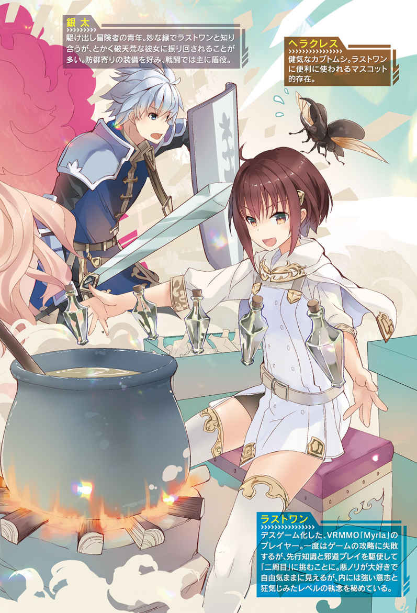

| Myrla<ミルラ>～VRMMOでやりたいほうだい～1 (HJ NOVELS) | |
| 悪糖 | |
| ホビージャパン (2018) | |



プロローグ
そして、最後の仲間が斬 り伏 せられた。
目の前に広がる現実を空 虚 なものに感じる。視界はたよりなくふらついて、今ここにある現実を脳が受け入れない。
息を吸って、吐 く。思考は既 に麻 痺 している。それでも、やらないといけないことだけははっきりと分かった。
『立つんだ。君はもうダメかと思っていたけど』
握 りしめた双 剣 を眼前の敵に突 きつける。これが、私がやるべき最後の仕事だ。
私はこいつを、殺さないといけない。
「ァァァああぁぁぁぁあああああアアアアアアアッ!! 」
雄 叫 びを上げ、剣 を振 るう。斬って、重ねて、また斬って。
剣を振り、蹴 りをねじ込み、立ち位置を変えては何度も斬りつけ、足場を利用して頭上を取り、斬撃を振り落 とし、着地ざまに浮 足 をローで刈 り取 る。
されど、それらの攻 勢 はたやすく受け流された。
『無意味だ。分かっているだろう？』
「御 託 をッ――」
剣速を上げる。問答は最 早 必要ない。殺意を研 ぎ澄 まし、暴力の嵐 を巻き起こす。一速、また一速とビートを上げ、速く強く斬り刻む。広がる知覚が現実を置き去りにし、視界から色が脱 落 してなお、真っ黒な世界で剣を振り続ける。
それでも――、それでも。有効打は一打として入らず、重ねられる剣 戟 は無 為 に散っていく。焦 りが剣 先 を鈍 らせることすら鬱 陶 しくて、思考もろとも置いていく。
「ほざくなァッ！」
繰 り出 した剣技は正面から打ち破られ、虚 実 を織り交ぜた絶技は簡単に回 避 された。通らない。もう届かない。限界を越 えて速度を上げ、コンマ数秒単位で行動を最適化し、より高いＤＰＳを追い求め、それでも遥 かに届かない。
そこには揺 るぎない力の差が開いていた。立ちはだかる現実が私に更 なる絶望を与 える。こんなものに、こんな安物に私たちの命運は打 ち砕 かれるのか。
極限の集中に時間の感覚すら歪 んでいく。コンマ以下の時間が何倍にも引 き伸 ばされ、スローモーになった知覚は、そいつが放った反 撃 を確かに捉 えていた。
放たれたのはただの蹴りだ。技 巧 など何ひとつ凝 らされていない、素人 同然の一 撃 。しかし、圧 倒 的 な速度に裏打ちされたその一撃に、技後硬 直 で伸びきった体は反応できなかった。
「がッ......！」
吸い込むように腹に足がめり込み、強 烈 なノックバックを受けて激しく吹 き飛 ばされた。
強 かに壁 に打ち付けられ、視界が激しく明 滅 する。頭を揺らす頭痛に体のコントロールを失った。スタンだ。
『まだやるの？』
一枚膜 を通したような声が響 く。既に勝利を確信しているのか、追 撃 は無かった。
スタンが抜 けると頭痛は引き、息を整えながら立ち上がる。剣を突きつけ、あらん限りの殺意を叩 きつける。私はまだ負けてない。
「当たり前だ......！」
まだ痺 れが残る体を跳 ね飛ばし、二歩で最高速に達して距 離 を詰 める。交差した双剣から大ぶりの双撃を放った。
そいつはそれを避けようともせず、軽く構えた長 剣 を上から下に振り下 ろす。双剣と長剣が正面からぶつかり合い、そして紙を裂 くように私の双剣が切り落とされた 。
『なあ』
手の中で武器が砕け散 る。ずっとずっと、一 緒 に戦い続けてきた相棒が。
気持ちが揺れたのは一 瞬 。すぐに拳 を固めて顔面目 掛 けてぶっ放す。一 矢 報 いようと放ったその一撃すら受け止められ、投げ飛ばされた。
背中から床 に叩きつけられ、大きく減少したライフが危険域に突 入 する。倒 れる私を見下ろすそいつは、酷 く悲しそうな顔をしていた。
『もう、いいだろう』
喉 元 に剣が突きつけられる。それで、終わりだった。
言うまでもない。負けたんだ。剣は折れ、策は尽 きた。頼 れる仲間はとうに死に絶え、そして私が最後の一人だ。
これが私たちの最 期 か。何ひとつ成 し遂 げられないまま、失意すら遺 せず死んでいくのか。私の内に広がる絶望が色を増し、泥 のように心にこびりついた。
「それでも......」
『さっさと楽になるといい。君のような人間でも、死 に際 くらいは安息に身を委 ねる権利がある』
死ぬのか。こんなところで私は、無価値に死んでいくのか。
そんなのはご免 だ。このままじゃ私は終われない。だと言うのに、諦 めたら何もかもが終わってしまうのに、体は鉛 のように動かなかった。
「私は、私たちは、まだ......」
『もう終わりだ。分かっているだろう。この場所こそが、君たちがたどり着いた結末だ』
ゲームオーバー。
私たちはこいつを倒せなかった。それが結末であり、最 早 揺 るぐことのない現実だ。
準備が足りなかった。人員が足りなかった。下調べが足りなかった。そんな言い訳すらもはや意味がない。負けて、死ぬ。複雑なこの世界が与えた、至 極 シンプルな終 焉 。
それでも、私は、この結末を望まない。
「まだ、私は終われない」
喉元に突きつけられた剣をどかし、ふらつく体を無理やり立たせる。剣はもう無い。だから代わりに鞘 を抜いた。
刃 がついていないだけだ。これでも戦える。これでも私は、こいつを殺せる。たとえ得物が無くたって、最期の時まで敵意を叩きつけなければならなかった。
『......凄 まじい執 念 だね。その狂 気 だけは感 嘆 に値するよ』
その言葉には恐 怖 の感情が込められていた。何もかもが及 ばずとも、気持ちは勝っていたようだ。
『聞かせてくれ。どうしてそこまでするんだ』
「どうしてって」
何をそんな、今 更 。理由なんて最初からひとつしかないじゃないか。
「断 ち切 れないものがある。背 負 ってきたものは私だけの命じゃない。何があっても、先に進み続けないといけない」
『僕 に言わせればそれは呪 いだよ。連綿と受 け継 がれる狂気そのものだ。違 うか？』
だったとしても、それでいい。呪われていることなんて百も承知だ。狂気だろうとなんだろうと力に変えて、私はこいつを殺してみせる。
「みんな死んだ。私を残して、誰 もが死んだ。この狂 った鳥かごでねじ切られて、失意のままに死んでいった」
『身勝手なことを言うじゃないか。自分たちが何をしてきたか、分かっているだろう？』
「何が正しいとか、何が間 違 ってるだとか、身勝手だとか不公平だとか、そんなものはもうどうでもいい。大事なことは一つだけだよ」
足に気力を漲 らせ、眼前の敵を強く見 据 える。灼 けつくような熱さの底に、黒々と粘ついた激情が湧 き上 がる。

迸 る戦意は決意となり、漏 れ出 る殺気が陽炎 を生み出す。体の隅 々 にまで意志を刻み込み、最期の時までそこに立つ。
誰かが私を『狂 人 』と呼んだ。その誰かはもういない。たとえ誰に呼ばれなかったとしても、最後の一人になろうとも、こいつだけは――。
「お前は、私が殺す」
『......それが君の望みか』
互 いに剣を向け合う。一 切 の甘 さを容 認 しない死線が開かれる。
斬り合 う寸前の最後の交差。狂気と殺意が飛び交 う精神的領土の削 り合い。この一 瞬 がきっと私の最後になる。
『名を遺せ』
それはただの思いつきだったんだろう。そんなものは無意味だって、こいつ自身も分かっているはずだ。
私はそれに答えたのか、答えなかったのか。自分でもわからない。感覚を死線に投げ込む刹 那 、無意識が何かをつぶやいたことはわかった。
剣戟を奏 で、剣閃が踊 る。燃え盛る命が終焉を引き寄せる。
叫 んでいた。私がここにいることを、世界に強く刻むように。鞘が砕け散り、拳が潰 れても、私は叫び続けた。
「死んで――」
全 てを失い、全てを打ち砕かれたとしても、私の胸には煌 々 と輝 く激情がある。
燃え盛るそれが命ずるままに、首が切り飛ばされるその時まで、私は叫び続けた。
「たまるかああああああああああああああああああッッ!! 」
＊＊＊＊＊
『いい目をしている』
意識がぶち切れる直前に、そいつは、そう言った。
いや、既に意識なんて無いのかもしれない。とっくに私は死んでいて、だとしたらこうして考えている私はなんなんだろう。
ともかく私は――あいつに負けて、首を切り飛ばされて死んだ。そして今にいたる。
よくわからない。理解を超 えていることはわかった。
『死なせるには惜 しい目だ』
そいつは、そう言った。
「よく言われるよ。くりくりお目目がチャームポイントってね」
『愛らしくは無い。視線だけで射殺さんばかりの強く輝く瞳 だ』
歓 喜 と殺意に満ちた狂人のような瞳って言われます。
それに比べればまだマシな評価なのかな。どうでもいいか。
「んで、君は誰」
『実にいい目をしている』
会話が通じない。本当になんなんだこいつ。
目を凝らして見ようとするも、そいつの姿はうまく捉えられない。なんというか、白くぼやけたモヤのような、とらえどころのない姿をしている。声もどこか遠くから響いていて、すぐそばにいるはずなのに何処 にもいないような、不思議な感覚。
よくわからない。わからないことばかりだ。
『本題に入ろう。お前は求め、我は応 えた。相 違 無 いか』
「相違無いって言われても、私としちゃ何が何やらさっぱりだよ。もちっと分かりやすく」
『死ぬ間 際 に叫んだだろう』
ああ、やっぱり私は死んだのか。でも死ぬ前に叫んだ、って言うと。
「死んでたまるかって、叫んだ覚えならあるよ」
『そう、それだ。お前は求め、我は応えよう』
「よくわからないけど、生き返らせてくれるってこと？」
『それは無理だ』
無理なんかい。
なんなんだこいつ。ちっとも掴 みどころが無いぞ。会話する気はあるのか。
『お前の求めは『死んでたまるか』だ。生き返らせてくれではない』
「まどろっこしい。結論を言え結論を」
『お前は死ななかったことにしよう』
「あーうん、分かった分かった」
そうかそうか、死ななかったことになるのか。よくわからん。
考えるのが面 倒 になって適当に相 槌 を打った瞬 間 、視界が輪転した。
ぐるりぐるりと、大きく、力強く回っていく。回るのは視界か、私か、それとも世界か。
『巻 き戻 された世界で、お前は再び道を歩むだろう。お前の人生がそうであったように、どんな道を行くかはお前が決めることだ』
感覚的に理解した。いや、理解させられた。回っているのは――巻き戻っているのは、時間そのものだ。
『死んだ』という結果も、何もかもを無かったことにして、全てが巻き戻った世界を歩みなおせる。
タイムリープからの地 獄 の二周目か、悪くない。
「ねえ、この場合記 憶 ってどうなるの？ 全部忘れてもう一周とか言わないよね？」
『記憶の保持はお前の求めにはない。まっさらな気持ちで楽しんでくると良い』
「それじゃ困る。無かったことにできないことがあるんだ。みんなの遺 言 とか背負ってるから、忘れちゃいましたーなんて言ったら枕 元 に立たれちゃう」
『お前の安 眠 など知ったことではない。サイコロを振り直せば結果は変わる。我にはそれで十分だ』
「何を言ってるか分かんないけど、あの悪意に溢 れた世界じゃ何回やりなおしても結果は同じだよ。違う結末が見たいならサービスしてよ」
『ふむ、一考の余地はあるな。ならば問おう。何を求め、何を差し出す？』
そう問うたそいつの口元は、わずかにつり上がったように見えた。
なんとなくだけど地 雷 の匂 いを感じ取る。迂 闊 なことを言えば途 方 も無い代 償 を背負わされると、そう感じた。この世界で培 った直感は当てにすることにしている。結構当たるんだ、私の直感。
「今生の記憶の保持。後は何とかする」
『そんなものでいいのか。強さに直結する力を与えることもできるのだぞ』
「代金が高いんでしょ？」
『くくく、まあな』
そいつは、初めて感情らしいものを動かしたように見えた。だから何だって話だけれども。
「んで、私の記憶はいくらで買えんの？」
『そうだな。瞳の少女よ、名は何と言う』
「最近よく名前を聞かれるなあ。私の名前は」
自分の名を答えようとして、口を閉ざした。多くの後 悔 と共に私は死んだ。死者の名を騙 るのは冒 涜 だろう。
目をつむり、少し考える。誰も彼 もが死んでいく世界で、最後まで戦い、そして散った――否 、生き残ってしまった者の名だ。
「敗残兵 。次はそう名乗るよ」
『そうか。なら、前の名前を貰 うことにしよう』
「死人の名前だ。手厚く弔 ってほしい」
『瞳の少女よ、さらばだ。遠い未来のどこかで、膨 大 な可能性の果てに、巡 り逢 えたらまた会おう』
ありがとう、と呟 いた言葉は、そいつに届いたのだろうか。輪転する世界が収束し、そうして私は巻き戻った。
＊＊＊＊＊
目を開くと、白い塔 の頂上に立っていた。
見上げれば銀天の空。眼下には無限に広がる白い雲海。星と雲に挟 まれた白い塔の頂上に、私は立っていた。
確か、この場所は......。
「Ｍｙｒｌａの世界へようこそ！ 既 存 のセーブデータが存在しません。新しい冒 険 者 を作成しますか？」
懐 かしい声がして、再び私の世界が始まった。
Ｍｙｒｌａ 。ファンタジー系のアクションＶＲＭＭＯであり、私を含 める多くの人々の命を奪 ったデスゲームだ。
この世界に囚 われた私は仲間たちと共に最前線を駆 け抜けていったが、結果として攻 略 組は壊 滅 。唯 一 生き残った私もラスボスに向かって単身特 攻 をしかけたが、返 り討 ちにあい殺された。
そしたらよくわかんない奴 に時間を巻き戻してもらい、気がつけばキャラクター作成画面に突っ立 っていた。ざっくり言うとそんな感じだ。私も何がなんだかあんまりよく分かってない。
「私の人生、マジ超 展開」
「『マジ超展開』というキャラクターは存在しません。既存のセーブデータが存在しません。新しい冒険者を作成しますか？」
「うるさいなポンコツＡＩ。ちょっとは頭を整理させろっての」
「『ポンコツＡＩ』というキャラクターは存在しません。既存のセーブデータが存在しません。新しい冒険者を作成しますか？」
「あーもう、わかったわかった。新規キャラクター作成」
ゲーム内のＡＩは中身入りと見 間 違 うほどリアルな反応を返すのに、ログインサーバーのＡＩはなんでこうポンコツなんだろう。ゲームの玄 関 なんだからもうちょっと頑 張 れよ。
まぁ、このＡＩに付き合わされるのも今回だけだ。なんせ一度ログインしたらログアウトはできない。これが最初で最後のログインになるわけだ。
......あれ、そもそもゲーム始めなければいいんじゃない？ それでデスゲーム攻 略 完 了 じゃない？
「キャラクターネームを入力してください」
「キャラクター作成をキャンセル。ログアウトして」
「エラーコード：０１４－０００１。ログアウトは現在システム管理者により制限されています」
「ＶＲ－ギアのコンソール起動。Ｍｙｒｌａを強制終 了 」
「エラーコード：０２６－１４２０。コンソールは現在システム管理者により制限されています」
「ＶＲ－ギアの強制シャットダウン」
「エラーコード：０３４－３４６１。シャットダウンは現在システム管理者により制限されています」
「......っ！ 管理者権限でＭｙｒｌａをアンインストール！」
「エラーコード：０４９－２０３３。管理者権限は現在システム管理者により制限されています」
「コール・サポートセンター！ もしくはコール・１１０番！」
「エラーコード：０５５－４０１９。外部へのコールは現在システム管理者により制限されています」
「住居管理ＡＩ、聞こえる!? 今すぐＶＲ－ギアに供給する電力を遮 断 して！」
「該 当 の操作を行うと脳に重 篤 な障害を負う危険があります。実行しますか？」
「するわけねーだろ！ ふっざけんなこのポンコツＡＩ！」
「キャラクターネームを『ポンコツＡＩ』にしますか？」
～～～～～っ
「ゲーム起動しただけでＶＲ－ギアのシステム権限ごと掌 握 されるってどうなってんだよ！ 前世紀生まれの電子卓上計算機 ならともかく、仮想現実端 末 のあずきバーより固いセキュリティがここまでメタメタにされてたまるかっつーの！ 最新技術舐 めんなばーかばーか！」
「システム管理者よりメッセージが届いております。『おめでとうございます！ あなたはゲーム内でエラーコードを五つ発生させた初めてのプレイヤーです！ なお、この偉 業 に関して称 号 や特典などは一切生じませんので悪 しからず』」
「黒幕まで出てきて煽ってんじゃねーぞこんちくしょおおおおおおおお 」
ああもうっ！ やればいいんでしょ、やれば！ 分かってたよ逃 げられないことなんて！
元々逃げる気なんてさらさらなかったし！ 仲間見捨てて私一人逃げるなんてできないし！ 今ならログアウトできるかなーって興味があっただけだし！ 悔 しくなんてないもんね！
......ちょっと泣きそう。つらい。このゲームまじつらいよ。さすがデスゲーム。
「......新規キャラクター作成。外見はスキャンデータに準 拠 して」
「スキャンデータをそのまま使用すると、個人情報が特定される恐 れがあります。本当に使用しますか？」
「今の情報社会で特定されない個人情報なんて無いよ。それに下手に身体データいじると感覚がブレるじゃん。あれ、嫌 なの」
「スキャンデータを使用しました。キャラクターネームを入力してください」
表示されたホログラムキーボードでラストワンと入力し、ＯＫを叩く。キャラクター作成が終わると人形が形作られ、その中に私の意識が入り込んだ。
軽く体を動かしてみる。長い間慣れ親しんだ体だ。違 和 感 はほとんど無い。一周目の時は電子で作られた体に上手 く馴 染 めず、何もないところで転んだりもしていた。昔のことを思い出して少し笑う。
「以上でキャラクター作成を終了します。それではＭｙｒｌａの世界をお楽しみください」
このゲームのキャラクター作成は外見と名前だけで終わりだ。クラスなんかもあるけど、そういうのは全部ゲーム内で覚えていく。
キャラクター作成を終え、始まったオープニングムービーを迷うこと無くスキップした。オープニングがストーリーの導入部分になってるけど、まあ言っちゃえばＭＭＯのストーリーなんてカレーの福 神 漬 みたいなもんだ。あれば食べるけど、無くても困らない。人によっては除 けることもある。
そうしてオープニングをすっ飛ばし、スタート地点である大 神 殿 に降り立つ。
降り立つと同時に始まるチュートリアルをとりあえず保留して、まずは時間を確 認 。時刻はサービスイン直後、スタート地点の大神殿には既に多くのプレイヤーがひしめいていた。
すれ違う人たちの顔を見れば、大体は知らない顔ばかりだけどたまに見覚えのある顔も見かける。死んだはずの人の顔を見て、ちょっとだけ胸が高鳴った。
（......本当に時間が巻き戻ってる。夢じゃないんだね、これって）
試 しにほっぺをつねってみたけど、頬 を触 っている感覚がするだけでまったく痛くない。そりゃそうだ。ここは仮想現実、剣でぶった切られても多少の衝 撃 を受けるだけで済む世界だ。
時間を確認するついでにログアウトコマンドも確認してみる。メニュー欄 のログアウトコマンドは灰色になっていて、触 れてみても何の反応も起こさない。
（わかっちゃいたことだけど。ここはもう鳥かごの中ってね）
この狂った鳥かごで起こった数多 の悲劇を知っているのに、どうして私は戻ってきたんだろう。
それはとても簡単な答えのはずなのに、形にならず溶 けて消えていった。
１章 スタートダッシュはゲーマーの嗜み
この時点でも事態に気がついた人がいるのか、周りからは「ログアウトができない」という声がちらほらと聞こえる。ＧＭコールしたり、事情を聞こうとＮＰＣを問 い詰めている人もいるようだけど、それらの努力は一 切 合 切 無 駄 になる。
いくらコールしてもＧＭには繋 がらないし、大神殿でじーっとしていても事情を説明してくれる人はあらわれない。初めての人死にが出てこの世界がデスゲームだということが分かっても、それは同じだ。
（......知ってる範 囲 で情報流すのが優 しさなんだろうけどなぁ。下手に事情知ってるっぽいこと言っちゃうと、殺気立った群衆に吊 るしあげられる未来しか見えない）
徹 頭 徹 尾 このゲームは投げっぱなしだ。私たちは唐 突 にこの状 況 に放 り込まれ、何も分からずに走りはじめることになる。それしかできることがなかったとも言うけれど。
それに、情報が錯 綜 している序 盤 はみんなが慎 重 に動いてくれる。攻略の足はやや遅 れることになるけど、自分の身の安全には変えられなかった。
（まずは考えを整理しよう。私がやるべきことは......）
攻略不可能に陥 る事態を避けること。これが、私のやるべきことだろう。
実際に攻略不可能に陥った最前線に居たのだから、原因は良く分かっている。
ゲームクリアを目標に掲 げて活動していた私たち攻略組は、自分たちにできる最高速度で攻略を推 し進 めた結果、他のプレイヤーをぶっちぎった。ぶっちぎりすぎて生産職の成熟を置いてけぼりにしたまま格上との戦いを繰り返し、満足な補給を得られない状況に陥り、最後には不十分な装備で決戦へと挑 んでしまった。その結末は記憶に新しい。
直接的には補給を受けられなかったことが原因だが、根本的には生産職と足並みを揃 えなかったことがそもそもの発 端 だ。まずはその状況を回避しなければならない。
（でも、攻略組が他と足並み揃えるなんて有り得ないよなぁ）
攻略組の行動理念は嫌というほど知っている。ゲームクリアさえできるなら、究極的には他のこと全てどうでもいい奴らだ。他のプレイヤーと足並みを揃えることなんて、余 程 のことがあっても有り得ないだろう。
（だったら、逆か）
攻略組に入って最前線で戦うより、生産職に回って生産界 隈 の動きを加速させて攻 略 組に食 らいつく。必要とされる動きはそっちの方なんじゃないかな。
一応最前線プレイヤーだったわけだし戦 闘 には自信があるけど、記 憶 引き継ぎのアドバンテージを活 かすなら戦闘よりも生産の方が適所に思える。生産なんてあんまりやったこと無いけど、情報は知ってるしなんとでもなるだろう。
（当面の目標は、攻略組が本格的に活動をはじめる前に、ある程度の生産基 盤 を固めることかな。最高品質の消 耗 品 が流通しはじめるところまでは目指したいね）
欲を言えば原価スレスレで投げ売りされるところまでやりたいけど、そこまでやるのは蛇 足 だろう。多少高くとも攻略組の手に渡 ればそれで十分だ。
それに至るまでのルートを概 算 し、手順を軽く整える。今はまだ穴だらけの計画だけど、行動しながら詰めればいい。
（何をするにしてもまずは軍資金、初手なんて決まってるか。いいや、続きは後で考えよ）
事前知識をフル活用して最短ルートでゲームを進め、先行利益をかっさらう。出しぬいた最初の１人が全てを持っていくルール無用のバトルロワイヤル。
そう、スタートダッシュはゲーマーの嗜みだ。
＊＊＊＊＊
行動を決めたら迅 速 に。サービスイン直後は１分１秒が貴重なリソースだ。無 駄 にする時間なんてない。
喧 騒 に包まれた大神殿を抜け出ると、入口前の庭に出る。綺 麗 に整備された緑あふれる庭で、その真ん中にはひときわ大きな樹 がそびえ立っている。
この樹はいわゆるご神木ってやつだ。確か設定によると世界樹を株分けしたものだというけど、プレイヤーにとって大事なのはそういうことではない。
樹の下に積もっている枝を一本拾い上げ、フォーカスを当てる。視線を固定すると自動で鑑 定 ウィンドウが立ち上がり、しばらくぐるぐる読み込んだ後に鑑定結果をはじき出した。
『世界樹の若枝』
（若造先 輩 、今回もお世話になります）
偉 大 なる若造に感謝の念を送り、『世界樹の若枝』をアイテムボックスに放り込む。樹自体が若いせいか、この樹からは若枝しか採れない。それでも十分に有用なことからついたあだ名が若造先輩。若造でも世界樹といったところか。
一日に数本しか採れないから集められるうちに集めておこう。『世界樹の若枝』と、ついでに『世界樹の若葉』も拾えるだけ拾っておく。若葉のほうにはちょっとした効果増強作用があり、錬金の素材になる。あって損は無い素材だ。
状態の良い若葉を拾い集めていると、その姿が見られていたのか他の人達が群がってきた。あまり独 占 するのも良くはないだろう。ちょうど頭上に落ちてきた若造先輩をもう一本キャッチして、その場を後にした。
＊＊＊＊＊
城 塞 都市ラインフォートレス。それがこの街の名前だ。
Ｍｙｒｌａにおいてラインフォートレス以外の街は一切出てこない。おそらくプレイヤーが集まる場所を一箇 所 に絞 ることでコミュニティの活性化を狙 ったデザインだと思うけど、そのせいで設定的には人間の住める唯一の場所になってしまってる。この世界の人間って実は絶 滅 寸前なんじゃないかってのは、このゲームでは言わないお約束。
街の外観としては、海に面した街を巨 大 な防 壁 がぐるりと囲む形になっている。狭 い防壁内により多くの人口を収容しようと努力したのか、家の上に家が建ち、家の下に家が建つ、家と家とがごちゃまぜになった立体構造都市が出来上がった。
街のど真ん中を通るメインストリートはまだ開けてるけど、ちょっと路地に入ると上も下も建物だらけ。見上げれば空を埋 め尽くすロープの群れに洗 濯 物 やら干 物 やらが山ほど吊るされ、見下ろせばいつの間にか民家の屋根の上を歩いていたことに気がつく。生活感を片 っ端 から鍋 の中に突っ込んでごとごと煮 込 んだような町並みだ。
（最初の頃 は雑貨屋に行くだけで半日かかったなぁ）
そんな迷 路 のような路地裏を縫 い、最短コースで港の方に歩いて行く。初見殺しの町並みも、私にかかれば庭みたいなもんですよ。
細い路地を抜けて港地区に出ると、おだやかな波と大 海 原 がそこにあった。ＮＰＣ所有の帆 船 が数 隻 停 泊 しており、沖 には魚 釣 りの漁船もちらほらと見える。
「いい天気」
空は青々と晴れて、雲がのんびり流れていく。柔 らかい陽光がこれまた気持ちいい。カモメも飛んでるよ。
なんかもう色々平和すぎて眠 くなってきた。さっきまでラスボス相手に命がけの戦いしてたとは思えない陽気だ。人生何がどうなるかわかんないもんだね。
アイテムボックスから『世界樹の若枝』と、ここに来る途 中 で寄った雑貨屋で買った糸を取り出す。クラフトウィンドウを開いてその２つを放り込み、クラフトボタンをぽちり。
待つこと数秒。ポゥンとＳＥが鳴って、手の中に釣 り竿 が現れた。
（クラフトするのっていつぶりだろ......。これで合ってるんだよね）
『世界樹の若枝』は一部のクラフトにおいて『世界樹の枝』の代用素材として使うことができる。大きな物を作るには強度が足りず代用できないけれど、釣り竿くらいの大きさなら若造先輩でも十分だ。こうして作られたのが『世界樹の釣り竿』、ユニーク釣り竿を除けばトップクラスの性能を誇 る。これ以上の釣り竿となるとちょっとやそっとの労力では手に入らないだろう。
（じゃ、やるか）
釣り竿担 いでいざ釣りへ。何 を隠 そう、この私は悠 長 なことに釣りをしに来たのだ。
（元手なしで稼 げるのって、釣りくらいしか無いしなぁ）
釣りは釣り竿さえあれば始められて、ちょっとしたミニゲームをこなせば魚が手に入るっていうお手軽生産要素だ。回数をこなせば熟練度が上がり、難しい釣り場 でも魚を釣ることができるようになる。
ここで重要なポイントは二つ。一つは必 須 なのは釣り竿だけで消耗品は無くてもよく、時間さえかければいくらでも魚が釣れること。もう一つは、『回数をこなせば』熟練度が上がること。
つまり釣り熟練度を上げるためには、ミニゲームをクリアして魚を釣り上げる必要はない。釣りに失敗しても熟練度は上がるのだ。
水の流れが溜 まる場所に行ってみると、そこでは外洋から流されてきた流木がこれでもかとひしめき合い、芋 洗いのような様相を呈 していた。ここにルアーを投げ込もうものなら流木に引っかかり、一瞬で失敗判定をくだされるだろう。
（普 通 にやるんじゃ、魚がかかるまで３分とかかかっちゃうからね。ここで流木釣ってりゃ一瞬でガリゴリ熟練度が稼 げるらしいけど）
釣りで手軽に稼げるらしい、と風の噂 で聞いたことがある。実際にやったことはない。そんなことする暇 あったら経験値稼いでたし。
手 頃 な石に座 って、流木のど真ん中にルアーを放り込む。すぐさま失敗判定が下され、自動でルアーが手元に返ってきた。アイテム化した流木がインベントリの中に放り込まれる。いわゆるゴミだ。こればかりはどうしようもない。
もう一度ルアーを放り込み、失敗判定と共に返ってくるルアーをぽんぽん送り返す。乏 しいアクション要素にゲーマー魂 がくすぐられ、意味もなく行動の最適化をしてみる。
一往復にかかる時間をユーザーインターフェイスのタイマーで計測し、十往復ごとにラップを取ってみる。ゼロコンマ数秒を徐 々 にこそぎ落とし、おおよそ反射神経の限界を垣 間 見 るところまで行き着いて、飽 きた。
（............眠い）
残像すら浮 かべる速度で最適化されたモーションを繰 り返しつつ、あくびをひとつ。わかっちゃいたことだけど、生産スキルの熟練上げなんて作業だよ作業。
思考操作でスキルウィンドウを呼び出 して熟練度を確認すると、そのナメクジが這 うような伸 び方 に更 なる眠 気 を誘 われた。
（のんびりやるか）
幸いにも天気はいい。スローすぎる時間の流れは戸 惑 いを覚えるけれど、これ以上効率は上げられない。ゆっくりやろう。
雲の流れをなんとなく眺 めながら、振 るう釣り竿が生み出す残像は時間を置き去りにした。
＊＊＊＊＊
釣りをしてたら日が暮れた。
「うっそだろおい」
声に出してみたけど、日は暮れた。暮れちゃったんだからしょうがない。
のんびりとは言ったけど、まさか初日をまるまる釣りだけに費やすとは思わなかった。スタートダッシュとして大 丈 夫 なのかこれ。
（いやいやいや。きっと最高効率でレベリングしても、今 頃 レベル８になるかどうかってくらいでしょ。それを鑑 みるに釣り熟練度を取った私の選 択 は間違っちゃいないはず......）
努力の甲 斐 もあり、釣り熟練度はようやくカンストした。仕様の穴をついて裏 技 レベルで効率化させても丸一日かかったよ。オンラインゲームのレベリングはこれだから困る。
（無意味に無限の時間を吸うと見るか、努力を積み重ねて境地に至ると取るか......。まあ、それはいっか）
アイテムインベントリに並ぶのは種々の木材。すべて流木として釣れたものだ。
流木の中身が何なのかはランダムで決められる。大体はレア度の低い『カシ』や『シラカバ』だけど、たまに『サクラ』なんかも混じってたりする。今のところ手に入った中で一番レアなのが『黒 檀 』だ。計算外だったけど、木材が大量に手に入ったのは僥 倖 。これはこれで何かしら使いみちはあるだろう。
随 分 と長いこと座っていた石から立ち上がる。
「お嬢 ちゃん、もういいのかい？」
「......えーと、誰？」
急に話しかけられた。釣り人 の格好をした老人で、表示を見るにＮＰＣのようだ。
「さっきからずっとそこで流木に向かって竿 を振っていただろう？ そこじゃあ何も釣れないよって声をかけようとしたんだけど、あんまり無心で釣ってるものだから声をかけるにかけられなくての」
「そりゃどうも、ご心配をおかけしたようで？」
「差 し支 えなければで良いが、あそこで何をしていたか教えてもらってもいいかの？」
「釣りの練習だけど」
そう言うと、ＮＰＣの釣り人は目を丸くしてからからと笑った。
「いやいやいや。いくら流木を釣ったって何も上手くなりやしないよ。こう見えてもわしは釣りの名人での。良ければ竿の振り方を教えてあげよう」
ぴこんとＳＥがなって、クエストウィンドウが表示される。
『釣り名人の指導・その一』を受注しますか？ Ｙｅｓ／Ｎｏ
あー、なるほど。クエストＮＰＣか。釣りの名人だとか竿の振り方だとか言うもんだから事案かと思った。
「それよりもさ。エサ釣りやりたいんだけど、この辺で売ってる場所知らない？」
「そうそう。素人 はルアーよりもエサ釣りから始めたほうがいい。釣り餌ならそこの海の家で売ってるから買っておいで」
表示されたクエストウィンドウは保留にしておいて、海の家までひとっ走り。店番をしている兄ちゃんに話しかける。
「お兄さんお兄さん。まだやってる？」
「おうよ。ウチは１６時から２４時までやってるぜ」
「一番ランクの高い釣り餌って何？」
「そりゃもちろんヘラクレスオオカブトムシだな。コイツはスゲェぞ。どんな大物でもたちまち食いつく」
ヘラクレスオオカブトムシって釣り餌になるんだ。初めて知った。
「おいくら？」
「値段もスゲェぞ。一匹 １，０００ゴールドだ。スゲェだろ」
所持金確認。全財産１，０００ゴールドちょっとはある。迷わず投入。
「んじゃそいつ、一匹ちょうだい」
「まいどあり。ここで装備していくかい？」
「虫を装備する趣 味 は無いかなぁ......。あ、竿につけるかって意味か。お願いします」
世界樹の釣り竿をお兄さんに渡すと、お兄さんは手 際 よく釣り針 にヘラクレスオオカブトムシをつけてくれた。
虫は触れないのー、なんて可愛 いことを言う気はないけど、足がわさわさしている奴にはできるだけ触りたくない気持ちはある。心臓ぶち抜 くほうがまだ気は楽だ。
「ありがと。んじゃ、またね」
「おう、また来いよ」
海の家のお兄さんに軽く手を振って、釣り人のじいさんのところまで戻る。
「......買っておいでとは言ったが、よりにもよってヘラクレスオオカブトムシを買ってきたのかの」
「うん。大物釣りたいの」
「悪いことは言わんからやめておきなされ。それわしですら扱 えるかどうかわからん気難しい餌だぞ」
「ご丁 寧 にフラグ立ててくれてありがとう。んじゃご老人、この辺で一番大物釣れる場所教えてよ」
「やれやれ。まあいい、物は試しとも言うだろう。ついておいで」
釣り人のじいさんに誘われるまま岩 礁 地帯へ。既 に日は暮れてあたりは薄 暗 く、周りに人気はない。月明かりという名のゲーム的補正があるから結構よく見えるけどね。
いやあ、事案の匂いが濃 くなってきましたよ。
「ここじゃ。ここは岩礁になっている上に波が強く、根 掛 かりしやすいポイントになっておる。ここでしか釣れない大物が数多く生息するが、熟練の釣り師 でもなければ投げ込むことすら不可能じゃ」
「ふーん。んじゃ、やってみるね」
釣りの作法なんてよくしらない。やったことないもん。
だからとりあえず、思いっきり振りかぶって、思いっきり遠くまでぶん投げてみた。
カンストした釣り熟練度にアシストされた釣り竿は一 瞬 だけ黄金 色 に輝 き、ブォンブォンとうなりをあげてしなる。釣り竿から伸びる一筋の銀糸は意思を持っているように真 っ直 ぐ飛び、釣り針にくっつけられたヘラクレスオオカブトムシが「ピギィィィ！」と悲鳴を上げながら海水に飛び込んだ。
............。ヘラクレスって鳴くんだ。知らなかった。
「ほ、ほほう。なかなかいい位置に投げ込んだの。じゃがまあ、釣りってのはそれだけでかかるほど甘 くは――」
釣り竿を持つ指にぴくんと刺 激 が伝わる。かかったかな？ って思って釣り竿をちょいと上げてみると、急に海面からズドンと大きな水しぶきが上がった。
ものすごい力で釣り竿が海面に引きこまれそうになり、あわてて踏 みとどまる。その瞬間魚の体力を示すバーが現れ、釣りのチュートリアルが始まった。
「じゃまっ」
視界を占 拠 するチュートリアルを消す。こんなミニゲーム、チュートリアルなんかなくってもノリでなんとかなるんだよ！
「お、お嬢ちゃん！ なんちゅう大物を引き当てたんじゃ！ ええか、ガイドに沿って慎重に行くんじゃぞ！」
「だいたい分かるよ。慎重に守って、大 胆 に攻 めればいいんでしょ？ 任せて！」
「そんな単純なものじゃ......」
守るときは慎重に、攻めるときは大胆に。私はどんな敵でもこの戦術を基本に戦ってきた。得物が剣 から釣り竿に変わっても同じでしょ。多分。
海に引き込まれないよう竿をしっかり握 って、全力で踏みとどまる。凄 まじい勢いで竿がしなるが、さすがは世界樹の釣り竿。そう簡単に折れたりはしない。糸は店売り品だから簡単に切れる。気をつけよう。
しばらくギリギリと拮 抗 していると、不意に抵 抗 が弱くなった瞬 間 が訪 れた。
「魚の抵抗が弱まったぞ！ 今じゃ、慎重に引き上げるんじゃ！」
「じいさん、気をつけてね。せーのっと！」
小さくためを作って、慎重さのカケラもなく思いっきり引き上げた。
釣り竿が一瞬だけ黄金色に輝くと、海から再び大きな水しぶきが上がり、巨大な魚が海面から打ち上がる。打ち上がった巨大な魚はまっすぐに宙を舞 い、私の手元目 掛 けて飛び込んできた。
「おっと」
そのままだと直 撃 しそうだったから、魚の頭からまっすぐ生えた角をキャッチする。勢いを殺すために角をつかんだままくるりとターン。ぐねんぐねん動く魚を岩礁に叩 きつけ、角をつかんだまま首元を踏みつけた。
その魚には大きな一本角がそびえ立っており、体に鱗 はない。全体的にまるまるとした可愛らしいフォルムで、前びれをびったんびったんさせている。
「ねー、じいさん。これってどういう魚？」
「こ、これは......。魚ではない。海のユニコーン、イッカククジラじゃ！」
「クジラなの？」
「クジラの仲間じゃ」
へー。イッカクってこんな浅 瀬 の岩礁地帯に棲 んでいてヘラクレスオオカブトムシに食いつくんだ。生き物の世界って不思議がいっぱいだなぁ。
「大変貴重で、深海と蒼 穹 の神カームコールの遣 いとも呼ばれる神聖な生き物じゃ。まさか生きて目にすることがあろうとは......」
「ねえじいさん。こいつって高く売れるかな」
「売......、売るぅ!? 海神の遣いじゃぞ!? 」
「いやだって、そうは言ってもお金ないし」
全財産ヘラクレスに使っちゃったし。無一文だし。
「この角とか高く売れそうだよねぇ。皮や肉なんかもいい素材になりそう。クジラの仲間なら鯨 油 や竜 涎 香 なんかも......。いや、竜涎香はマッコウクジラだけか」
「なんでそういう金になりそうな知識だけあるんじゃ」
「ゲーマーだもん」
でもまぁ、そうは言っても海神の遣いと来たか。下手に殺すと余計なイベントフラグが立ちそうだ。しょうがないから逃がしてあげよう。
決めた後は迅速に。イッカクの角を掴んで、海の中にすぽーんと放り投 げる。ばしゃーんと大きな音を立てて海神の遣いは海の中に帰っていった。
じいさんがなんまんだぶなんまんだぶと海に向かって祈 る。それに合わせて私も海に向かって手を揃えた。
「今度はお金になりそうな魚が釣れますように」
「お嬢ちゃんはそればっかりじゃのう......」
その時、近くに置いておいた釣り竿が黄金色に輝く。どうしたのかと手に取ると、いつの間にか釣り糸 が海の中に入っていた。
何かかかったのかなと釣り竿を引く。ずしんとした手 応 えだが、イッカクと違 って抵抗が無い。なんかこう、無機物を引いているような感 触 。
「......んー？ なんだこれ？」
釣り竿を引き上げる。釣り針には相変わらずヘラクレスオオカブトムシがくっついていて、その六脚 で大きな宝箱をしっかりと握りしめていた。
「お、おお？ おおお？」
「な、なんとこれは......！ 深海と蒼穹の神カームコールが、自然を愛する釣り名人にのみ授 けると言う海神の財宝ではないか！」
熟練度カンスト。大物釣った。ちゃんと逃 がした。まさしく私は釣り名人。判定ガバガバじゃんこのゲーム。
「さっすが私！ 自然を愛する釣り名人！」
「カームコールよ、ついに耄 碌 したか......！」
その時、海から大波が上がりじいさんだけをべちょ濡 れにした。いいぞやったれカームコール。
地上まで宝箱を引き上げ、ヘラクレスオオカブトムシを針から外す。こいつ、イッカクとの戦いを生き抜いた上に宝箱まで回収してきたというのか。
「お前も勇者だなぁ」
角をつんとつついてやると、限界だったのかヘラクレスオオカブトムシはひっくり返って六脚をぴくぴくさせた。
最初から持ってる初心者用ポーションを少したらしてやると、体力が回復したのか足をワサワサさせた。もうちょっとポーションをかけると元気になって元の体勢に戻 った。
「お入り」
アイテムインベントリを開いてヘラクレスオオカブトムシを中にしまう。よしよし、ゆっくりお休み。
「何をやっとるんじゃお嬢ちゃん」
「いやぁ。ただの釣り餌のつもりだったんだけど、なんか愛着湧 いちゃって」
「つくづく不思議なお嬢ちゃんじゃのう......」
それはそうと、釣り上 げた宝箱を開けようとする。宝箱の口のところが錆 び付 いていて開かなかった。蹴 っ飛 ばすと開いた。
中から出てきたのは、深い蒼 色をした優美な真っ直ぐの棒。
「おお......。こ、これは......！」
「知っているのかじいさん！」
「『蒼 海 龍 の釣り竿』......！ 大海に棲 むリヴァイアサンの尾 から出てきた槍 を打ちなおしたと言われる、幻 の釣り竿じゃ！ これを持つことは全 ての釣り人の誉 じゃぞ！」
「色々突っ込みたいところあるけど何より釣り竿もういらないわ！」
『世界樹の釣り竿』とかいう十分優 秀 な釣り竿持ってるよ！ 何がリヴァイアサンだよ尾から武器が出てくるのはヤマタノオロチだ！ っていうか槍が出てきたならそのまま槍をくれよ！ なんでわざわざ釣り竿に打ち直してんだよバカームコール!!
とかいうことを海に向かって叫 んでたら、大波が上がって私をびしょ濡れにした。つめたい。
「......なんかもう、疲 れた」
「......そうじゃな。お嬢ちゃん、帰るか？」
「ううん。お金無いから、もうちょっと釣りしなきゃ......。ねえ、じいさん」
「どうした？」
「釣りのやり方教えて。普通の魚が、普通に釣れる釣りのやり方を」
「お、おう。それは構わんが......」
ずっと保留にしていた『釣り名人の指導・その一』のクエストを受注する。不思議な虚 脱 感に包まれたまま、『蒼海龍の釣り竿』を肩 に担 いだ。
２章 サービスイン後は大体バグゲー
あの後滅 茶 苦 茶 夜 釣 りした。
じいさんにちゃんとした釣りの仕方を教えてもらった後は普通に釣れた。イッカクだのカームコールだのわけわかんないのが出てくることは無かった。海は平和だった。
（まぁ、なんだかんだで軍資金は貯 まったことだし）
釣った魚を換 金 して、今の私は小金持ちだ。蒼海龍の釣り竿 とかいう想定外はあったけど、予定通りっちゃ予定通り。
現在時刻は朝の６時。そろそろ寝 たい気もするけど、その前にやることやっちゃおう。城塞都市ラインフォートレス内部を歩き、裏路地を抜けて辿 り着 いたのは農場地区。
農場地区はその名の通りだだっ広い農地だ。ラインフォートレス内の人口を支えるため、防壁内に広大な敷 地 が用意されている。この地区には陽光を遮 るような建物は無いが、市街地区との境界線には難民キャンプのようなものが固まっている。おそらく市街地区に住めずに溢 れでたものだろう。
この農場地区でプレイヤーは農地を購 入 し、作物やらなんやらを栽 培 することができる。今はまだ何も植えられていない茶色い地面が広がってるけど、１ヶ 月 もすれば好き勝手に植えまくるプレイヤーたちの努力により樹海もかくやと言わんばかりの混 沌 の様を呈することになる。
その農場区画の中に一 際 大きく平べったい建物が建っている。農業ギルド、通 称 農協の施 設 だ。
「こんちはー」
農協に入って受付のお姉さんに挨 拶 する。
「いらっしゃいませ。本日はどのようなご用件でしょうか？」
「農地を買いたいんだけど」
「１区画２０，０００ゴールドになりますが、よろしいでしょうか？」
「いいよ。これってさ、お金出せば区画いっぱい買えたりしない？」
「申し訳ございませんが、お１人あたり１区画までとなっております。その代わり有 償 となりますが、農地を拡張するサービスがございますよ」
１人１区画までだけど拡張はできる。異次元にでも農地を増やしてるんですかね。すごいぞ農業７０００年の歴史。
「んじゃ１区画分買うよ」
「承 りました。では、農地をお選びください」
農場地区の全景地図がウィンドウに表示された。地図はさいの目状に区画で切られていて、ここから自分の買いたい区画を選べってことらしい。今ならどこもガラ空きの選び放題だ。
「アクセスが良くて、釣りもしたいからできれば水辺の近くがいいんだけど......」
「でしたらこちらはいかがでしょう」
お姉さんが指し示した場所は、市街地区との境界線にほど近く、湖に面した区画だった。こんな農業地区のど真ん中に湖て。
「この湖、後で干 拓 して農地にする予定とかないよね？」
「その湖では豊 穣 と荒 廃 の神リグリ様をお祀 りしております。干拓などとんでもございませんよ」
「そう。ならいいんだけど」
リグリを祀ってるのかぁ。一周目の時に会ったことはあるけど、個人的にあの神様はどうも苦手だ。ものすっごい人間嫌 いだし。
でもリグリは豊穣神でもあるし、ご利益はありそうだ。
「その区画にさせてもらうよ。はい、お金」
「ありがとうございます。では、農地の使用方法を説明させていただきますね」
「あー、パスで。なんとかなるでしょ、多分」
「は、はぁ......。では、何かご不明な点がございましたら職員の方にお問い合わせください」
「ん。ありがとね。ああ後、種とか肥料とかってどこで買える？」
「農業に必要な物でしたら、そちらのカウンターで販 売 しております」
職員のお姉さんに手を振って販売カウンターの方へ。販売カウンターには兄ちゃんが気だるげに座っていた。
「お兄さんお兄さん、今ってやってる？」
「おうよ。ウチは２４時から８時までやってるぜ。何が入用だ？」
「まず農具一式欲 しい」
「んじゃこれ持ってけ」
お兄さんが放り投げた農具一式を受け取る。中をざっと確 認 すると、ジョウロやらクワやらスコップやら斧 （？）やらが入っていた。
「え、タダでいいの？」
「本当ならあっちのカウンターで渡すもんだよ。お前、面 倒 がって説明飛ばしたじゃん」
そう言ってお兄さんが、受付のお姉さんの方を指差す。受付のお姉さんが困り顔で手を振っていた。
そりゃ失礼しました。手を合わせて謝 っておく。
「で、欲しいのはそんだけか？」
「あーっと、種だよ種。謎 の種ってある？」
「謎の種か......。お前、変なもん欲しがるなぁ」
謎の種。何が生えてくるかわからない種。農業の利点である、『特定の作物を大量生産できる』ことに真っ向から喧 嘩 を売ったトッポイ種。
「まあいいじゃん。農地一面分ちょうだい」
「農地一面中謎の種植える気かよ。明日にゃお前の畑は博物館になってるぜ」
「博物館で済めばいいけどねー」
お金を渡し、じゃらじゃらと種の詰 まった袋 を受け取った。試 しにひとつ食べてみる。謎の味がした。
「うまいか？」
「口直しが欲しい」
「だろうな」
どうやら種とは食べるものではないらしい。これは農業において極 めて重要な知識と言えるだろう。
「後、一番ランクの高い肥料って何？」
「ランクも何も、肥料つったらコイツしかないぞ」
そう言ってお兄さんは、テーブルの上にポーションを置いた。
「......ポーションだね」
「ああ、ポーションだ」
「飲んだら体力が回復するやつだよね」
「人が飲めばな。植物が飲んだら元気になる」
「ポーションすごい」
「な？ スゲェだろ？」
植物にもポーションの効果があるとは知らなかった。農業って奥 深 い。
「んじゃそのポーション、買えるだけ買いたい」
「買えるだけとは豪 勢 だな。他のやつの分もあるから、１人あたり２箱までだ。もっと欲しかったらまた明日来い」
お金を払 ってポーションを山ほど買う。大量のポーションがアイテムボックスの中に飲み込まれていく様はなかなかに壮 観 だ。
他のＶＲＭＭＯの例に倣 って、Ｍｙｒｌａのポーションにも流通限界がある。一週間もすれば店売りのポーションは枯 渇 することになるだろう。それまでに準備しとかないと。
「色々ありがとう。それじゃ、またね」
「おう、また来いよ」
「お待ちしております」
受付のお姉さんと販売カウンターの兄ちゃんに手を振って、農協を出る。
準備はこれくらいにしておこう。ここから先は楽しい楽しいスローライフの時間だ。
＊＊＊＊＊
自分の農地にたどり着いた。まずはばーっと全景を見る。
「土だ」
土だった。以上。
そりゃ農地なんて土しかないもんだ。振り返 ればリグリを祀った湖があるけど、それ以外は面白 さもへったくれもない。
とりあえずクワを構え、地面に向かって振り下 ろしてみる。少しだけ土が耕され、農業熟練度が少し上 昇 した。農業も生産スキルだ。例に漏 れず熟練度があり、熟練度を上げれば難しい作物も安定して栽培することができるようになる。
農業熟練度を上げる機会は複数ある。土を耕した時、水をまいた時、種を植えた時の３つだ。
さて、ここで１つ問題がある。このゲーム、Ｍｙｒｌａはサービスインしてからまだ日が浅い。そしてオンラインゲームってものは、サービスイン後は大体バグゲーなのが世の常だ。
まずクワをおもむろに振りかぶって土の中に刃 の部分を差し込んだ。するとあら不思議、何もしなくても農業熟練度が断続的に上昇していく。
次に水の入っていないジョウロを、何もない農地に向けて傾 けてみた。するとあら不思議、水も撒 いていないのに農業熟練度が上昇していく。
最後にインベントリから取り出した種を地面に植え、その種を掘 り出してはまた植える。するとあら不思議、やればやるほど農業熟練度が上がっていく。
「バグゲー乙 」
農業熟練度を成長させる要素の全てに仕様の穴があることに気がついたあるプレイヤーは、こう呟 いたという。
テストプレイしろよと。
＊＊＊＊＊
クワを地面に埋めたまま放置し、水の入ってないジョウロを地面に傾けながら、種を植えたり掘ったりすること２時間弱。農業熟練度がカンストした。
あれだけ効率的に進めた釣り熟練度のカンストですら丸一日かかったと言うのに。それに比べれば農業熟練度のカンストなんて苦労ですらない。もはやチュートリアルの一 環 だ。
意味のない作業を続けた２時間弱。感 慨 も徒労感もへったくれもない。あるのはただただ、無感情。
「またつまらぬものをカンストさせてしまった......」
いやもう、本当につまらなかったわ。なんだよ種を植えたり掘ったりするだけって。どういう拷 問 だよ気が狂 うわ。
「お嬢ちゃん、もういいのかい？」
「......その声は」
急に話しかけられた。農家の格好をした老人で、表示を見るにＮＰＣのようだ。
「さっきからずっとそこでこう......なんというか......、奇 行 をしておったじゃろう？ 大 丈 夫 かの？ 病院、行っとくかの？」
「余計なお世話だよ。っていうかじいさん、なんでここに居るの？ 釣りＮＰＣじゃないの？」
「実はわし、農業の名人でもあるのじゃ」
ああ、うん、そうですか。ジジイは暇だな。
「ここで会ったのも何かの縁 じゃ。どれ、わしが種の植え方から教えてあげよう」
ぴこんとＳＥがなって、クエストウィンドウが表示される。
『農業名人の指導・その一』を受注しますか？ Ｙｅｓ／Ｎｏ
なんですか種の植え方を教えるって。これ事案なんじゃないですか。そこんとこどうなんですか。
今回は迷わずＮｏをタッチする。
「遠 慮 しとくよ。釣りと違って農業くらいは大丈夫だから」
「ほほう。さすがに農業のやり方は知っておったか。いらん世話を焼いたようだな」
「いんや、知らないけど。ばーって種植えて、ずばーって水やって、どばーって肥料使えばいいんでしょ？」
「............」
ぴこんとＳＥがなって、クエストウィンドウがもう一度表示された。
『農業名人の指導・その一』を受注しましょうね？ Ｙｅｓ／Ｎｏ
Ｎｏをタッチする。間 髪 いれずもう一度同じクエストウィンドウが表示された。
「だから大丈夫だって、多分」
「いーや、絶対やばい！ わし分かるもん！ このまま放っとくとロクなことが起こらないって分かっちゃうんだもん！」
「信じろジジイ。信じるものは救われる」
「すくわれるのは足じゃ！」
消しても消えないクエストウィンドウを視界の端 に追いやり、インベントリから謎の種を１スタック取り出す。まあ見ときなさいよ。元攻 略 組の最前線プレイヤーが農業熟練度をカンストさせたんだ。これで失敗するはずが無いでしょうに。
ジョウロに水を汲 み、アイテムインベントリを使いやすいよう並 べ替 える。
「んじゃ、行っくぞー！」
クワを大ぶりに上段に構える。大剣と同じ要領で力を溜 めるとクワが黄金色に輝き、全力で叩きつけると着 弾 点を中心に農地の土が大きく跳 ね上がった。
更に叩きつけたクワの柄を踏み、空中へと舞い上がる。舞い上がった空から更に宙を踏んでエアジャンプ。体をくるりと回して地上を向き、高度１５メートルの高さから種を等 間 隔 に地表に打ち込む。
素 早 く得物をジョウロに切 り替え、体を横に高速回転。私自身をスプリンクラーとすることで区画一帯に水をばらまく。黄金色に輝くジョウロから水が放たれ、黄金回転となった私は更に加速する気がする！
すたっと地上に着地してフィニッシュ。時間にしておよそ４秒、深く耕された農地には種が等間隔に並び、区画一帯には十分な水が撒かれた。
「ブラボォウ......！ ブラボォォオオオオオオゥウウ!! 」
テンションの上がったジジイが涙 を流しながら狂ったオモチャのように手を叩く。どうでもいいけどこのジジイ、農地のど真ん中に突 っ立 ってたせいでずぶ濡れの土まみれだ。汚 いから近寄らないで欲しい。
「これが元攻略組の反射神経をフルに使った農業――いや、『農術』だ。農業７０００年の歴史の集大成、見たかジジイ！」
「ヒューッ！ さすがだぜお嬢ちゃん！ これが次世代農法！ 第一次産業の夜明けは近い！」
「ま、ふざけるのはこれくらいにして」
「あ、わりとあっさり元のテンションに戻るんじゃな」
あんなのただの曲芸にすぎないわけでしてね。普 通 に耕して種植えて水撒いても結果は変わんない。大事なのはここからだ。
インベントリからポーションを取り出す。
「それじゃあお待ちかね、肥料投 与 の時間です」
「肥料の分量は慎 重 にな。少なすぎては育たんし、過 剰 に与 えてもかえって根が腐 る。作物に対して最適な量を与えることが肝 要 じゃ」
とかなんとか言ってるじいさんを無視して、ありったけのポーションを農地にじゃぶじゃぶ注いでいく。どれくらいかって言うと、赤いポーションで農地の土が赤に染まるまで。
「............。お嬢ちゃん、わしの話聞いておったかの？」
「いいかじいさん。こういうのはフィーリングなんですよ。愛情を山ほど注げば植物は必ず応 えてくれる」
「愛情表現を肥料でするでない！ 栄養過多すぎてぺんぺん草も生えない地質になっておるぞ！」
「獅 子 は我 が子 を千 尋 の谷に突き落 とすといいますか」
「わしにはケーキの山に溺 れさせているように見えるわ！」
まあまあ、大 丈 夫 大丈夫。なんとかなるってきっと。
「さて、これで準備はおしまい。後は８時間もすれば収 穫 祭 ですよ」
「この紅の大地 に雑草の一本でも生えていればの......」
「失礼な」
何さ紅の大地 って。失礼しちゃうわ。
「そんじゃ、私はそろそろ寝るよ」
「寝るって、ようやく朝日が昇ってきた頃 じゃぞ」
「昨日から徹 夜 で作業ゲーしてたからもう眠 くて。またね、じいさん」
じいさんに適当に手を振 って、市街地区へ歩き出す。朝方になれば寝ていたプレイヤーたちも目覚めるだろう。空きだした宿屋に泊 まるつもりだ。
ふぁうとあくびを一つして、輝く朝日に目を細めた。
＊＊＊＊＊
頬 をつねる。痛みは無い。
初期装備のナイフを取り出 して、手のひらに軽く刺 した。ＨＰこそ減らないが鈍 い衝 撃 が走る。
少なくとも夢じゃないようだ。
「なんだこれ」
目の前の光景がどうにも信じられず、目をこする。幻 覚 かと思ったけどそうでもないらしい。
「なんだこう......、なんだこれ......？」
「お、お嬢 ちゃん！ 起きたか！ 大変なことになっておるぞ！」
「いやうん、大変なことになってるね」
数時間ぶりに訪れた私の農地。
いや、農地だった場所と言うべきだろう。今は魔 界 と呼ぶのが適切だ。
オドロオドロしい紅の大地からうじゃりうじゃりと生 い茂 るのは、この世のものとは思えない摩 訶 不 思 議 な植物群。熱帯情 緒 を溢れさせる濃 緑 な草木が四方八方と乱れ咲き、物理法則を完全に無視した炎 の草や、七色の胞 子 を絶え間なく撒き散 らすキノコがうるさいくらいに彩 りを加える。どまんなかにデンと置かれた巨 大 なドクロが、まるでこの魔界の主かのような絶 妙 なアトモスフィアを醸 し出していた。
「いやー、いやー。まさかここまでとは思わなかった......」
「お嬢ちゃん、こうなることを予測しておったのか？」
「......地質システムってのには抜け道 があってさ」
農地に肥料を投与することで地質を改善することができ、作物一つ一つには最適の地質というものが設定されている。その最適の地質から離 れれば離れるほど、かえって生育が悪くなるっていうのが地質システムだ。
「私が植えた謎の種。あれは何が生えるか分からないっていう設定を反映したのか、最適の地質ってのが設定されてないんだよね。どんな土 壌 からでも何かしらの草がランダムで生えるんだ」
「......は？」
「もちろん原則として、地質は高ければ高いほど効率は良くなるってのがある。加えて言うなら、肥料投与で上げられる地質の上限値ってものが設定されていないのも仕様の穴と言えるだろうね」
「......は?? 」
「つまり、だ。地質を上げまくった土壌に謎の種を植えると、ああなる」
紅の大地 の恵 みを一 切 の制限無く享 受 した謎の種は、開発の意図するところを大 幅 に逸 脱 してオーバーグロー（次世代ＶＲ農業ジョーク）する。結果として魔界が出来上がるわけです。
ついたアダ名が魔界農法。話に聞いただけで実際に試したのは初めてだけど、ここまで酷 いことになるとは思わなかった。
魔界農法を初めて目 の当 たりにしたＮＰＣの老人はこう呟いたという。
わしの知ってる農業と違う、と。
「まあ、うん。いつまで見ててもしょうがないし、収 穫 しようか」
「そ、そうじゃな......。お嬢ちゃん、収穫のやり方は分かるか？」
「引 っこ抜 きゃいいんでしょ」
「その通りじゃ」
その通りなんだ。んじゃ引っこ抜こう。
勇気を入れて魔界に足を踏み入 れ、足元にある草をむんずと掴む。そのまま力を入れてぐいと引き抜く。すぽんとすっこ抜けて、大ぶりの根っこが姿を現した。
その姿はしなびた大根によく似ている。しかしあなたは気がつくだろう。その大根らしき物体には醜 悪 に歪 められた顔があり、ぽっかりと開いた眼 窩 の奥 には仄 暗 い憎 悪 が込められていることを。不幸にもマンドラゴラを引き抜いてしまった探 索 者は、（１／１ｄ６）のＳＡＮチェックです。
「っ――！」
すぐさまマンドラゴラを放 り投げ、耳を押さえて魔界から飛び出る。間 髪 入 れずに金切り声が上がり、紅 い魔界がざわざわと揺 れた。更 に連 鎖 的 に魔界の中に潜 んでいたマンドラゴラがぽんぽんと飛び出し、金切り声の大合唱を上げた。
あっ、ぶ、ない......！ 直で聞いてたら死んでた......！
震 える手を押さえ、荒 い呼吸を整える。大丈夫、ここは安 全 圏 だ。奴 らは農地から外には出られない。野菜だから（？）。
「お、お嬢ちゃん!? なんじゃ今の声は!? 」
「じいさん、絶対に魔界に足を踏み入れないで。あいつはマンドラゴラ。レベル１２から出現する植物モンスターだ」
「なんで農地に植物モンスターが出るんじゃ!? 」
「謎の種すごいとしか言えない」
マンドラゴラの群れは奇 声 を上げながらこっちに突 進 してくるが、農地の境目にある見えない壁 に激 突 して止まった。システムの壁先 輩 、ありがとうございます。
「しかし困ったな。これじゃ農業できない」
「お嬢ちゃんが倒 せばいいんではないかの？」
「いやー、私今レベル１だし。さすがにあの数は相手にしたくない」
んー。火でも放てばなんとかなるんだろうけど、そしたらせっかくの作物も消し炭だ。どうすっかな。
アイテムインベントリの中になんとかなりそうな物はないかと見てみる。大したものは入ってないけど、良い物があった。
ヘラクレスオオカブトムシを取り出す。
「よし行って来いヘラクレス！ あの太い根っこをぶった切れ！」
「絶対無理だと思うぞ!? 」
（俺 かよ）みたいな顔をしたヘラクレスオオカブトムシは、戸 惑 いながらもマンドラゴラに突っ込んでいった。マンドラゴラの金切り声の大合唱を受けて弾 き飛ばされた。
空中をくるくる舞 って吹 き飛ばされるヘラクレスをキャッチし、アイテムインベントリに収納する。
「くっ......！ 我が最強の下 僕 を倒すとは！ この借りは忘れんぞ！」
「そのセリフ、最高に小物っぽいぞお嬢ちゃん」
冗 談 はさておき。マジでどうしよう。
いっそじいさんを魔界に放り込んでみるかと考えた時、懐 かしい殺気を身に浴びて、顔をちょいと横にずらす。
ついさっきまで頭があったところに矢が飛んできて、耳元に風切り音を残して農地に突き刺さり、マンドラゴラの一匹 を消 滅 させた。
「この矢は......。はぁ、良いところに来たというか、嗅 ぎつけて来たというか」
「――危ないね」
「一番危ないのはあなたですよ」
振り返ると、全身暗色のクロークを身にまとった弓使いが居た。
それはまるで人形のように見えた。動きに一切のムダがなく、静止画のように絵の中に入り込む。静と動を使い分け、不自然なほどに自然な足運びで、その子は確かに生きていた。
「助ける？」
その子は言葉数少なく、ただそう問うた。相変わらず言葉にも一切のムダが無いどころか、足りてなさすぎて意思疎 通 が難しい。
ただまあ、一周目も含 めれば長い付き合いだし。言ってることはなんとなく分かる。
「ありがたい。やっちゃってください先生」
いかにもと言った感じで小さく頷 き、弓を構える。その子の右手が小さくぶれたと思いきや、４本の矢がほぼ同時に射られた。
その矢の弾 道 からコースを見切る。射 った順に、私の右足、眼球、心臓、そしてじいさんの頭を通るコースだ。するっと回 避 してじいさんを蹴 倒 すと、残 影 を残して駆 け抜けた矢は４匹のマンドラゴラを正確に射殺した。
「お見事。いい腕 してるね」
「避けるんだ」
「避けさせてくれたんでしょ。本気で射れば、この距 離 なら外さないでしょうに」
「分かるの？」
「まあね」
ふぅん、とその子は興味なさげに頷く。一 瞬 だけピリっとした殺気を感じて、とっさにナイフを心臓の前に構えると、矢がナイフの刃の部分に突き刺さる振 動 を感じた。
それからようやくその子が矢を射たのを視界で捉 え、遅 れてビィンと弦が鳴る音がした。
ここまで０．１秒。
「っ――。危ないってば、マジで。勘 弁 してよ」
「安心して。このゲーム、ＰＫ無い」
「そりゃそうだけどさぁ。死なないし体力も減らないけど、矢で射られるのって独特の恐 怖 感がですね」
「恐怖って。怖 いの？」
「そりゃ怖いでしょ」
「ほんと？」
今度はその子の姿がブレて消えた。視界の右 端 にちらっと映った気がしたけどそっちはフェイントだ。殺気がした左側にナイフを投げてみると、空中でナイフと矢が激突する。
体を下げてその子目 掛 けて駆け込む。追 撃 の第二射にドッジロールを合わせ、無敵時間を使ってすり抜ける。起き上がりざまにクルクル回転しながら地面に落ちるナイフを掴 み、起き上がり硬 直 を狩 りに来た第三射を切り飛ばす。
更に距離を詰めるべく、足の歩 幅 をランダムに変えて動きを読ませないようにしつつ、残像だけを左右に飛ばす。第四射は右に飛ばした残像を貫 き、そこでようやくクロスレンジまで詰めた。
構えたナイフを弓の弦に添 え、急停止。数秒ほど殺気をぶつけ合い、私とその子は同時にナイフと弓を収めた。
「ドッジロール、ずるい」
「ずるいって言われましても」
「回るだけで無敵時間作るとかチートだ。あんな隙 だらけの固定モーションで攻 撃 抜 けられるなんて、クソゲー」
おお、珍 しく長文喋 ってる。なんか火をつけてしまったらしい。
「次は当てる」
「当てないで当てないで。やめてください心臓に悪いです」
それだけ言うと、その子は颯 爽 と帰っていった。相変わらずなんというか、口数少ないくせして嵐 のようと言うか。
去りゆく背中をロックオンしてフレンド申 請 を飛ばすと、間髪入れずに承 認 された。フレンドリストに初めての名前が登録される。
彼 女 の名前はジミコ。弓職人のジミコ。一周目の時、同じ固定パーティに所属して最前線を駆け抜けてきた相棒だ。狂人揃 いの攻略組の中でもずば抜けたＰＳを持ち、得意の早打ちは職人芸レベルの精度を誇 る。
惜 しむらくはこのゲーム、弓自体がサポート寄りの調整を受けていること。もしも弓が強いゲームバランスだったら間 違 いなく彼女が最強だったとは、当時最高のＤＰＳを叩 き出していた某 超 絶 美少女双 剣 使いちゃんの弁だ。
「なんというか......。嵐のような娘 じゃったのう......」
「いたんだじいさん」
「顔出したら殺されそうじゃったのでの。くわばらくわばら、寿 命 が縮んだわい」
「寿命なんて設定されてないくせに」
......うん。ちょっとした事件はあったけど、とりあえず問題は解決した。
農地に足を踏 み入れ、適当に草を引っこ抜く。『草 薙 剣 』が収穫された。
「............」
「なんじゃその、剣なんざ持って」
「ユニークアイテムがなんでもない感じで植わってんじゃない。お前には三種の神器としてのプライドが無いのか」
大体なんで畑から出てくるんだよ。お前はヤマタノオロチの尻尾 から出てくるって言ってんでしょう。
「剣......？ 待てよ、畑から採れる剣って、まさか『草薙剣』かの!? やったのお嬢ちゃん！ それは豊穣と荒廃の神リグリが祝福した農地にのみ宿るとされる伝説の農具じゃぞ！」
「農具って......。うわこれ、ユニーク収 穫 鎌 だ！ 本当に農具じゃん！ 武器じゃないじゃん！ なんなんだよこのクソゲー！」
その時、何故 か私の足元に落とし穴が出現し、２メートルほど落下した。
這 い上 がって落とし穴に唾 を吐 く。落とし穴は自然に消えていった。くたばれリグリ。
「あーもう！ なんでもいいよもう！ さっさと収穫するよ！」
「そ、そうじゃの......」
草薙剣を振るって魔界を収穫する。字 面 だけ見ればまるで英 雄 譚 のようだけど、実際やってることは間違いなく農家だ。
魔界も切り刻めないで農家がやってられるかってんだちくしょう。神 剣 魔 界 農法舐 めんなよ！
＊＊＊＊＊
農地がまっさらになったのはそれから１時間後。その間に『草薙剣』は合計４本収 穫 された。
「いらない......。本気でいらない......」
「よ、良かったじゃないかお嬢ちゃん。それだけリグリに愛されてるってことじゃろう......」
あの神様めちゃんこ人間嫌いだから、それは無いと思う......。
何はともあれ、アイテムインベントリに大量の植物がずらりと並ぶ。謎の種から出現する植物は大体出 尽 くしたようだ。
謎の種からはある一定のレア度までの植物は全 て出る。『世界樹の葉』だとか『銀霊樹の聖雫』だとかいうユニークレベルのアイテムは採れないけど、終 盤 マップの道 端 に生えてる草なんかは普通に採れる。
目当ての物はこれ、『救命草』。『薬草』の上位アイテムの『傷病草』の更に上位アイテムだ。薬草系列で最高の回復力を誇る一品となっております。正規ルートで取得できるのは中 盤 以降だ。現段階でこれを手に入れているのは相当なアドバンテージとなる。謎 の種からは４本しか採れなかったけど、元になるアイテムさえあれば株分けで増やせる。量産すればもうウハウハですよ。
ただ問題がひとつあって、株分けのやり方とか知らないんですよね。
「じいさんじいさん。株分けってどうやるの」
「ほうっ!? お嬢ちゃん!? 今わしに株分けのやり方を聞いたかの!? 」
「え、聞いたけど？」
「とりあえず強 引 にちぎって植えるでもなく!? 肥料があれば増えるだろ的な根 性 論も唱えず!? 年長者の知 恵 を頼 ったとな!? 」
「その手があったか。さんきゅー、じいさん」
救命草をぶちっと半分に千切ってみた。２つに裂 けた救命草は私の手の中で無残な姿を晒 した。
「......おい、クソジジイ」
「それをわしのせいにするか!? 」
「畑に植えられたくなければ大人しく株分けのやり方を教えるんだな」
「そんなことしなくても教えると言っておろう！ 剣を構えるでない！」
ちっと舌打ちをして、じいさんの首に添えていた『草薙剣』をインベントリにしまう。
「お嬢ちゃんはどんどんわしの扱 いが雑になっていくのう......」
そんなこと無いです。
「それで、株分けじゃったか。株分けはクラフトでできるぞい。クラフトウィンドウで植物をクラフトすると、植物１つあたり苗 が４つ手に入るのじゃ」
「マジくっそつまんねぇこと言うなこのジジイ」
「理 不 尽 を感じるぞい!? 」
なんだよ、クラフトすりゃいいだけじゃんか。これならじいさんの手を借りるまでもなかった。
救命草をぽんぽんクラフトして、苗を作る。
植える。水やる。肥料を適量。後は８時間放置でおしまい。
「お、お嬢ちゃん......。わしにはお嬢ちゃんがまるで普通の農業をしているように見えたが......？」
「いいかじいさん、神剣魔界農法だけが農業じゃないんだ。なんとこの農地では、普通に種を植えて普通に水と肥料をやると、普通に作物を栽 培 できるというスペシャルコンテンツが隠 されてるんだよ！」
「じゃからそれが普通だと言っておろうが！」
普通ってなんだろう。誰 かの決めた普通なんかに縛 られたくない。スペシャルな自分でいたい。盗 んだバイクで走りだせ。
余った農地には適当に薬草を植えておく。水と肥料も適当にざばー。
「あーまじ、放置ゲーとか今日日流行んないんですよ。８時間も待たされるとかコンテンツとして死んでるよねもう。農業じゃ脳 汁 出ませんわー。じいさんもういいや、農業飽 きたわ。釣 り行こうよ釣り」
「お嬢ちゃん、滅 茶 苦 茶 言うのう......」
暴言吐いたら案の定足元にぼこっと落とし穴が開いた。エアジャンプで回避する。覚えとけリグリ、私に同じ手は通じない。
とか思ってたら、着地点にも落とし穴があった。這い上がって穴の底に爆 撃 草（魔界で採れた）を投げつける。穴は爆散した。くたばれリグリ。
３章 手探りプレイが一番楽しいんだろうけど
浮 いた時間で服買ってきた。
「へへー♪」
初期装備のまま動き回るのもアレなので、ちゃんとした生産職用の装備に着替えた。クラフト時間短縮や拡張インベントリなど、生産職にとって嬉 しい機能がついている。
作業用エプロンをベースに機能性溢 れる作りをしたこれは、少々値は張るが早めに持っておいて損は無いものだ。耐 久 性 ・柔 軟 性 ・運動性、どれも高水準で満たしている。フリルのついたドレスよりも美しい機能美であると言わせてもらおうか。
なお防 御 力 は無い。
それからまた釣りしたり、寝釣りしたり、また釣れたイッカクで室 伏 ごっこしたり、マジギレしたカームコールが嵐を起こしたり、嵐の中で輝 いたりして８時間経 った。
畑に戻 る。『救命草』を収穫。採れた本数は三十一本。内二十五本を株分けして苗を１スタック入手。苗を植えて水やって肥料やっておしまい。
「また８時間放置するゲーム楽しいなぁ」
付き合ってられないわ。スローさを強制してくるスローライフなんて嫌いだ。
効率プレイ大好きな人種だっているんですよここに。最高効率でガンガン進められるアクション農業ゲームとか作られないかな。対人要素とかあるとなお良し。
「んで、カカシを設置すればいいんだっけか」
謎 の種から出現したマンドラゴラに懲 りて、どうにかできないかと農協のお姉さんに聞いたところ呆 れ顔 でカカシのことを教えてもらった。
なんでも農地の守り神をお供えしないと、どこからともなく魔 物 がやってきて作物を荒 らすらしい。ラインフォートレス内部にまで侵 入 する魔物ってすごいな。ＭＰＫできそう。やらないけど。
んで農地の守り神ことカカシ様なんだけど、それっぽい感じにそれっぽいものを作ればカカシになるらしい。そういえば一周目の時も、プレイヤーの農地に個性あふれるカカシが乱立していたのを覚えている。くいだおれ人形とか。ガンダムとか。貞 子 とか。
「それっぽいもの、ねぇ」
アイテムインベントリを開き、なにかないかとあさってみる。ヘラクレスオオカブトムシでも農地に突き刺せばいいのかなって思ったけど、インベントリから出てきたヘラクレスは力なくぴくぴくしていた。さっきのマンドラゴラ戦の傷が癒 えていないらしい。
しょうがないからヘラクレスをインベントリの中にしまって、蒼 海 龍 の釣り竿 のせいで用済みになってしまった世界樹の釣り竿を取り出してみる。
「ふむ」
この釣り竿、カカシにするか。
世界樹の釣り竿を半分に折り、十字に組み合わせる。更に謎の種から収穫した『ジャック・O' ・ランタン』を先 端 にぶっ刺す。そこそこカカシっぽくなってきたけど、まだひと味足りない。
服があればそれっぽくなるんだけど、残念ながら予備の服なんて持ってない。
「んー............」
無いなら作ろうの心で行くことにした。
縫 製 クラフトウィンドウを開き、『世界樹の若葉』を突っ込んでクラフト。縫製スキルは全く育ててないけど、葉っぱの服なら初期でも作れる。なお性能はお察し。
『世界樹の葉の服』をさっき作った未完成のカカシとクラフトし、『世界樹のカカシ（カボチャヘッド）』が完成した。
畑に設置。
「............」
なんていうか......。これはこれで植物モンスターっぽい。
カカシというには雑すぎるし、カボチャのお化けというには迫 力 が足りない。ハロウィンの仮装失敗って感じだ。
まあなんでもいいや。使えるならいいんですよ。柏 手 を打って拝んでおく。魔物を追 っ払 ってくれますように。
「さて、と」
よし、これで農地はオーケーだ。釣りもいい加減飽 きたし、そろそろ釣りと農業以外のことをやろう。
＊＊＊＊＊
農業地区を出て、市街地区を通り、港地区に隣 接 した職人地区へと行く。
職人地区。ラインフォートレスで最も活気にあふれた地区、加工生産の総本山だ。開放感あふれる作りの鍛冶 場からは鍛 造 の音が鳴 り響 き、路地には鉄くずや壊 れた剣が転がっている。主要な通りは露 店 で埋 め尽くされ、職人たちが自作の武器や鎧 や怪 しい薬品を売りさばいてる。
この地区ではキョロキョロ周りを見ながら歩いてはいけない。あれよあれよとＮＰＣに取り囲まれて、延々と製品自 慢 を聞かされることになるだろう。
周りを見ながら歩くのは初心者。目的地に向かってまっすぐ歩けば中級者。わざと周りを見ながら歩いて、集まってきた職人から情報収集するようになれば上級者。そしてＮＰＣと一 緒 になって製品自慢をするようになれば免 許 皆 伝 だ。
（今日の私は中級者ー♪）
目的地めがけてまっすぐ歩く。目指すのは職人地区のど真ん中にある、巨大なドームだ。中には一通りの生産設備が整っていて、中心部では金 槌 と算盤 の神アーキリスを祀 っている。
このドームがプレイヤーたちの生産拠 点 だ。教官ＮＰＣに素材販 売 カウンター、仮 眠 台まである至 れり尽くせりっぷりだ。ある程度準備しておけば数日は篭 もれる。
ちなみに一周目の時は、ドーム内での食料品販売はプレイヤーにより禁止されていた。理由は１つ。職人が外部との交流を絶って引きこもるから。
（さすがにまだ活気は無いかな）
とは言っても、まだまだゲームは始まったばかり。生産職には地道な下積みが必要になる。現時点から大量の素材を持ち込んで生産無 双 する人なんて、まだそんなにはいない。
全く居ないわけじゃないのが不思議なところだ。廃 ゲーマーは何も攻略組にしか居ないわけじゃない。ガチで生産やる気勢は現時点でも頭角をにょきにょき現 す。
複数ある錬金釜の１つに陣 取 って、クラフトウィンドウを開けた。
「ほほう、お嬢ちゃん。今回は錬金かの」
「出たなじいさん。なんとなく来る気はしてた」
「ほう、わしを錬金の名人と見ぬきおったか。なかなかやりおるな」
「いや、メタ読みだけど」
当然のようにあらわれ、当然のように話しかけてきたじいさんは社交辞令のようにクエストを発注した。
『錬金名人の指導・その一』を受注しますか？ Ｙｅｓ／Ｎｏ
Ｎｏを押 す。じいさんは特に何も言わなかった。っていうか見ぬきとか言い出すから事案かと思った。
「悪いけど今回は面白 いものは見れないよ」
「ふむ、どういうことじゃ？」
「錬金とかのクラフト系生産システムには仕様の穴らしき穴は無いの。真正面から地道に熟練度を上げていくしか無いんですよ」
「それは重 畳 じゃ。いいかお嬢ちゃん。確かな技術というものは不断の努力と積み重ねた経験に裏打ちされるものじゃぞ」
「まあ仕様の穴が無いだけで、効率プレイはできるんだけどね」
「お嬢ちゃんは苦労の味を知ったほうがいい」
失敬な。それなりに苦労もしてるよ。ＲＰＧ一人旅縛りとか、アクションゲーム防具縛りとか、縦シューボム縛りとか。
まあいいや。さっき山ほど採ってきた薬草を加工台にどばーっとぶちまける。
「ええかお嬢ちゃん。錬 金 術 は素材の下処理が命じゃ。まずは薬草の葉から丁 寧 に葉脈を取り除くのじゃ。悪くなった部分はハサミで切り取ることも忘れずにな。この下処理を丁寧にするほど、質の良いポーションができるのじゃぞ」
「へー、そうなんだ」
じいさんのうんちくを聞き流して、自動クラフトボタンをポチリ。クラフトウィンドウが薬草の束をがっこんがっこん加工して、粉末になった薬草ができあがった。
「......お嬢ちゃん？ ＶＲＭＭＯにて自動クラフトは厳禁という鉄則を知らんのかの？」
「いやいや手動とかめんどいっしょ。この数の薬草を一個一個下処理なんてやってらんないよ」
「言いおった！ 言いおったぞこやつ！ タブーを堂々と犯 しおったぞ！ 祟 りじゃ！ 祟りが起こるぞ！」
「大げさだなぁ。まあちょっと荒れるかもだけど、気にしないで行こう。ウチはウチだ」
それじゃあいくらなんでもアレだから、効率の話をしよう。
下処理をした『効果の高いポーション』と、下処理をしていない『効果の低いポーション』。同じ値段で売られていたら効果の高いポーションのほうが売れるのは間違いない。
ただしそれは、マーケットに『効果の高いポーション』と『効果の低いポーション』が十分な数流通しているのが前提だ。そもそも生産ポーション自体が流通していない現状なら、わざわざ時間と手 間 暇 かけて作るよりも手早く数を作ったほうが効率が良い。
時間ってのはそれ自体が貴重なリソースなんだ。時間を金銭に変 換 できる釣りという手段を持っている以上、資源の無 駄 使いは避けるべき。
「ってわけだから、さっさと作っちゃいますよ」
「いや、うぅん......。もっとこう生産にかけるこだわりとか、使用者の使いやすさを考えたりとか、そういうのは無いのかの？」
「あのねぇ......。分かってないようなら教えてあげよう。創 意 工 夫 ってのは後発弱小生産者が生き残る術なんだよ。私は農地と『救命草』という２つの強固な生産基 盤 を手に、錬金業界最大手に成り上がるの。小細工なんて必要ない。豊富な資源と先 端 技術に物を言わせて米帝プレイするんですよ」
「面白そうな話をしてますね」
後ろから声をかけられて振り向 く。びっくりした。
その顔を見て、懐かしさに口元だけで笑う。まさか彼女とまた会える日が来るなんて思ってもみなかった。
ただ二周目ではまだ面識が無いから、軽くとぼけとこう。
「どちら様？」
「リースです。鍛冶 屋 の方をさせてもらっております。あ、プレイヤーですよ」
「ラストワンだよ、よろしくね」
「生産職とお見受けしますが......、専門は錬金ですか？」
「んーと......」
錬金はやる予定だけど、別に専門ってわけじゃないし。
「特に専門とか決めてないけど、あえて言うなら消 耗 品 全 般 かな。そっちは鍛冶専門なの？」
「ええ。より詳 しく言うなら金属加工を担当していて、主に刀 剣 類 と重鎧を生産しております」
鍛冶屋のリース。間違いなく生産職ガチ勢だけど、本人はそう言うと絶対に否定する。
真 面 目 に生 真 面 目 を上 塗 りしたプレイスタイルで、素材供給の難易度から生産界 隈 で最もマゾいと呼ばれる金属加工をぶち抜いた奇 跡 の人だ。
リースは特別ＰＳが優 れていたり奇 天 烈 な才能を持ってたりするわけじゃないけど、ただの真面目さ一本で攻 略 組の速度に食 らいつき、最前線の素材を加工しては攻略組を始め前線に装備を供給しまくっていた。攻略組の補給状 況 はかなり悪かったとは言え、なんとか戦ってこれたのは最前線で通用する装備をリースが作れていたことが大きな理由である。
「して、ラストワンさん。不 躾 なことを聞きますが、先ほど大変興味深いお話をされていたようですね」
「あー......。まあその、あれは言葉の綾 と言いますか。創意工夫を否定するつもりは無いんですよ？」
「ああいえ、そういうことが言いたいのでは無くてですね。ただ１つ、どうしても聞き逃せないことがあって、こうして声をかけさせていただいた次 第 です」
「ほほう、と言うと......。米帝プレイってところかな？」
ちょっと声を潜めると、リースはこくりと頷いた。
「金属加工は鉱石がなければ始まりません。しかし現状、鉱石の採 掘 できる場所はフィールドのみ。通常のゲームであればそれでも問題は無いのですが......」
「分かるよ。デスゲームじゃフィールド素材を採るのも命がけだ。加えて言うなら消極的なプレイヤーが生産職に回った結果、フィールド素材は軒 並 み需 要 過多で価格がうなぎのぼり。それが直 撃 した結果、生産っていうシステム自体が停 滞 しつつあるんだよね」
「ええ。今はまだそこまでは至っておりませんが、状況は概 ねその通りです。ですが、あなたの口ぶりによると錬金ではブレイクスルーがあるようですね？」
この素材問題ってやつは解消されることが無い問題だ。序 盤 のフィールドならともかく、中盤、終盤と行くに連れて最前線で素材採集ができる人口はどんどん限られていく。素材の供給量は減る一方で決して増えることはない。
「残念だけど、錬金の米帝プレイは農業が肝 になっている。鉱石は畑からは採れないからね、鉱石を安定供給する術は無いと思うよ」
「そうですか......」
「ただ、問題を解決するのは何も鉱石の安定供給だけじゃない」
一周目において、素材問題は最後まで根本的な解決には至らなかった。だがそれでも、事実として最前線に一線級の装備を供給することは可能だったんだ。
素材問題を場しのぎ的に解決する術ならある。なんてことはない。誰でも思いつくような方法で、しかも放っておいても自然淘 汰 的に為 される術で。
言葉の先を待つリースににっこりと微笑 む。商売人ならこの意味はわかるだろう。
「いくらですか」
「体で払 ってもらおうか」
「そういう趣 味 はちょっと......」
素で返されてしまった。そういうのはむしろ困る。私もそんな趣味はない。
「まあ、今後ともよろしくってことで」
「それは構いませんが......。そんなことでいいのですか？」
「安くはないと思うよ」
リースは不思議そうな顔をしていた。彼女は第一線で活 躍 していた生産職だ。色々と手を貸してもらうことになるだろう。
「話を戻そう。大きく分けて術は２つあるよ」
ぴっと指を一本立てる。
「まず１つ目が、素材をみんなで採りに行く。デスゲームだってみんなで歩けば怖くない」
「それは......。まぁ、そうですね。他には？」
普 通 のことを言ってみた。リースのテンションが１下がった。
「待て待て、落 胆 するのはまだ早い。採りに行くメンバーってものがある。扱う素材ができるだけ被らないように、生産職人で横のコミュニティを作るんだ」
生産界隈にも色々ある。大きな分類だけでも、金属加工、皮革加工、縫製、木工、錬金、工芸、料理、ｅｔｃ...
更に小分けすれば、鍛 造 鍛 冶 、鋳 造 鍛冶、弓杖職人、金属鎧製造、革鎧製造、布装備製造、アクセサリーにポーション類に家屋、船 舶 、魔道具と枚挙に暇 がない。
種類が多い分、それぞれの職人が扱う素材は被らないことが多い。
「素材を自力で採りに行く根性のある生産職だけを募 って、その内部でだけ素材を融 通 しあうの。少なくともコミュニティの中では素材不足は緩 和 されるし、一緒に素材採集しに行けば安全度もかなり上がるよ」
「しかしそれではあまりに閉 鎖 的 すぎませんか？ 独善がすぎるように思います」
「独善で何が悪いの？」
他人への配 慮 ってのは自身が充 足 しているもののみに許された贅 沢 だ。足りていないのに他に与 えるという行 為 は、星から銀貨でも降ってこなければ成り立たない。
みんな仲良く物作りしましょうの精神は美徳だけど、Ｍｙｒｌａの生産システムは基本的に１人で完結している。同系の職人と協力する利点が無いと来たら、待っているものは技術競争だ。
ことＭｙｒｌａにおいて、技術競争は熟練度というわかりやすい指標で表される。
「２つ目はもっと簡単で、熟練度を上げればいい。これは素材持ち込みにおいてのアドバンテージを狙 ったものだね」
「素材持ち込み？」
「生産職と最前線の差が開いていない今はまだ活発には行われていないだろうけど、差が開いて生産職が最前線について行けなくなると、攻略組が素材持ち込みをするようになるんだ」
生産システムと戦 闘 システムは完全に独立していて、生産を頑 張 ったから戦闘で役に立たなくなるってことは基本的には無い。その気になれば生産と戦闘を両立させることもできる。
ただしかし、ここでも時間という貴重な資源の配分が課題になる。単純な話、生産職が生産してる時間を全て経験値稼 ぎに振ったのが攻略組だ。当然時間が経つほど差は開く。
攻略組は全てのサブコンテンツを投げ捨ててレベリングを進めている。狂 ったように回り続ける経験値カウンターを止める術は無い。
「ここで問題。あなたは攻略組の一員で、今から素材持ち込みで生産依 頼 をしようとしています。やってきた職人地区には職人たちがたくさん居ました。あなたは誰を選びますか？」
「......なるほど。選ばれるのは一番熟練度が高い職人、ただ１人ですね」
「そゆこと。知名度とかツテとか、そういうのにもちょっとは影 響 されるけど、一番は熟練度だね。一番熟練度の高いただ１人にのみ生産依頼が集中し、他の職人たちとの熟練度の差は開く一方になる」
「それはまたなんというか、バランスが悪いというか独善的というか、ＭＭＯらしいというか......」
「まあ言っちゃえば、加工系の生産スキルなんて誰か１人がカンストさせればそれで十分だからね」
Ｍｙｒｌａにはスタミナシステムなんて無いし、生産にかかる時間だってそう長くはない。ただ１人の職人が前線全員の装備を作ることも理論上は可能だ。というか、一周目の時のリースはそれをやっていた。死んだ顔になって、来る日も来る日も同じ場所で金床を叩き続けていた。
「ってわけです。ヒントにはなったかな？」
「ええ......。両手を上げて万 々 歳 とは行きませんが、１つの解決策であることは確かです」
「リースはお人 好 しだなぁ。ＭＭＯなんて出 しぬいてなんぼのゲームなのに」
「オンラインゲームですからね。みんなでわいわい遊びたいんですよ、私は」
デスゲームでもエンジョイ勢とはなかなかやるな。それでいて生産覇 者 の座まで上 り詰 めるんだからつくづく只 者 じゃない。今はまだ只者だけど。
「ところでラストワンさん。１つ疑問なんですが、あなたはそのコミュニティと言うやつを作らないのですか？」
「や。私、フィールド出るの怖いもん。パスだよパス」
「............」
ラストワンちゃんレベル１。外には怖いお化けがいっぱいいるから、ずっと街中で遊ぶのよ。よろしくね。
「ってのは冗 談 で。錬金素材は農場で賄 えちゃうから、今のところフィールドに出る必要が無くってさ」
「ああ、なるほど。そういうことですか」
「だから悪いけど、コミュニティの立ち上げにも協力できないんですよ」
「言い出しっぺの法則って知ってますか？」
「だってフィールド出たくないし。安全な防 壁 の中にぬくぬく引きこもりたいし。なんならこたつとみかんを所 望 するし」
「............」
そんな顔されましても。
私がやるべきことはフィールドにはないし、今はまだ他人と協力する必要は無い。まだ何者でもない人が集まるのは馴 れ合 いと変わらない。互 いが何かを成 し遂 げた後、更 なる上を望むなら、いつかは手を組むことになるだろう。
「仕方ないですね、なんとか人を集めてやってみます」
頑張ってください。ラストワンは頑張るトッププレイヤーを応 援 しています。
フレンド登録を交 わし、リースは礼を言って去っていった。
「むにゃ......。お嬢 ちゃん、お話は終わったかの？」
「居たんだじいさん」
「お嬢ちゃんの話は難しくてわからんわい。みんな平等でええじゃないの」
「これだからゆとりジジイってやつは」
「なんじゃそのパワーワードは」
ずっとほったらかしにしてた薬草の粉末を、錬金釜に張った水の中に叩き込む。クラフトウィンドウを表示して自動クラフトをポチリ。がっこんがっこん加工されて、『低級ポーション』が山ほど出来上がった。
「ああっ！ また自動クラフトをしおって！ 水磨 きとか挽 き方 とか蒸 らしとかウマミを引き出すエッセンスとか隠し味 とか色々あるのに！」
「コーヒーか。どうでもいいじゃんそんなの。結局質より量なんですよ。世の中コーヒーって言ったら自 販 機 のボタン押したら出てくる奴 が一番愛されてるんですよ」
「またそういう方々に喧 嘩 を売るようなこと言いおって！」
完成した低級ポーションを一本飲む。体力が回復した。
味のほうは、なんというか、その辺に生えてる草を粉にして水に溶 かしたらこうなるよねって感じの味だ。
つまり、だ。
「くっそまじぃ」
「じゃろ！ そうじゃろ!? 今なら美味 しいポーションの淹 れ方を教えてやらんでもないぞ？ ん？ どうする？ どうするぅぅうう?? 」
ジジイうぜぇ。
販売カウンターに行って『蒸留水』を１スタック購 入 する。錬金釜に１スタック分の『蒸留水』をぶちまけ、その中に謎の種から採れた『フラッシュストレートフルーツ』を放 り込む。それからまた自動クラフト。
「何作ったんじゃ？」
「『フラッシュストレートジュース』だよ。私、この味好きなの」
もっかい薬草を１スタック粉末に加工して、『フラッシュストレートジュース』に放り込む。自動クラフトでがたがたごとん。『低級ポーション・フラッシュストレート』が山ほどできた。
一本飲む。不味 くはないけど特別おいしくもない。強 いて言うならミネラルウォーターみかん果 汁 入りって感じ。味は普通だけど飲みやすいおかげで、戦闘しながらがぶ飲みしても味が気にならないのが利点だ。
じいさんにも一本渡 してみる。
「飲んでみ」
「ふ、ふん。多少手を加えようと所 詮 は自動クラフト。これも先ほどの草水とそう変わらな......、なんじゃこの味はあっ!? 薬草の苦味や青 臭 さが完全に無くなっておるぞっ!? 」
「細かいボケをありがとう」
「しかし、どういうことじゃ？ 実はお嬢ちゃん、わしに隠れて美味しいポーションの研究でもしておったのか？」
「それは秘密。まあ、ポーションのテンプレレシピなんて大体決まってるんですよ」
ポーションなんてまっさきに研究され尽くされたジャンルだ。私みたいな元最前線の住人でも有名どころのテンプレレシピくらいは知っている。
「て、テンプレとな......。お嬢ちゃんには人間味が無いのう。物づくりの一番楽しいところを捨ててでも、容 赦 なく効率を突 き詰めおる」
「そりゃ手探りプレイが一番楽しいんだろうけどね」
――こんなこと、ＮＰＣに言っても詮 無 いんだけど。
「私はこんなデスゲーム、真っ向から楽しむ気なんてさらさら無いってこと」
＊＊＊＊＊
また時間潰 してから畑に戻ってくると、『救命草』がわさーっと生えていた。
『草 薙 剣 』で収 穫 し、株分けしてもっかい植える。しばらくは『救命草』を量産することになるだろう。
「そうだ、さっきの使うか」
さっき作った『低級ポーション』を肥料として撒 く。熟練度上げに作っただけで実用性は薄 いから店売り廃 棄 するつもりだったけど、そういえば肥料として使えたか。何でも作ってみるもんですね。
これで今日の農業はおしまい。続きはまた８時間後になります。楽しいなぁ。
「......ん？」
農場のど真ん中で見るものを威 圧 する出 来 損 ないのハロウィン、もとい『世界樹のカカシ（カボチャヘッド）』と目が合う。なにがどうというわけじゃないけど、違 和 感 がある。
カカシの周りをぐるりと一周して見てみる。特に変なところは見当たらない。
「んん......？」
カボチャヘッドを覗 き込んでみても、中はただの空 洞 だ。
「気のせいかな」
まあいいや。なんかのフラグだったらそのうち回収されるでしょ。
ともあれ『救命草』の量産には成功した。錬金しよ。
＊＊＊＊＊
職人地区生産ドーム、錬金釜の前に陣取る。
さて、本 腰 入れてポーションを作りましょう。素材は予 め用意しておいた。準備は万 端 だ。
「さあ始まりました。効率厨の効率厨によるポーションＲＴＡのお時間です」
「なんじゃそのテンションは」
「解説は、様々な場所に湧 いては私を付け回していると評判の事案じいさんにお任せしました」
「お嬢ちゃん、わしのことをそんな風に思っておったのか......」
眠 さでテンションが狂いつつあるのは自覚している。効率プレイしてるとゲームの都合に睡 眠 時間を合わせるからなぁ。
「今日の主役はこちら、『救命草』。『薬草』系列最上位の逸 品 となっております」
「今まで散々もったいつけてきたからの。今 更 言われんでも知っておるわい」
「まずはこの『救命草』をまとめてすり鉢 にどーん！ それからすり棒で景気よくごりごりします」
「あっあっあっ、下処理をしてないぞ！ それじゃあいかんと言っておろうに！」
「下処理は時間効率悪いんでパスです。手動ですり潰すだけ、私としては丁寧な方です」
すり鉢から漏 れ出 ないよう気をつけつつ、剣 術 スキル【テンペストブレイド】の要領ですりこぎを繰 る。武勇と叡 智 の神ゼルストが生み出した、無数の剣 閃 で嵐 を生み出す絶技の前に、『救命草』はたちまちきめ細かい粉へと変わった。
「す、すげぇ......！ あの錬金術士、凄 まじいすりこぎ捌 きをしてやがる......！」「とんでもねぇ剣圧――じゃなくてすりこぎ圧だ！ 見ているだけで吹 き飛 ばされそうだぜ！」「俺 ほどになると一目で〝理解 〟るンだ。あの小 娘 、〝並〟の錬金術士じゃないってことがよォ！」「いや、普通にすりつぶせばいいんじゃないのか？」「俺もすりつぶされたい」
ギャラリーが生えてきた。なんだこいつらノリいいな。
「えー、続きまして。錬金釜に『蒸留水』を開けます」
「うむ。ポーション作りに水は命じゃ。できれば『天然水』と行きたいが、この辺りじゃ手に入らないからの」
「その『蒸留水』に、うちの畑の土と流木を入れます」
「ぶふぅ!? 」
「うちの畑の土は色々あって栄養過多ですからね。流木もなんかこう、自然っぽいエキスが抽 出 されていいんじゃないでしょうか。煮 ます」
「なんでせっかくの『蒸留水』に不純物をガンガン投 棄 するんじゃ！ そんなのでうまくいくわけ無いじゃろう！」
「煮るのに飽きたので自動クラフトで短縮します」
「いい加減すぎるじゃろ！」
「というわけで出来上がりがこちら、『天然水』になります。じいさんお見事、念願の『天然水』ですよ」
「うっそじゃろおい」
冗談だと思うでしょう。本当なんですよこれが。
『天然水』ってのは土 壌 が豊かなフィールドから採れるけれど、手動で作り出せなくもない。地質を上げた土壌とミネラルを含 んだ流木を一緒に蒸留水で煮ることで、『天然水』を作れるのだ。
人呼んで人工天然水。もうこれわかんねぇな。
「す、すげぇ......！ あの錬金術士、現時点じゃ手に入らないランクの水を生み出しやがった......！」「アイテムとアイテムを組み合わせただとぉ!? なんだこれは!? まるで錬金術じゃないか！」「〝人〟の手で〝自然〟の恵 みを生み出したァ......？ 驕 るなよ人間！ 〝神〟にでもなったつもりか！」「でもあの土、なんか赤くね？ どうやったら土があんなに赤くなるんだ？」「俺も煮られたい」
２番目のあなたへ。その通りです、これは錬金術ですよ。
「一度錬金釜を洗って、『天然水』をもう一度入れます。ここまでくれば後は簡単です」
「もう何があっても驚 かんぞ......」
「メイン素材の『救命草』の粉末を釜に入れて、オプションに『幻 惑 虹 キノコ』、『癒 やしイワシ』、『世界樹の若葉』、後は――あっ」
インベントリから間 違 えて取り出したヘラクレスオオカブトムシ（瀕 死 ）が鍋 の中にぽちゃんと入る。
まあいっか。ついでに煮とこう。
「『フラッシュストレートフルーツ』ですね。今回使うのはこれで全部になります」
「おい待てお嬢ちゃん、今なんか落ちたぞ」
「順番に説明していくと、『幻惑虹キノコ』が状態異常回復作用。『癒やしイワシ』がリジェネ効果。『世界樹の若葉』が効果増強作用ですね。あ、『フラッシュストレートフルーツ』はただの味付けです。私好きなんですよ、この味」
「お嬢ちゃんお嬢ちゃん。このポーション、ムシが混入しておるぞ。今にも死にそうな様子でもがき苦しんでおるぞ」
「ポーション作りにはハートと真心が大切です。愛情をたっぷりかければ、ポーションは必ず応 えてくれます」
「その愛情の裏で小さな命が失われつつあるのじゃが......」
大 丈 夫 大丈夫。これくらいじゃ死なないよ。死んでも特に問題ないけど。
「す、すげぇ......！ あの錬金術士、見たこともない素材を次々と放り込んでいきやがる！」「『癒やしイワシ』は釣 りで手に入る。『世界樹の若葉』も大 神 殿 前で採れる。『フラッシュストレートフルーツ』は確かフィールドから採れたはずだ。だがしかし、『救命草』と『幻惑虹キノコ』は一体どこで......？」「なんだっていい！ 俺たちは今〝世界〟の創生を目 の当 たりにしているんだ！ くははッ！ くはははははッ!! 」「いやでもムシの混入したポーションはちょっと......」「俺も愛されたい」
いい加減３番をしかるべきところに通報したほうがいいと思うんだけどどうですかね。
「後はかき混ぜておしまい――あっ」
「どうしたお嬢ちゃん。今度は何をやらかすつもりじゃ」
「いっけなーい、かき混ぜ棒を忘れちゃった☆」
「いや、かき混ぜ棒ならここにあるが......」
じいさんの持ってきたかき混ぜ棒を、格 闘 スキル【煉 獄 轟 蹴 脚 】の手動再現 で叩 き割 る。武勇と叡智の神ゼルストが生み出した、地 獄 の溶 岩 を真っ二つに叩き割る絶技の前に、かき混ぜ棒はじいさんの手の中で爆散した。
「――忘れちゃった☆」
「お......おお......。じゅ、寿 命 が......。わしの寿命が......」
「まったくもー、私ったらドジなんだからー☆」
「わ、わかったから！ それでお嬢ちゃんは何がしたいんじゃ！」
「あっ、こんなところにちょうどいい棒があるぞー☆」
アイテムインベントリから『蒼海龍の釣り竿』を取り出し、ひゅんひゅん回して構える。
「お、おい待てお嬢ちゃん！ まさかそれでかき混ぜるつもりか！」
「そーれぐるぐるー☆」
「あああっ！ やりおった！ バチが当たるぞ！」
「こちらの釣り竿 ――もといかき混ぜ棒はちょっとした方法で入手できるブツでして。詳 細 は省きますが、深海と蒼 穹 の神カームコールの祝福を受けているんですよ」
「急にキャラが戻 るんじゃな」
「そしてこの場所、生産ドームは金槌と算盤の神アーキリスを祀っています。カームコールは天空海 闊 、アーキリスは職人気質 な性格をしていましてですね。仲がいいんですよ。聞く話によると一緒に釣りとかするらしいです」
「急に神話をひも解きだしてどうしたんじゃ？」
「つまりですね。なんやかんやあってカームコールとアーキリスの祝福を受けます」
「なんじゃそれは!? そんなデタラメあるか!? 」
黄金の光と蒼 色の光があたりに立ち込め、錬金釜の中に集約されていく。二柱の神の友情パゥワーを受けたポーションはなんか神秘的っぽい良い感じの光に包まれた。
その光が一段と輝 きを増し、神々に祝福されたポーションの中から何かが神 々 しく姿をあらわす。
ヘラクレスオオカブトムシだ。
「す、すげぇ......！ なんかもうよくわかんねぇけどすげえ！ すげえぜおい！」「か、神々の祝福を受けた......？ しかも二柱同時だと......!? 滅 茶 苦 茶 だ！ 滅茶苦茶だぞこれは！」「えっ、いや、えっ。マジですかこれ。なんかカブトムシでてきたんですけどなんですかこれ」「おいあまりのデタラメっぷりに３番が正気に戻ったぞ」「俺も祝福されたい」
５番はなんというか......。なんなんだろう。不思議な怖 さを感じる。この私を臆 させるとはなかなかの使い手だ。
神気を宿したヘラクレスオオカブトムシは、凱 旋 するように生産ドームの空を一周くるりと飛んで、私の肩 に舞 い降 りる。これでポーションは完成し、ヘラクレスの傷も癒 えた。万 事 計画通りです。そういうことにしといて。
出来上がったのは複雑な色彩を内包したワインレッドのポーション。一周目において八面六 臂 の大 活 躍 を見せた、救命ポーションの決定版。
感 慨 もひとしおに出来上がったポーションをリネームする。別にわざわざ名前をつける必要は無いんだけど、デフォルトのままだと『カームコールとアーキリスに祝福された上級ポーション（状態異常回復・リジェネ・効果増強・フラッシュストレート）』となる。怒 涛 の五十四文字。さすがに使いづらい。
つける名前は決めてあるんだ。
「『アムリタ』。このポーションの名前は『アムリタ』にしよう」
「ほほう、神話の薬か。お嬢ちゃんにしては粋 な名前をつけたの。ええんじゃないかの？」
いやあ、悪ふざけ大好きな私が普通のネーミングをしたのには理由がありましてですね。
基本的にポーションというものは初めて作った人がつけた名前が定着することになるんだけど、一周目の時に初めてこのポーションを作ったやつが、とんでもないクレイジーサイコ野 郎 だったんですよ。
このポーションは、『幻惑虹キノコ』、『癒やしイワシ』、『世界樹の若葉』、『フラッシュストレートフルーツ』を「錬金」して作ったポーションだ。それぞれの頭 文 字 を取って、一周目につけられた名前は『ゲイセフレ』。カームコールとアーキリスという二柱の男神の祝福を受けた、『ゲイセフレ』ポーション。いくらなんでも酷 すぎる。
初めて『ゲイセフレ』を見た時は爆 笑 した。しかしその性能を見て、すぐに青ざめた。分かったからだ。このポーションとは長い付き合いになる、と。
その直感は的中し、『ゲイセフレ』は最も有名なポーションへと成り上がった。コスパの良さと隙 のない性能に、多くのプレイヤーたちが愛飲することになってしまったんだ、『ゲイセフレ』を。
後年、『ゲイセフレ』を生み出した錬金術士はこう語ったという。「僕 はとんでもないバケモノを世に放ってしまった。しかし僕は後 悔 していない。今日も『ゲイセフレ』は誰 かの口内を蹂 躙 し癒 しを与えるだろう。その光景を想像するだけでご飯三杯 いけますわ」。その錬金術士はその場に居たプレイヤーたちにボコボコにされたらしい。
悲しい過去を乗 り越 えて、ついに私は『ゲイセフレ』を封 印 することに成功した。『アムリタ』として生まれ変わったこのポーションは、二周目でも多くのプレイヤーに愛されることになるだろう。やったぁ。
「んじゃ、これでポーション製造のデモンストレーションは終わりです。質問とかあれば受け付けますが、眠くてしょうがないんで起きてからにしてもらえると助かります。この後は生産ドームの外で睡 眠 販 売 するんで、良かったら買ってくださいね」
集まっていたギャラリーにそう伝えて、錬金釜周りを片付ける。いやぁ、ただの悪乗りで始めたやつなのに、思いの外ギャラリーが増えててびっくりだ。
じいさんと別れて生産ドームから外に出る。職人地区の大通りの適当な位置に陣 取 って、システムから露 店 を開く。『アムリタ』を陳 列 して値段設定して露店を開店した。
やや強気の値段設定だけど、開店するやいなや『アムリタ』は景気よく売れていった。お買い上げありがとうございます。
生産アイテムにしろ何にしろ、最初に売りだした人が値段を決める権利を得る。レシピは既 に公開したから素材の入手方法が突き止 められ次第後続が湧いて価格競争が始まるけど、それまでは稼 がせてもらおう。
レシピを公開した理由はただ１つ、『アムリタ』の流通量を増やしたいから。素材の入手方法だって聞かれればヒントくらいは出すつもりだ。『アムリタ』は多くの人命を救えるポーションだ。市場に溢 れるくらいに流通させて、気軽に飲めるくらいにまで単価を下げていきたい。
「ふぁう......」
あくびを１つして、ごろんと横になる。露店は店主が露 店 内 にさえ居れば、店主が何してても自動販 売 してくれる。別に私が寝 てても問題は無いんです。
店番にヘラクレスオオカブトムシを露店に置いて、そのまま眠りについた。
４章 自由度が高けりゃいいってもんじゃないんだよ
畑にて。
「そろそろ『幻惑虹キノコ』と『フラッシュストレートフルーツ』が足りん」
『救命草』が無くなるまで錬金して『アムリタ』作って露店売りするつもりだったけど、それより先に他の素材が尽 きそうだ。というわけで久々の神 剣 魔 界 農法をやろう。
まずは畑一面に生 い茂 る『救命草』を草薙剣で収穫し、クワで畑をたがやし直す。植えるたびに毎回たがやす必要は無く、たまにやれば十分だ。
謎 の種を等 間 隔 に蒔 き、水をやる。後は肥料をガンガン放り込むだけ。なんとなくだけど今までの感覚で、ポーションの瞬 間 回復力が肥料としての性能だと思う。詳しくは検証してないから確証はないけど。
「というわけで、今回の肥料はこちらになります」
『救命草』に『世界樹の若葉』と『人魚の生き血』（海 釣 りで手に入れた。本体は陸に上がるやいなや半 狂 乱 で手首を切り、絶 叫 しながら海に帰っていった）をブレンドした『ハイポンＥＸ』。安価な素材で手に入る中じゃ抜 群 の瞬間回復力を誇 り、飲んだ瞬間にカンストしたタンクのＨＰを３割回復できるという優れものだ。ＨＰの低いガラス・キャノンなら７割近く回復できる。
ただし『人魚の生き血』の副作用で、使用後５分間一 切 の回復を受け付けなくなるというデメリットがある。『ゲイセフレ』――もとい『アムリタ』という優等生の存在もあって、実際にはほとんど使われなかった。
ある程度数を作った『ハイポンＥＸ』を農地に撒いていく。ＨＰ回復ポーションは大体赤っぽい色だけど、中でも『ハイポンＥＸ』は血 糊 を煮 詰 めたようなドロドロした赤だ。具体的には撒くときの効果音が「ばしゃー」じゃなくて「ぼた......ぼた......」になるくらいドロドロしている。
撒き終わった頃 には、私の農地は大量殺人が行われたかのような鮮 血 に染まっていた。
「うまくいったら鮮血神剣魔界農法と名付けよう」
今度はマンドラゴラが湧きませんようにと、『世界樹のカカシ（カボチャヘッド）』にお祈 りする。『世界樹の葉の服』の裾 を赤く染めたカカシは、その巨 体 をざわざわと揺 らした。
......やっぱりこいつ、なんかおかしい気がする。
カボチャヘッドを見上げてみるけど、覗き込んだ眼 窩 はただの空洞だ。周りを見ても気になる点は無い。
まあいいや。どっか変なところあるならそのうち分かるでしょ。たぶん。
＊＊＊＊＊
生産ドームで『アムリタ』を調合し、露店に陳列して販売放置。ここ最近のメイン業務だ。
『アムリタ』が一線級の性能を持っていることは自負しているが、なかなか普 及 率 は上がらない。理由はわかっている。『アムリタ』の最大の利点は、量産の容易 さから来る優 れたコストパフォーマンスだ。今の強気の値段設定では、『アムリタ』の魅 力 も半減だろう。
もうお金は十分に稼がせてもらったから、そろそろ本腰を入れて『アムリタ』の普及率を上げたいんだけど、なかなかうまくいってない。
（今の値段設定でも普通に完売しちゃうんだよなぁ......）
私個人が扱 える全リソースを『アムリタ』生産に費やし、かつ強気の値段設定で需 要 を絞 ってるんだけど、それでも供給が需要に追いついていない。できれば前線に出てるプレイヤーの金銭負担を減らすために値段を下げたいところだけど、供給不足の現状で値段を下げても転売されるだけだ。
「――というわけなんで、農地の地質を過 剰 に上げて『謎の種』を栽 培 するんです。そうしたらランダムで『幻惑虹キノコ』や『救命草』が手に入りますよ」
「なるほど......。作った後は農地で栽培して増やせばいいわけだ」
「そういうことです。あ、『アムリタ』のレシピは要 りますか？」
「いや、そっちは暗記している。それに多少のアレンジは加えたいからな」
そんなわけで、供給を増やすために素材入手方法の情報規制も完全に解いた。今じゃラストワンちゃんは聞かれるがままに情報を提供する地獄の攻 略 ｗｉｋｉと化している。
「私から出せる情報は以上になります。では、頑張ってくださいね」
「世話になったな。これは礼だ」
流しの錬 金 術 士 さんから『フラッシュストレートフルーツ』を手 渡 される。錬金術士さんは礼を言って去っていき、後ろで待っていた料理人っぽい服装のお姉さんが前に出る。
「店主さん店主さん。ちょっといいですか？」
「いいですよー。何でしょうか」
「『白熱ベリー』ってお持ちですか？ 種をいくつか買いたいのですが」
「んーと、ありますね。おひとつ３００ゴールドでどうでしょ」
「......それって原価割ってません？」
おっと失敗。あんまり安すぎるのはお互いにとって良くないんだけど、言っちゃったものはしょうがない。
「あちゃ、ほんとですね。まあ言っちゃったんで、今回はこの値段で。次回はぼったくりますね」
「じゃあまた次回、ぼったくられることにします。あ、これはお礼です」
料理人のお姉さんから代金と一 緒 に『フラッシュストレートフルーツ』を受け取る。お姉さんは礼を言って去っていった。
......なんか知らないけど、私に用がある人は『フラッシュストレートフルーツ』を持参するという謎のカルチャーが生まれていた。あんまりたくさん渡されるもんだからいい加減食べきれない量になっている。好きだからいいんだけどね。
「お食べ」
ヘラクレスオオカブトムシに『フラッシュストレートフルーツ』を与え、私も一口かじる。
『フラッシュストレートフルーツ』は水気が強く、癖 の無いスッキリした甘 さがする。そのままでも清 涼 感抜群だけど、凍 らせてシャーベット状にするともっと美味しい。惜しむらくは凍らせる術を持っていないこと。
（『万年氷』でも掘 りに行くか......？ いや、『氷晶花』のほうがいいかな。でもどっちもフィールドまで行かないと採れないからなぁ）
そんなこんなを考えていたら、槍 使いっぽい人がふらっと寄ってきた。『アムリタ』自動販売のほうじゃなくて私に用があるようだ。
「失礼する。あなたが錬金術士のラストワンか」
「いかにも」
「率 直 に要件を言わせてもらおう。パーティに所属していないと見受けるが、我々と行動を共にするつもりは無いか？」
「......うん？」
パーティ勧 誘 と来ましたか。そうですか。
「んーと、まずはどちら様でしょう」
「済まない、自己紹 介 が遅 れたな」
その男が名乗った名前は、どこかで聞き覚えがあった。
確か、この人は......。
「攻略組の方でしたっけ」
「俺を知っているのか？」
「まあ、聞いたことがあるとだけ」
そうだ。攻略組の人だ。何度か一緒に戦った覚えがある。
「あの、私生産職ですよ。レベルとか全く上げてないし、攻略組に誘 われるような悪いことした覚えないんですけど」
「あなたは攻略組をなんだと思っておられるのか」
「人間性を捧 げて経験値を稼ぎ続ける、地獄のレベリングマシーン」
「否定はできないな......」
そうでしょうね。良く知ってますもの。
「あなたを攻略組に誘ったのは、何も戦力として期待してのことではない。攻略組内部にもポーションを製造できる職人を抱 え込んだほうが良いのではないかという話があってな。こうして打 診 に来た次 第 だ」
そういえばそんな話もあったなぁ。錬金職人を１人囲って、攻略組内部に安価でポーションを供給できないかって話。
ただ、この案はわりとすぐに却 下 された。魔 界 農法が普 及 して供給量が増えると、ポーションの入手には困らなくなったからだ。
「別にそんなことしなくてもポーションくらい売りますよ」
「まぁ、その。言いづらい話なんだが、多少便 宜 を図 って欲 しくてな。もちろん見返りとして、前線で手に入れた素材を優先的に供給する用意はある」
「んーとですね。もうすこししたら『アムリタ』の流通量は増えるはずです。今は私が独 占 販 売 してるけど、徐 々 に値段は崩 れていくんですよ。そうなると便宜も何も無いと思いますけど」
「それは本当か？ ......ふむ。だがしかし、ポーションは『アムリタ』以外にもあるだろう」
「色々あるけど、これからポーション界 隈 は軒 並 み値段が下がっていきます」
魔界農法のやり方は既に世に放った。既に農業地区には魔界が点々と生まれ、『謎の種』から出現する植物素材は誰でもいくらでも量産できるようになった。錬金の敷 居 は大きく下がり、様々なポーションが続々と現れるようになる。
じきに錬金黄金期が始まり、いずれは供給過多になって原価スレスレで叩き売 られるようになるだろう。
「そんなわけなんで、パーティへのお誘いはまたの機会に。途 中 でいらない子になってポイ捨てされるのは御 免 被 りますよ」
「ふむ......。そうか、そう言われてしまっては仕方がない」
「あ、でも攻略組の皆 さんは個人的に応援してるんで。便宜を図るのは構いませんよ」
「ほう。詳 しく聞かせてもらおう」
「えっと。代金の割引は――、これから相場が不安定になるから意味ないか。当分は受注生産を受け付けるってのでどうですかね」
「受注生産か、ありがたい。それとできればなのだが、開店する時は連 絡 をくれないか？」
「構いませんよ」
苦笑いして答える。私の露店、不定期でしか開いてないからなぁ。
ちゃんと時間を決めて販売すればいいんだろうけど、現状一日を３０～５０時間くらいのサイクルで過ごしてるから、この時間は絶対露店開くって約束はしたくない。
フレンド申 請 を受 諾 する。今後はここから連絡を入れればいいだろう。
「ああ、それとだ」
槍使いさんはごそごそとアイテムインベントリを開き、『フラッシュストレートフルーツ』を取り出す。そしておもむろに差し出 してこうのたまった。
「今後ともよろしく頼 む」
「............。なんで私の好物が攻略組にまで知 れ渡ってるんですか......」
「人 伝 に聞いた。錬金術士のラストワンに用があるときは、これを渡さなければ釜で煮られると」
「話に尾 ひれがついて怪 談 になってる......」
遠い頭痛を感じながら、『フラッシュストレートフルーツ』を受け取る。いいんですよ。好きだから。
槍使いさんは綺 麗 な動作で一礼して去っていった。きっと今からレベリングに戻るんだろう。頑 張 ってください。
それはそうとして。話している間ずっと感じていた視線の主に声をかける。
「何してんの」
「............」
返事をする気は無いようだ。手に持った『フラッシュストレートフルーツ』を路地裏に放り込む。放物線を描 いて飛んだ『フラッシュストレートフルーツ』は、地面に落ちる前に受け止められた。
影 が漏れ出るように、ゆらりと路地裏から〝黒〟が滲 み出る。今の時刻は真夜中。月光の下に姿を現した〝黒〟は、どうしてそれが隠 れられようかと言わんばかりの存在感を強く放っていた。
その人の姿に、巨 大 な鉄 を幻視する。際 立 って背が高いわけでも、筋肉質だというわけでもない。短く整った髪 をそよ風に流すその人は、ただそこにいるだけで見るもの全 てを威圧する。
背 負 うは巨剣。纏 うは闘衣。ただ真 っ直 ぐに物を見 据 えるその眼 は力強く、しかし何かの感情を捉 えることは難しい。
「ヨミサカ」
その人はただそう名乗った。だから私もこう返す。
「ラストワン」
ヨミサカから視線を外すこと無く、思考操作で露店を閉じた。設営されていた露店が片付けられる。
露店が消える。それと同時にヨミサカは背負った巨剣を振 りぬいた。
圧 倒 的 な質量が轟 音 を立てて振りぬかれ、私のいた場所を叩き切る。ターンステップでヨミサカの背面に回りこんだ私は、彼の後ろ頭にハイキックを叩きこもうとして――、ヨミサカが後ろ手に抜 いていた拳 銃 に気が付き、ピタリと動きを止める。
静 寂 は一 瞬 。私の足はヨミサカの頭の真横で止まり、ヨミサカの持つ拳銃には人差し指がかけられていた。
私は足を下げ、ヨミサカは銃 をしまう。
「なるほど。ジミコが言っていたことは本当のようだ」
「あの子、なんて言ってた？」
「ただ一言、『変な奴 』と」
「あの子にだけは言われたくないなぁ......」
ヨミサカ。巨剣のヨミサカ。化け物揃 いの攻略組でも最強格のプレイヤーで、一周目の時に私やジミコが所属していた固定パーティのリーダーだ。
ヨミサカについて語ることは少ない。ヨミサカはどこまでもシンプルだ。ゲームをクリアするために必要なことをやる。邪 魔 する者は叩き潰す。考えていることはそれだけだ。
「お前、良い目をしてるな」
「そりゃどうも」
「生産職にしておくには惜 しい目だ」
良い目をしてるって言われてもなぁ。
「うちに来い。お前が必要だ」
「だから攻略組に囲われるつもりは無いって。ポーションの受注生産受け付けるからそれで勘 弁 してよ」
「そんなものどうでもいい。戦力としてお前が欲しいんだ」
......わーお、情熱的ぃ。
ヨミサカは口説き文句が強 引 な上に、謎の説得力やら安心感があるもんだから困る。誘われたらついつい頷 きたくなってしまう。
おまけに冗 談 じゃなくて１００％本気で言ってるから質 が悪い。
「私、まだレベル１なんだけど」
「レベルなんてどうでもいいだろう、ただのデータだ。戦力として求められるはＰＳ 。お前はそれを持っている」
「いやだからって、今更入っても足引っ張るだけだって」
「それくらいどうにかしろ」
どうにかしろって言われましても。
私だって廃 ゲーマー、もとい元攻略組。どうにかしろって言われたらどうにかしたくなっちゃう。
ああ、もう、どうしよう。今からでもヨミサカについていこうかな。レベリングだって効率化しながら死ぬほど頑張れば追いつけなくもないし......。
いやいやダメダメ。私にはやらなきゃいけないことがあるんだ。攻略組に入るわけにはいかない。
「断るよ。私は攻略組に入らない」
「何故 だ。お前ほどのＰＳなら最前線でも通用すると自分でも分かっているだろう」
「このゲームを食い殺すには真正面からぶっ潰 すだけじゃ足りないの。私は私の立場からこのゲームを攻略する」
「ほう......。ならば答えろ。お前の言う攻略とは何だ」
「１人でも多く犠 牲 者 を減らすこと。そのために私は作らなきゃいけないものがある」
「だったら尚 更 攻 略 組に来い。犠牲者が増える前に、１秒でも早くこの世界を終わらせるぞ」
「それじゃあダメなんだ」
目を閉じてあの日のことを思い出す。
私たちが――。攻略組が、私一人を残して全 滅 した日のことを。
「剣じゃ救えない命がある。私はそれを救いたい」
今度こそ。今度こそは、攻略組を死なせない。必ずみんな生きて終わらせる。
かつては自分もその中にいたから良く分かる。攻略組は最強だ。万 全 のバックアップ体制を敷 けば、攻略組は必ず勝つ。
ヨミサカと目線をかわすこと数秒。お互 い一切目をそらそうともしなかったが、ヨミサカが口元を緩 めた気がした。
「覚 悟 はいつだって美しい物だ。認めるさ。お前は本物だよ、ラストワン」
「......ごめん。本当はヨミサカと一緒に戦いたい気持ちもあるんだ。でも、これは私がやらなきゃいけないことだから」
「謝 ることはない。お前は誇り高 い戦士だ。胸を張ればいい」
ヨミサカは泰 然 と近寄ると、あやすように私の頭を撫 でた。その手つきがどうにも懐 かしくて、ちょっとだけ俯 いた。
昔、ヨミサカは死んだんだ。私だけを残して、ヨミサカは壮 絶 に果てたんだ。
少しだけ昔を思い出して......。私はヨミサカの手をはねのけた。
「なんだよ戦士って。ただのプレイヤーだっつの」
「なんだっていい。言葉に意味など無いだろう。お前はお前だ」
「やかましいわ」
相変わらず何考えてるか読めないやつだった。これはただのゲームじゃないのなら、私たちもただのプレイヤーではないのかもしれない。だったら私は何者なんだろうと考えて、少しだけ頭が痛んだ。
「――それで。用事はそれだけなの、ヨミサカ」
「まるでさっさと帰れとでも言わんばかりだな」
「誰かさんのせいで機 嫌 が悪いの。今日はもう寝るから、用事が済んだらさっさと帰って」
「機嫌が悪いようには見えないがな」
「うっさい」
ヨミサカはいたずらっぽく笑うと、私がさっき投 げ渡 した『フラッシュストレートフルーツ』を取り出してしゃりとかじった。
「......なんだこれは」
「『フラッシュストレートフルーツ』。美味 しいでしょ」
「水っぽい上に薄味すぎる。不味 いな」
「あ？ ヤんのかコラ」
「だが、お前の好きそうな味だ」
「どういう意味さ」
「お前のようなアクが強い奴は、これくらい薄 いの食って薄めた方がちょうどいい」
あんたにだけは言われたくない。
っていうか何なのささっきから。私はヨミサカのこと知ってるけど、向こうからしたら初対面のはずでしょうに。人 畜 無 害 美少女のラストワンちゃん捕 まえて好き放題言っちゃって。
「もういいからさっさと帰りなよ。こんなとこで油売ってる暇 があるなら経験値稼 いでくればいいじゃん戦 闘 マシーン」
「今日のレベリングは終わった。今晩は３日ぶりの睡 眠 時間だ」
「貴重な睡眠時間潰して油売るってバカじゃないの!? 」
「それがそうも行かなくてな。用を済ませないと寝るに寝れない」
ヨミサカは『フラッシュストレートフルーツ』を飲み込む。『天然水』を投げ渡すと、豪 快 に飲み干した。
「ポーションを買いに来た。露店を開けてくれ」
「あー」
そりゃ失礼しました。
＊＊＊＊＊
『アムリタ』を買ったヨミサカは、そのまま私の露店の中に潜 り込んで眠 りについた。
「なんでやねん」
投げやりなツッコミを入れても既にヨミサカは身 動 ぎ一つせず寝 息 を立てている。いやまあ、そりゃ眠かったんだろうけど。なんでウチで寝るかなぁ。
むかついたからその寝 顔 にフレンド登録を飛ばしておく。ヨミサカの脳 裏 ではＳＥが鳴ったはずだけど、まるで意に介 さず眠り続けていた。あーもー。私も寝たかったのに。
狭 い露店に二人で寝るスペースは無い。だからって露店の外に出ると『アムリタ』の自動販売ができない。しょうがないから今晩も徹 夜 しよう。あくびを噛 み殺 して、深夜の職人地区をぼーっと眺 める。
そんな時だ。一人の人間がうちの露店にやってきた。
「こんばんは、お嬢 さん。いい夜だね」
「......今日は攻略組によく絡 まれるなぁ」
「何か言ったかい？」
「いいや、なんにも」
彼 の名前はフライトハイト。ヨミサカと双 璧 を成す攻略組最強の１人で、攻略組最大手ギルド【帰宅部】を率いている。実質的に全プレイヤーの頂点に立つ人間と言っていいだろう。
なんかいけ好かないやつだ。以上。
「ねえ君、もうちょっと興味持ってくれてもいいんじゃないか？」
「うっさい知るか。ポーション買ってさっさと帰れ」
「やあやあ、随 分 なご挨 拶 じゃないか。そうだ、自己紹介をしようよ。そうしたらきっと仲良くなれるさ」
「で、何の用。用があるならさっさと言って。そんで帰って」
「つれないねぇ。もっと仲良くしようよ」
フライトハイトはそう言って肩をすくめ、私にフレンド登録を飛ばしてきた。
迷わずキャンセルする。もう一度送ってきた。キャンセルする。
「............」
「さっさと帰れ」
「いいや、僕はめげないよ。何としても君と友だちになるんだ」
「何キャラだよ」
めげずに送られてきたフレンド登録を、舌打ち混じりに承 諾 する。こいつはいけ好かないけど、それでも攻略組最大手ギルドのトップだ。連絡手段は持っておいて損は無い。フレンドリストを確 認 するたびに不快な気持ちになることを除けば。
「よしよし、これで僕と君とは友達だ。友達同士仲良く語らおうじゃないか」
「うぜぇよ」
「まあそう言わないで。ほら、お土産 も持ってきたんだ。『フラッシュストレートフルーツ』。好きなんだろう？」
渡された『フラッシュストレートフルーツ』を顔面に向けて投げつけようとして、やめた。果物に罪はない。
「今すぐ本題に入るか、ブラックリストに放 り込まれるか、どっちがいい？」
「おお怖い怖い。それじゃあ本題に入らせてもらおう」
「あ、攻略組へのお誘いなら断るよ。錬金術士としても、戦力としても、攻略組に入るつもりはないよ」
「それなら僕の話は終わりだ。手間を取らせたね」
ずっこけた。
「というのはもちろん冗談で。いやまあ、あながち冗談でもないんだけど。そうかぁ、攻略組に来る気は無いかぁ。実に残念だ」
「いいから！ さっさと！ 本題！」
「わかったわかった。そう怒 らないでよ」
つくづくふざけた野郎だ。やっぱりこいつはいけ好かない......！
「君のことを調べさせてもらったよ。なんでも今巷 で話題の『アムリタ』の生みの親だそうじゃないか」
「そういうことになってるね」
「他にもいち早く農場を購 入 して魔界農法を編み出したり、最前線のフィールドで最近採れるようになったばかりの『天然水』の作り方を発見したり、誰ひとりとして知らなかった神々の祝福をアイテムに宿す方法を知ってたり。釣 り熟練度をカンストさせないと入手できない『蒼 海 龍 の釣り竿 』を持っていたという話も聞くね。いやあ、大活躍じゃないか」
「――何が言いたいの？」
「君、色々知りすぎじゃあないか？」
そういうフライトハイトの目は、一切笑っていなかった。
だから私は、笑って答える。
「だったらどうする？ 」
そう言うと、フライトハイトは小さく口笛を吹 いた。
「どうもしないさ。君の正体が何者であれ、プレイヤーに協力しているなら何の問題もない」
「随分と疑われてるみたいだけど」
「疑われるに足ることをしているからね。でも約束をしようじゃないか。君が僕たちの敵に回らない限り、僕たちも君には何もしないと」
「そりゃどーも。まるで猛 獣 みたいな扱いをされて私は感無量だよ」
「まあそう言わないでよ。こうやってわざわざ釘 を刺 しに来たわけだけど、君と仲良くしたいってのも嘘 じゃなくてね」
「危ないやつは味方にしとけって意味でしょ」
「そういうこと。君の錬金術士としての腕 前 やＰＳには全く期待してないけど、君の持ってる情報には興味があるんだ。ねえ君、僕のギルドにおいでよ。歓 迎 するよ」
フライトハイトの提案を鼻で笑い飛ばす。この私に飼い犬になれと。愉 快 なことを言うやつだ。
「逆に聞かせてもらうけど、私が持ってる情報って何さ。魔界農法のやり方が知りたいなら教えてあげようか？」
「へぇ、とぼける気かい？ これがお願いじゃなくて、脅 迫 だって分かって言ってるんだよね？」
「なるほど上等。それじゃああんたは私を敵に回すって言うわけだ」
攻略組最大手だろうと、こいつらを敵に回すことなんて今 更 だ。一周目の時、私とこいつは水面下で散々やりあっていた。こんな脅迫なんて挨拶にもならない。
湿 度 の低い笑 みに浮 かんだ、冷めきった視線が交差する。そっちが望むってなら相応の手札を見せてあげよう。
「......やれやれ。手 懐 けるつもりで来たけど、どうやら手を噛まれそうだ。今日のところは大人しく引かせてもらおう」
「二度と面見せんな。あんたは出禁だ」
「それは困る、ポーションは買わせてもらわないと。『アムリタ』はいいポーションだよね。特に味が」
わりと本気で舌打ちをする。フライトハイトは『アムリタ』を買うと、肩 をすくめて去っていった。
二周目でもあいつとは仲良くやれる気が全くしない。あいつの言動はいちいち私の感情を逆 撫 でする。おまけに分かってやってるもんだから質が悪い。
あーもー、だんだんイライラしてきた。どこか私の知らないところでトラウマ背負って引退すればいいのに。
「話は終わったか」
「ヨミサカ......」
いつの間にかヨミサカが目を覚ましていた。
「ごめん、起こしちゃった？」
「お前らの殺気に起こされた」
殺気に反応するってどこの戦闘民族だよ。
時々ヨミサカはマンガの住人なんじゃないかなって思う時がある。あながち間 違 いじゃないと思う。
「何があったかは知らんが。気にするな。負けなきゃ勝てる」
「何その理論。別に私は気にしちゃ――わっ」
ヨミサカは寝 転 がったまま腕 をぬるりと伸 ばし、私を引 き倒 した。
狭い露 店 の中、ヨミサカの腕の中で完全にホールドされる。肘 で脇 腹 をつついてみたけどびくともしない。
「ちょっとヨミサカ、何やってんのさ」
「寝直す。抱 きまくらが欲しい」
「えぇ......。うわ、もう寝 てるし。自由かあんたは」
ヨミサカは目を閉じるとすぐに寝息を立て始める。
こうなったらもうダメだ。一度ヨミサカに巻き込まれたら、ヨミサカが満足するまで解放されることはない。経験として知っている。
まあうん、もうなんでもいいや。今日はもう疲 れた。私も寝よう。
大人しく目を閉じる。人 肌 のぬくもりがどうにも気を散らしたけど、そのうち意識が落ちていった。
＊＊＊＊＊
殺気を感じて目を覚ます。
殺気を感じるなんて漫 画 の世界だとばかり思ってたけど、意外とやればできるもんだ。人間頑張ればなんでもできる。
それはそうとして。顔の位置を少しずらして、飛んできた矢を避ける。矢は私の頭の数センチ隣 に深々と突 き刺さった。
「おはよう、ジミコ」
「ん」
モーニングアローを届けてくれたジミコに挨拶して、体を起こそうとする。半ばまで起き上がったところでヨミサカに引き戻 された。
そのままガッチリホールド。
「起きてヨミサカ。いつまで寝てんの」
声をかけても目が覚めない。頭突いたろかこいつ。
「......チャンス？」
「チャンスじゃないチャンスじゃない」
ジミコがぼそっと呟 く。コイツはコイツで頭が湧 いてやがる。
嬉々としてジミコは矢を放ち、ヨミサカは寝ながらガッチリ拘 束 してくる。避けるにも避けられない。
あーもー、こいつら面 倒 くさい。思考操作でインベントリからヘラクレスオオカブトムシを召 喚 する。
「サモン。【英雄 の小 盾 】！」
飛来する矢の前に召喚されたヘラクレスは、（まじかよ）みたいな顔をしながらもそのキチン質でジミコの矢を弾いた。
さすがはカームコールとアーキリスの祝福を受けて復活したヘラクレスだ。攻略組の一 撃 を受けてもなんともないぜ！
とか思ってたら、（いやきついっす）みたいな顔をしてヘラクレスはへろへろと落下した。
だらしないやつめ。アイテムインベントリの中に格納しておく。
「これでも......防がれた......」
「いい加減諦 めてよターミネイター」
「次は当てる。必ず」
当てなくていいです。死なないしそんなに痛くもないけどびっくりするんでやめてください。
っていうかいい加減起きろヨミサカ。さっきからアンタの大好きな殺気がビンビン飛 び交 ってるのになんで寝てんだよ。私知ってんだぞ、実は起きてんだろ。
「ほらほら、もう３時間寝たでしょ。起きて起きて」
「......あと６時間」
「攻略組やめちまえねぼすけ」
人間性を捧げろ。攻略組にまともな人間の生活が許されると思うな。貴様らは奴 隷 以下の家 畜 と知れ。カンストするまで寝れません。
いやあ、本気でゲームをするって楽しいなあ。私はもう二度とやりたくないけど。
「で、ジミコは何しに来たの」
「それ、拾いに」
「ああ、ヨミサカを回収しに来たんだ。さっさと持ってってよ」
「ううん。見てる。面白 い」
「ああ、うん......。ジミコはそういう奴だよね......」
駄 目 だこいつ。悪乗りに生きていやがる。私と同じ人種だこのやろう。
この状 況 をどうにかできる人はあの人しかいない。通りを見 渡 して、冴 えない顔をしたおっさんを探す。わりと近くに居た。
「おーい、おっさんおっさん。こっちこっち」
露店から手だけを伸ばし、おっさんに手を振る。
「俺 を呼んだか？ 悪いが今忙 しいから後で――おい！ ジミコ、ヨミサカ！ 何してんだアホ共！」
おっさん。愛 称 はおっさん。ＮＩＮＪＡのおっさん。キャラクターネームをわざわざおっさんにする筋金入りのおっさん。
冴えない顔した冴えないおっさんだけど、おっさんもれっきとした攻 略 組の一員だ。ヨミサカパーティの１人で、まあ、なんというか、苦労人のおっさんだ。
私らが好き勝手やるもんだから、いつもフォロー役として奔 走 していたおっさん。タバコを吸うと背中に哀 愁 が漂 うおっさんオブおっさん。フォーエバーおっさん。
「おい起きろヨミサカ、なんでお前はいつもいつも適当なとこで寝てんだよ。ジミコも街中で弓構えてんじゃねえ、通報されんぞとっとと仕 舞 え」
「あー......？ どうしたおっさん。もう朝か」
「通報上等。受けて立つ」
「い・い・か・ら・起・き・ろ！ ジミコもジミコでなんでそう好戦的なんだよお前は！ 一 般 人 に迷 惑 かけてんじゃねえぞ！」
おっさんは朝から元気だなぁ。とか思ってたら、大きな声出して立ちくらみがしたのか顔色を青くしていた。
「お疲れおっさん。大 丈 夫 ？ おっさんも寝とく？」
「寝ねえよ！ ミイラ取りがミイラじゃねえか！ ......いや、そもそもお前誰 だ？ なんで俺の名前を知ってる」
「おっさんはおっさんでしょ。見りゃ分かるよ」
「いやまぁそうなんだが......。いや、そうじゃなかったな。済まない、ウチの馬 鹿 どもが迷惑かけたようだ」
「あーうん。気にしないで。私も楽しかったし」
「すまん、そう言ってもらえると助かる」
「ただちょっと営業妨 害 と安 眠 妨害されて、物 騒 な起こし方されただけで。迷惑でもなんでもないよ」
「本当にすまない......」
にこにこ笑うと、おっさんは申し訳無さそうにしょぼくれた。満足。
「で、お前さんはなんて言うんだ？」
「ラストワンだよ。ジミコとヨミサカとは......、んー。殴 りあった仲かな。昭和番長システムみたいな」
「なんだそりゃ。というか、この２人と殴りあうってお前も攻略組なのか？ 見覚えは無いが」
「いんや、生産職」
「生産職で攻略組とかち合うってバケモンかよ」
「失礼な」
雑談しながらもヨミサカを叩 き起 こす。ようやく起き上がったヨミサカは、恨 めしそうに私を睨 んでいた。
そりゃヨミサカの睡眠時間を削 った一因は私にもあるけど、そんな顔で見られてもラストワンちゃんにはどうしようもできませんよ。
ヨミサカの拘束から解放されて、体をぐっと伸ばす。久しぶりの自由だ。自由って素 晴 らしい。
「おっさん、もう行くの？」
「おう。ただの仮 眠 が随分と長引いちまった。すぐにでもレベリングに戻らないと置いてかれる」
「そっか」
彼らと一 緒 にひーこら言いながらもレベリングに出 掛 けていた毎日をちょっと思い出す。あの時は辛いばかりだったけど、今思い出すとどうにも懐かしくて。
......やっぱり攻略組に入ろうかな。
「ああ、それとだ」
おっさんの雰 囲 気 が変わった。
おっさんの気配が溶けるように消えていく。たしかにそこに居るはずなのに、まるで風景の一部かのように希 薄 になる。瞬 きをすればおっさんの姿はもう見えなくなっていた。
――おっさんもやっぱり、私たちと同類だな。
おっさんは攻略組でも随 一 のアサシンだ。ハイディングしたおっさんの姿は、私でもそう簡単には捉えられない。ただ、捉えられないなら捉えられないでやりようはある。殺気の濃 淡 を鼻で嗅 ぎ分 け、攻 撃 のタイミングを図ることに専念する。
体の力を抜き、目を閉じた。刀術スキル【居合打ち】の手動再現 を構える。【居合打ち】なら確実にカウンターを取れるが、いかんせんスキルアシスト無しの手動再現では完 璧 にタイミングを合わせないと取りきれない。
（――これは、なかなか）
私は【居合打ち】の手動再現を構え、おっさんはおそらく暗器スキルの【首 刈 】か【奈 落 獄刹】を打とうとしているんだろう。
勝敗の決め方は簡単。タイミングを外したほうが、負ける。
時間が切り落とされたかのように凍 りつく。この間合には柔 らかな陽光も金 槌 の音も届かない。１秒が何倍にも引き伸ばされた世界の中で、刹 那 の死線が繰 り広 げられる。
（たまらない――）
殺気の応 酬 に肌 がヒリヒリする。喉 が焼け付き無 性 に渇 く。心臓の鼓 動 が収まらない。脳の知覚領域が拡大していく。そんなものこの体には無いはずなのに。
この感覚だ。この世界だ。この一瞬を求めたくて、私は――。
幸せな時間は、すぐに終わった。ハイディングを解いたおっさんは、さっきと全く変わらない場所で立っていた。
「なるほどな。面白い奴だ」
「......ねえ、もっと。まだ足りない。もっともっと欲 しい」
「駄目だ。お前と遊んでる時間は無い」
「ちゃんと最後までやろうよ。こんな適当な終わり方じゃ満足できない」
「ばーか。こんなところで白黒つけちゃそれこそ満足できんわ」
そう言っておっさんは、ひらひらと手を振ってフレンド登録を飛ばしてきた。
承諾する。でも、納 得 はできない。
「せめてレベルを揃 えてからだ。今のままやったってステータスに差がありすぎんだろ。それじゃあ面白くない」
......むぅ。
そう言われちゃったらしょうがない。さすがに私も、ガチになったおっさん相手にスキルアシスト無しでは分が悪いだろう。
やっぱり攻略組に入ろうかなぁ。一緒に遊びたいよ。
「来たいんだったら来い。早めに来い」
「......今度は、私とやろう」
ヨミサカとジミコも、一言ずつ残して去っていく。その背中目 掛 けて『フラッシュストレートフルーツ』を３つ投げ渡した。
彼らは振り返 ること無くそれを受け取るも、歩みを止めることはない。
その背中を見送って、『フラッシュストレートフルーツ』をしゃくりとかじった。
＊＊＊＊＊
んで。
『アムリタ』を売りさばいてお金が貯 まった。すごーく貯まった。めちゃくちゃ貯まった。
一周目の時でもここまでお金を持ってたことはあったのかってくらい貯まった。生産覇 者 の金策力まじやばい。１人だけ別ゲーってレベルでやばい。
というわけで、貯まったお金は使いましょう。お金は天下のまわり物。
（つっても、何にお金使うかなぁ）
このゲーム、お金を使う要素は実はそう多くはない。
エンドコンテンツを金策よりも戦闘に比重を置いたゲームデザインのせいか、お金を湯水のように溶 かすコンテンツは装備だけだ。その装備にしろ誤差のような数値を極 めるためにお金を吸うのであって、最強を目指さないならある程度お金があればそれで十分。
その〝ある程度〟だってゲーム内通貨にして１０００万強は使うんだけど。
（でも、装備とかもういらないしなぁ）
今着ている装備以上のものは入手したとしても、レベル１の私じゃ装備できない。猫 に小判もいいところだ。
となると、今できるお金の使い道と言えば――ハウジングかなぁ。
（自宅はあって困るもんじゃないし。とりあえず建てとくか）
というわけでお家を建てましょう。
ハウジングにはまずラインフォートレス内に売っている土地を買う必要がある。大 神 殿 の周りの土地は売ってないけど、それ以外の地区ならお金を払 えば大体買える。
私は自分の農地持ってるから、農地に隣 接 させる形で家を建てよう。自宅を出たら２秒で農業。おまけにうちの農地は湖に隣接してるから、そのまま釣りもできる。利便性は抜 群 だ。
というわけで農協にやってきました。受付のお姉さんに話しかける。
「おじゃましまーす」
「あら、お久しぶりですね。農業は順調ですか？」
「順調だよ。そろそろ次のステージに行きたいから、農地を拡張したいんだけど」
「わかりました。どれくらい拡張されますか？」
「上限まで」
そう言うと、受付のお姉さんは一 瞬 ぴくりと体を止めた。
受付のお姉さんがおそるおそる、農地の拡張代金を表示した。７桁 の代金を支 払 って決定ボタンをぽちり。
「......代金の入金を確認しました。ただいま農地の拡張を行いました。現地にてご確認ください」
「ありがと。それと、家屋の設計図って売ってる？」
「か、家屋まで......。失礼しました。こちらになります」
お姉さんがドン引きしていた。いいじゃん、買わせてよ。
ずらーっと並ぶ家屋のリストの中から、好みのものを選ぶ。どれにしようかなぁ。
（設備はどれも一緒か。下手に大きな家にしても農地を圧 迫 するし、部屋数が多いのはかえって利便性が下がる。広い部屋に色々詰 め込むタイプのほうが移動の手間がなくて便利そうだ。コンパクトにまとまりつつ、一部屋のスペースが広く取れる物件......。あ、これ、ピッタリじゃん）
設計図を選んで購入する。この設計図は家の権利書も兼 ねているだとかなんとかで、これまた７桁の値段がする。
「こ、購入手続きを完 了 しました......」
「ん、ありがと。それじゃあまたね」
設計図に書いてある材料をばーっと確認する。最低限必要な物は大量の木材と石材。後はこまごました鉄細工だ。
（木材は釣りで集めた流木がある。鉄細工はー、リースに頼 むか。問題は石材だけど......）
ふむ。石か。
農協から出て、小高い丘 の上にある大神殿を見る。久々にあの神を頼 るってのも悪く無いだろう。
＊＊＊＊＊
おいでませ大神殿。プレイヤーたちの初期地点にして、自由と束 縛 の神ラグアを祀 る神 殿 だ。
Ｍｙｒｌａにおいて祠 と神殿というものは別物で、祠を出先機関とすれば神殿は本 拠 地 にあたる。ラインフォートレス内にはカームコール、リグリ、アーキリス、そしてゼルストの祠があるが、中でも神殿を持つラグアはＮＰＣに一 際 熱心に崇 められている。
ラグアは冒 険 者 （プレイヤーを指す）の守り神とも呼ばれ、彼 女 の寵 児 たる冒険者はＮＰＣに比べて様々な恩 恵 を受けている。その他にも城 塞 都市ラインフォートレスを守護する大結界を維 持 しているのもラグアだ。この世界、ラインフォートレス以外に人類の生存圏 が確認されていないことから、ラグアが居なければ人類は絶 滅 していたのかもしれない。
それらのことから、ラグアは主神六柱の中でも特に人間よりの神様だと言えるだろう。外見もおっぱいぼんぼんの正統派女 神 様だ。それなのに、これだけ頑 張 っているラグア様は意外にもプレイヤー人気は高くない。
ゲーム的な視点から言うなら、ラグアは設定では関 わるもののシステム的にはあんまり重要な神様ではない。カームコールは海関係で、リグリは農業や自然で、アーキリスは生産で、ゼルストは戦闘関係全 般 で祝福を与 えてくれるが、ラグアともう一柱の神の祝福はなかなか得られる機会は無い。おかげで度 々 セットで忘れられて、主神四柱だとか結界ニートだとか大神殿のおっぱい姉ちゃんだとか好き放題言われている。
大神殿に祀られたラグアの女 神 像 に、柏 手 を打って祈 りを捧 げる。
「ラグア様、どうか人の罪をお許し下さい」
よし祈った。さぁ罪を犯 そう。怒るなよラグア。
ここまで来る途 中 、雑貨屋で買ってきた『ツルハシ』をひゅんひゅんと振 り回 して装備する。この『ツルハシ』っていう道具、色々と作りの甘 いところのあるＭｙｒｌａの中でも、トップクラスの調整不足を誇 るアイテムだ。
『ツルハシ』の効果は２つ。地形を破 壊 することができることと、破壊したものをアイテム化すること。おそらくはツルハシで地形を変えたり、鉱脈を掘 ることで鉱石を採ったりして欲しかったんだろうけど、その２つの効果が重なった結果とんでもなく酷 いアイテムが生まれた。
つまりどういうことかと言うと。
大神殿の大理石でできた床 に向かってツルハシを振り落 とす。カツンと音がして床がえぐれ、『大理石』を手に入れた。
このツルハシっていうぶっ壊 れアイテムは、本来絶対想定していないところで資源を入手できるアホみたいな〝仕様〟を生み出 した。
掘れる場所に制限は無い。木造住宅を掘れば木材が手に入る。石造建築を掘れば石材が手に入る。数は少ないけど鉄の扉 を掘れば鉄すらも手に入る。
おまけに掘った場所は３０分もすれば自動修復で元に戻り、また掘れるようになる。もう頭おかしいんじゃないかってくらいそこら中素材まみれだ。ツルハシのせいでラインフォートレスはまるごと資源の山と化した。サンドボックスなら許されても、ＭＭＯではまごうこと無きぶっ壊れ要素だ。
何より一番狂 ってることは、これが〝バグ〟じゃなくて〝仕様〟ってことだ。街中でツルハシ振り回して素材を掘りまくるってどういうゲームだよもう。自由度が高けりゃいいってもんじゃないんだよ。
一つだけ救いがあるとしたら、街中で掘れる素材は序 盤 のフィールドで掘れる物しか無いということ。中級上級の素材が欲しければフィールドに出なければいけないのは変わらない。
（そういやリースに、鉄の扉 掘 れば鉄が採れるってこと教えてなかったな......。素材問題を解決できるほどじゃないけど、後で教えとくか）
『大理石』求めて大神殿をがんがん掘りまくる。なんとなくだけど、ラグアの女神像が泣いている気がした。
＊＊＊＊＊
大神殿の半分ほどを更 地 にしたところで満足した。途中たまたま大神殿に立ち寄ったプレイヤーに取 り押 さえられそうになったり、衛兵を呼ばれたりしたけど問題はなかった。ラインフォートレスの法に「大神殿を採 掘 してはならない」の一文は無い。最後にはそのプレイヤーも分かってくれて、一緒に大神殿を採掘する仲になった。素材のためなら神域をも冒す。ゲーマーの業は深い。
というわけで石材は足りた。お次は鉄細工を求めて生産ドームまでやってきました。
「リース、いるー？」
火 炉 と金床がずらっと並んでいるところの一番奥 。そこにリースは陣 取 っていた。
金槌をマシンガンのように金床に打ち付けるリースを眺める。忙しそうだ。ちょっと待つか。
秒間６打のペースで金槌を叩きまくるおかげで、エフェクトの火花が火 炎 放射器のように弾 け飛ぶ。確か鍛冶 は叩いた回数で品質が上がりやすくなる仕様があったはずだ。ただしハンマー１回につき０．０１％とかそれくらいしか変化しないから、本当に誤差みたいなもんだ。
しばらく火花で花火を作っていたリースは一段落したのか槌 を置いた。出来上がった剣 の仕上がりを見て、はぁとため息をついた。
「駄 作 ですね」
「良い剣に見えるけど」
「でも、最高数値じゃないです」
リースちゃんも求道者だなぁ。
「やぁリース。生産は順調？」
「おかげさまで。あの後固定パーティを組んで、何度かフィールドで採集したんですよ。身内はなんとかなりそうです」
「そっか。そりゃ良かった」
「生産職全体の素材不足も若 干 ですが改善してますよ。どうやら最近名うての錬 金 術 士 が魔 界 農法なるものを公開したらしくてですね。手軽にポーションを生産できるってことで、生産職の比率が錬 金 術 に傾 いたんですよ。おかげで他の職人は競争率が低下したっていう次 第 です」
「あー、ライト層が楽して稼 げる錬金に流れ込んだのか。それは計算してなかった」
まったくもー。ライト層ってやつはこれだから。
命かけません攻略に貢 献 しませんお金欲しいです限られた資源浪 費 しますを平気な顔してやるんだもん。いい迷惑だよ。
「ライト層はお嫌いですか？」
「この世界じゃなければ嫌いじゃなかったね。普 通 のゲームならライト層が居ないとゲーム自体が成り立たないし」
「まあまあ、そう言わないでくださいよ。生きるか死ぬかの世界で戦うことを選べる人のほうが珍 しいんですから」
「いやまぁ別に、人が何しようと勝手だし文句言いたくもないけどさ。邪 魔 なもんは邪魔ってわけで」
「なんだかんだで言いますね」
「口が滑 ったと言いますか」
口笛を吹く。リースはただただ呆 れていた。
「それでリース。仕事を頼みたいんだけど、いいかな」
「構いませんよ。ちょっと時間かかっちゃいますけど、よろしいですか？」
「うん。っていうか、５分で終わると思う」
「でしたら今やっちゃいますね」
「助かるよ。釘と金具を２スタックずつお願い」
代金と鉄（大神殿の扉産）をトレードで渡 す。リースは金床に鉄を置くと、盛大に火花を上げ始めた。
ついでにツルハシで鉄の扉から鉄を掘れることを知らせておく。
「――だから、城門とか大神殿の扉とかをツルハシで砕 くと精 錬 済みの鉄が採れるよ。数は少ないけど安定して採れるから供給の足しにはなると思う」
「なるほど......。それは盲 点 というかなんというか。確かに便利ですけど、城門を掘るってのはちょっと気が引けますね」
「そう？ 素材になるならなんでもいいと思うけど」
「ラストワンさんはもうちょっと雰囲気を楽しんだほうがいいと思います」
花を愛 でるよりスコアアタックのほうが好きです。
バグ利用や仕様の穴を悪用したりするのはゲームの寿 命 を縮めるから、本当はあんまり好きじゃないんだけどデスゲームなら話は別だ。プレイヤーが有利になるならゲームの寿命だろうが雰囲気だろうが構わず踏 み潰 す。
「それはそうとラストワンさん。釘や金具なんて何に使うんですか？ 木工スキルでタンスでも量産するんですか？」
「んや、家を建てるつもり。いい加減拠 点 が欲しくなっちゃって」
「なんですと。ついにあの ラストワンさんが路上生活を卒業するんですね、おめでとうございます」
「ひどい言い草だ」
路上生活だなんて失礼しちゃうわ。ただちょっとここ最近、露 店 販 売 しながら睡 眠 放置してただけなのに。
そういえば最後にベッドで寝たのっていつだっけ。もう覚えてないや。
「はい、出来ましたよ」
「ん。ありがと」
できたてホヤホヤの釘と金具を受け取る。よしよし、これで素材は全部揃った。
「家ができたら教えて下さいね。遊びに行きますので」
「おっけー。農業地区に建てるから見に来てよ」
またねと手を振って別れる。私が背を向けた瞬 間 、背後から怒 涛 のごとく火花が上がった。
......地 獄 の人間花火と化したリースに人の言葉は届かない。音量的に。
今度来る時は耳 栓 とサングラスでも持ってこよう。
＊＊＊＊＊
家の設計図は買った。材料も揃った。
さあ建築だと意気込んで、自分の畑まで帰ってきた。
「............」
見上げる。
天を衝 く大樹がうちの畑にそびえ立っていた。
「なに......この......、なんだこれ......？」
拡張して広がった農地のど真ん中、鮮 血 に塗 れていたはずの農地は正常な土色を取り戻していた。謎 の種から芽 吹 いた熱帯情 緒 あふれる植物群に囲まれ、一際でかくて大きな巨 大 大樹がでかでかと生えている。
これだけでかい樹となると、心当たりは１つしかない。
木の側までいって調べてみる。落ちていた木の葉を一枚拾って鑑 定 し、乾 いた笑いを漏 らした。
「これ、世界樹じゃん」
なんだこれ。なんでうちの畑に世界樹が。もうわけわかんないマジありえない意味不明すぎぃー。
謎の種からは世界樹どころか樹木系は一 切 生えないはず。『世界樹の果実』を植えれば世界樹が生えることもあるけど、そもそも『世界樹の果実』なんて入手していないからあり得ない。
最近植えたのと言えば『救命草』や『謎の種』くらいだ。となると、うちの畑からこれが出てくる道理は......、あ。
「ひょっとして、『世界樹のカカシ』......？」
天高くそびえ立つ世界樹を見上げる。その頂点は雲の手前まで伸びているが、オレンジ色の――『ジャック・O' ・ランタン』のようなものが先 端 にくっついているのが見えた。
いやいやいや......。んなアホなことあるかい......。
（推論になるけど......。世界樹ってのは生命力の象 徴 だ。枝が落ちて釣 り竿 に加工され、さらに２つに折ってカカシになった後も樹が生きていたとしたら？ カカシを植えたつもりで畑に挿 し木 して、鮮血の大地 の過 剰 な養分を吸い上げて世界樹が復活した？ いやでもそんな簡単に世界樹が育てられるなら、一周目の時に誰かが発見していたはずだ。きっと何か、もっと別の要素が......）
『あら。大きくなったじゃない』
頭のなかに鈴 のように透 き通 った声が響 き渡る。不思議な神気が周囲に満 ち溢 れ、大地の色をした光が湖の祠から飛んできた。
「あなたの仕 業 か、リグリ」
『様をつけなさい、人間』
それは豊 穣 と荒 廃 の神リグリ。分体とは言え、ご本人様がわざわざ出張ってらっしゃいましたか。
にしても、リグリが一枚噛 んでるのかぁ。面倒事の予感しかしない。
「聞かせてください。なんでこんなことを？」
『私は何もしていないわ。全 てあなたがやったことよ。樹を植えて、水と肥料を撒 き、育て上げた。違 うかしら』
「人の手では世界樹は育ちませんよ。人間にはそんな力はない」
『あら、分かってるじゃないの。人間には自然の力は扱 えないわ。あなたはちゃんと分をわきまえているようね』
神様っていう生き物はとんでもないワガママで、人間のことをゴミとも思っていない。機 嫌 を少しでも損 ねようものなら末代までしっかり祟 られ、逆に気に入られれば国ごと祝福されたりもする。罰 も祝福も神様の気分次第だ。
中でもこのリグリって神様は人間のことを毛 嫌 いしていて、曲 者 揃 いの神々でも特に気をつけないといけない。ただ、好きなものと嫌いなものがはっきりしているから、気をつけさえすれば殺されずに済むかもしれない。
リグリの好きなものは自然と安 寧 。リグリの嫌 うものは人間と闘 争 。さあ頑張ってコミュニケーションを取ってみよう。
「リグリ様の御心は知れませんが、世界樹は良い樹ですね。それで、何が望みなんですか？」
『望み？ 私があなたに何か１つでも望めるとでも？ 人間風 情 が思い上がらないで頂 戴 』
いきなり失敗した。これくらいでへそ曲げるんだから気難しい。でも神様がわざわざ出てくるってことは、大 抵 頼 みごとを人間に押し付 けに来たってことなんですよ。お約束ってやつで。
その頼みごとを引き受けないってのは問答無用で神様の機嫌を損ねることになる。そのくせリグリは人間嫌いだから、こちらから下手に出て頼みごとを聞き出さなきゃいけない。もう本当面倒くさい。
「......こほん。自然の勢力をより広げるために私の微 力 を尽 くしたいのです。何か道を示してもらえませんかね」
『あら、人間にしては殊 勝 じゃないの。いいでしょう、喜びなさい。あなたのような下 劣 な種族でも私に尽くせることがあるわ』
「そりゃどーも」
この言い草である。勝手に出てきて、好き勝手言って、面倒事を置いていく。これが神様ってやつですよ。
『我 が友人に土産 を持って行きなさい。冒険者のあなたには適任でしょう』
「おっけー。何を持っていけばいいです？」
『それくらい察しなさい。私からの贈 り物 と言えば自 ずと分かるでしょう』
いや知らねーよ。
失敗したらリグリちゃんブチ切れるからもうちょっと情報集めたいけど、あんまり質問しすぎるのも機嫌を損ねるからなぁ。
「リグリ様からの贈り物と言えば『草 薙 剣 』ですかね。大地の力を宿した素晴らしい神具ですし」
『馬鹿じゃないの？ 私がそんな物騒な贈り物するわけ無いじゃない。日夜戦いに明け暮れるあなた達 とは違うの』
いやその『草薙剣』とかいう物騒な収 穫 鎌 を授 けてくれたのはあなたなんですけどね。
「それは失礼。戦うのは私も嫌いなんですよ。こうして畑で作物を育てる方が性に合ってて」
『あなたは人間にしてはマトモな方ね。そうね。あの子にもかつて樹を送ったんだけど、どうにも育ちが悪いのよ。あなたがどうにかすればあの子も喜ぶでしょう』
「なるほど。そのための世界樹ということですか」
『......ふん、喋 りすぎたみたいね。小 賢 しい人間は嫌いよ』
「考えすぎですよリグリ様。私は何も知らない人間です」
『ならいいわ』
リグリちゃんマジちょろい。
それじゃあ答え合わせをしよう。お題は『我が友人に土産を持って行きなさい』だ。
まずは我が友人ってところだ。神格たるリグリの友人もまた、神格かあるいはそれに準ずる存在だ。リグリと親しい神格は、自由と束縛の神ラグアと深海と蒼 穹 の神カームコールの二柱になる。
ラグアは若い女神で、カームコールは筋骨隆 々 の年老いた男神だ。『あの子』呼ばわりや『冒険者のあなたには適任』という言葉から、我が友人ってのはラグアのことを指すんだろう。
『あの子にもかつて樹を送った』という言葉が指すのは、ラグアの大神殿前に植えられている世界樹の若木のことだ。リグリは『育ちが悪いからどうにかしろ』と言っているから、この世界樹の若木の生育に良い物を贈ればいい。
ただし『ハイポンＥＸ』を贈るんじゃリグリからの贈り物にはならない。リグリに関わりつつ生育に良い物となると、生命力の象徴たる世界樹素材のどれかだ。おそらくは一番薬効の高い『世界樹の果実』が正解になるんじゃないかな。
というわけで正解は『実をつけるまで世界樹を育て、それをラグアに届けろ』。正解者にはミルラ神話技能を５ポイント進 呈 します。
『人間、私の期待には必ず応 えなさい。違 えようものなら、自然の恵 みは二度と人に与えられることはないでしょう』
「大 丈 夫 ですよ。しっかりやりますから」
今日のリグリ様はデレッデレだなぁ。普 段 のリグリなら人間に期待しているなんて絶対言わないのに。知らないところで好感度を稼ぎまくってたみたいだ。
リグリは言いたいことを言うと、輝 く光とともに湖に帰っていった。漂っていた神気は薄 れ、しばらくすると農地には世界樹だけが残される。
「......だ、そうなんで。これからよろしく」
世界樹の木 肌 を軽く撫 でる。頑張って実をつけてください。そうしないとリグリに殺されかねないんで。
ついでだし、ヘラクレスオオカブトムシ（矢傷）をインベントリから出して世界樹に貼 り付けた。世界樹の樹液なら薬効満点だ。これでも飲んで怪我 を治すと良い。
＊＊＊＊＊
うちの畑に生えた世界樹はとりあえず置いておいて、先に家を建てちゃおう。
まずは建設を始める前に土地を均 さなきゃいけない。雑草を抜 いて地形を平たくする。言うのは簡単だけどやるとなると丸一日かかる。面 倒 くさいから楽しよう。
取り出しましたるは『草薙剣』。一 振 りすれば半径３メートルの草を薙 ぎ払う農家御 用 達 の収穫鎌だ。便利なんだけど、神 剣 の名を冠 したユニークアイテムにしちゃ大分物足りない性能。おまけに謎の種から一定の確率で採れるせいで、在庫が既 に二桁に達している。
「――神剣二刀流王技」
『草薙剣』を両手に一本ずつ装備し、天地の構えを取る。
「手動再現 、【千剣万華】！」
二刀流王技【千剣万華】。二刀流剣 術 を極めたもののみに許された、ゼルスト七王技が四の技。千の剣閃が万の血華を咲 かせ、あたり一面の草が綺 麗 に掃 除 された。
ゼルスト七王技クラスのスキルになると、私でも半分くらいしか手動再現できない。未完成の【千剣万華】なんて雑草刈 りに使うのがせいぜいだろう。
今 更 だけど手動再現ってのは、スキルアシスト無しで無 理 矢 理 スキルを手動発動する技術だ。
欠点としてはスキルアシスト有りに比べるとダメージが大きく劣 ることと、そもそも難易度がアホみたいに高いこと。実用には相応以上の修練が必要となる。
それでも手動再現をする利点は大きい。手動再現したスキルは柔 軟 にアレンジを加える事ができ、更 に技後硬 直 やクールダウンが発生しない。そのため通常では不可能なスキルを連 携 することができる。
慣れてくると両手剣スキルを片手剣で放ったり、二刀流で片手ずつ片手剣スキルを使ったりもできる。極めれば奥 義 クラスのスキルを手動再現で連発し続けることもできるけど、そこまで来ると機械じみた正確さと反射神経が要求される。攻 略 組でもごく一部の変態しか扱えない曲芸だ。
（たまにはちょっと、練習しとくか）
最近めっきり戦ってなかったから、すっかり腕 がサビついてそうだ。草刈りのついでにサビを落としておこう。
右手の『草薙剣』を納刀し、左手の『草薙剣』を中段に構える。
「片手剣スキル、【サークルスラッシュ】」
右足を軸 に一回転し、左手の『草薙剣』で円を描 く。
「【抜 刀 術・朔月】、からの【納刀術・つるべ落とし】」
右手で抜刀しつつ見えない斬撃を放ち、続けて上から下へと切り落としながら両手の『草薙剣』を納刀する。
「格 闘 スキル【震 脚 】、【雷 突 破 】、【雪華散 華 】」
格闘スキル三連打。地を震 わせ、雷 鳴 が轟 き、雪華の如く舞 い踊 る。
ここまでノーミス。ノッてきた。
「【煉 獄 轟 蹴 脚 】、モーションキャンセルして、【テンペストブレイド】ッ！」
奥義スキルを二連続。通常じゃ連続発動できないスキルをモーションキャンセルで強 引 に繋 げる。
モーションキャンセルのタイミングがちょっと遅 れたけど、技はなんとか繋がった。なんだかんだで体が覚えてるものだ。
「二刀流王技――【千剣万華】ッ!! 」
双の剣を打ち放ち、千の斬撃を顕 現 させる。目にも留まらぬ速度で剣を振るうが、スキルアシスト無しではこの速度の剣技は再現しきれない。だんだん技が失速し始め、最後には剣を止めた。
「......ふぅ。ダメかー」
秒間四十八回の斬撃を干 渉 しないようにそれぞれの手で放ち続ける。更に斬撃の一つ一つをコントロールして、ちゃんと刃 筋 を立たせないといけない。それが【千剣万華】の手動再現に要求される最低条件だ。
しかもただ再現できるってだけじゃ、スキルアシスト有りの劣 化 版にしかなれない。手動再現の利点を活 かすには発動できるのはもちろん、更に習熟してアレンジを加える必要がある。この分じゃ実用段階まで行くのはまだまだ先だろう。
気がつけば当たり一面、草の一本も生えていなかった。ちょっとやり過ぎたかな。
まあいいや。雑草は片付けた。『草薙剣』をスコップに持ちかえる。地ならしの方は簡単だ。一 撃 で終わる。
「両手武器奥義――」
スコップを大きく上段に構え、力を込める。
全力でぶっ放したらクレーターになっちゃうから、平たくなるよう力加減を調整する。
「【グランドインパクト】っ」
どーん。
周囲に群がる敵 塊 をまとめて打ち上げる、乱 獲 時御用達スキルを叩 き込む。手動再現にスキルエフェクトは乗らないから打ち上げ効果は無いけれど、広 範 囲 に拡散した打 撃 は土地を十分にならした。
よっしオーケー。それじゃあ後は家を建てるだけだ。
建築自体は自動クラフトで簡略化しちゃえば一瞬ですよ。その気になれば家も手動でもクラフトできるけど、さすがに時間がかかりすぎる上に素人 仕事じゃ難しすぎる。ここは私じゃなくても自動クラフトに頼る場面だ。
クラフトウィンドウをがっこんがっこんフル稼 働 させて、家をもりもり建てはじめた。
＊＊＊＊＊
中略。
出来上がった家を眺 める。平屋造りの木造建築で、裏手には湖に面したテラスがついている。煙 突 からはもくもくと煙 のエフェクトが上がっていた。
というかぶっちゃけると、レストランの設計図を使った。見た目はまんま湖岸のレストランって感じだ。中はいろいろと改装したから別物になってるけど。
中に入るとずらりと陳 列 棚 が並んでいる。ここは元々ホールだったんだけど、内装を色々いじくって小規模の販 売 店 に改装した。販売店は露 店 と違い、店主がいなくても２４時間販売してくれる。本格的に商売するなら必 須 とも言える便利施 設 だ。
その奥にはキッチンを改装して作ったアトリエが隔 たり無く覗 いている。元々キッチンに備え付けられていたシンクとコンロとオーブンに加え、新しく錬金釜と工作台を設置した。それ以外には素材保管用のチェストも取り付けた。
裏手のテラスはそのまま湖で釣りができ、釣った魚を即 座 にキッチンでさばけるという贅 沢 仕様だ。時間があったら料理熟練度もあげとこうかな。
軒 先 からは歩いて２秒で即 畑。おまけに観光名所の世界樹も今朝生えた。もうばっちりだね。
「満足」
素 晴 らしき機能美よ。ここに引きこもっていれば一生ポーション作っていられる。
作ったポーションは外に出ること無く自宅販売できるし、何か食べたくなっても魚と野菜は簡単に手に入る。酪 農 に手を出せば肉だって食べられるだろう。
もう私ゲームクリアでいいんじゃないかな。ゲーム内で安息できる拠点を手に入れたラストワンは、攻略を諦 めてスローライフを楽しみましたとさ。１４へ行け。
「それはさすがに冗 談 だけどさぁ」
アトリエに設置した安楽椅 子 に腰 掛 け、窓から覗く世界樹を見上げる。大樹から木 漏 れ日 がきらきらと射 しこみ、どうにも眠 気 を誘 った。まだ睡眠をとってから２０時間くらいしか動いてないのに。
「一度考えをまとめたいな......」
ラスボスに殺されて、わけわかんないまま生き返って、それからここまで走ってきた。『アムリタ』の生産体制は確立したし、当分は単価を下げるために量産しまくるのが私にできる〝攻略〟だ。
生産界 隈 を全 般 的 に加速させることに成功し、掲 げていた当面の目標は達成に目 処 がついた。なら次はどうするか。この次の攻略はどうするか。それを考えないといけない。
「薬を......。奴 隷 のように薬を作り続けるのだ......」
スタートダッシュは長くとも一週間くらい。その後は通常進行に戻 っていく。
廃 ゲーマーだって人間だ。寝 なければ体も心もいつかは疲 れる。休 憩 を効率的に取るのも大事なことだ。一度自分の中の疲 労 を自覚すると、もう指一本だって動かせる気は無かった。
（ラストワンちゃんってばもう限界か。一周目の時はもうちょっと体も持ったんだけどなぁ）
目を閉じると、意識はすぐに消えていく。仮 眠 じゃなくてガチ寝だ。この感覚だと、しばらくは目を覚まさないだろう。
せっかく家を作ったんだからベッドまで行こうかなって思ったところで。
ベッドを作り忘れたことを思い出した。おやすみなさい。
＊＊＊＊＊
Ｍｙｒｌａがサービスインしておおよそ一週間がたった。
その間外部からゲーム内への接 触 は一切なく、またその兆候もない。それどころかＧＭや黒幕が現れることもなく、プレイヤーたちは完全に放置されていた。
プレイヤー内で最も攻略を進めている人物ですら自分たちがなぜここに囚 われているのかを知らない。おそらく真実に最も近い場所にいるのは、いまだレベル１のまま高性能ポーションを作り続ける少女だろう。
しかし少女は黙 して語らない。吊 るし上 げられるのが怖 いから。
数日間の調査で判明したことは多くはない。
まず、ログアウトができないこと。
そして新規のログインもないこと。
ゲーム外への連 絡 手段の一切が存在しないこと。
そして何より、ＨＰが０になったプレイヤーが復活してこないこと。
これが何を意味するのか、プレイヤー内で結論は出ていなかった。あるものはゲーム内での死は現実での死を意味するとも言ったがその根 拠 はない。現実で死んでいるかどうか確 認 する術はなく、あくまでひとつの可能性にすぎなかった。
それでもただそこに横たわり続ける死体は、プレイヤーに混乱を引き起こすのには十分すぎた。大きな混乱とそれを治めようとしたプレイヤーの尽 力 により、死んではいけないという事実だけがプレイヤーたちの共通認 識 として築かれることになる。
ここまできてようやくプレイヤーたちは現状を認識し、またこれ以上の情報が待っていても与えられないことを悟 ると、ゆっくりと行動を始めた。
すでに動いていたのは攻略組と呼ばれるプレイヤー集団だ。
彼 らの目的は極 めてシンプルで、とりあえずこのゲームをクリアしてみようというものだ。あるものはその先に現実への帰 還 方法があると信じ、またあるものは普段通りにゲーム内最強の座を求めて。
もともと廃 人 が多い彼らにとって、このゲームは２４時間休憩なしでできる素晴らしい娯 楽 に過ぎなかった。死んだら復活できないという事実を知ったときは少々動 揺 こそしたが、それならばと死なないように攻略を進めた。
彼らの取った方法は単純にして明快。経験値を稼ぐ。その一点に尽きた。
下手にボス戦に挑 もうものなら初見殺しされかねないが、しっかりとパーティを組めば雑魚 相手ならどうとでもなる。ボス戦はあくまでも新ＭＡＰの解禁のためにのみ挑み、一度突 破 したら次の最前線に根を張ってそこで徹 底 的 に狩 り続ける。
レアアイテムに興味を持たず、それどころか装備の更 新 も必要最小限。カンストするまではすべてつなぎの装備とばかりに使い潰し、多少の難所はステータスと頭数とＰＳで押し通る。そして雑魚を狩りまくり、効率が悪くなったら次の狩 場 を求めてボスを狩る。
延々と、延々と、延々と。昼夜を問わず作業的に雑魚を狩り続ける。彼らの瞳 に輝 きはなく、人並みの生活を放 棄 して武器を振るい続ける。
人間として大切なものを捨てきれなかった者は一人、また一人と脱 落 していった。その屍 を顧 みることもなく、ただただ彼らは最高効率のみを追い求める。
それをやっていて楽しいのか。彼らはその問いに決して答えようとはしない。
ばらばらと動き出したのは、中 堅 層 と一 括 りにされるプレイヤーだ。
とりあえず武器を持ち、フィールドに出て敵を倒 すことができれば中堅層と呼ばれる。あまりに低いハードルではあったが、このゲームではフィールドに出ることすらできないプレイヤーが結構な数を占 めていた。
中堅層の行動は多 岐 に渡る。慎 重 に慎重を期してゆっくりと攻略をするプレイヤー。他とは異なる目的を追って好き勝手な行動をするプレイヤー。ソロで戦うプレイヤー。パーティを組んで攻略するプレイヤー。果ては攻略組からの脱 落 者 までもがここに含 まれた。
要は普通のプレイヤーだ。攻略組のように人間性を捧 げて戦い続けるプレイヤー以外は、大体ここに当てはまる。
彼らの数は最も多く、プレイヤーの中 核 をなしていた。そして事実ボスを多く倒していたのも彼らである。数々のレアアイテムを揃 えるものもいたが、それでも彼らは最前線ではない。
攻略組と中堅層を隔てる壁 は大きい。それは経験値の過多であったり、プレイヤースキルの有 無 であったり、はたまたどこまで人間性を削 れるかといったものでもあった。
言ってしまえばゲームが上手 いだけのプレイヤーは中堅層だ。ゲームが上手くて狂 ったプレイヤーのみが攻略組となりうる。それが彼らの差だった。
中堅層の中でも生産に重きをおいたプレイヤーたちは職人と呼ばれた。
彼ら自身はいたって普通の生産職で、前線に出ては素材を採りそれを使ってクラフトするプレイヤーたちだ。しかし前線に出るのを嫌 がる生産職は多く、区別化される形で前線に出られる生産職に職人という敬 称 がついた。
この区別化がなされたことで生産職界隈には明確な上下関係が築かれたとも言える。これは確かな確 執 を生んだが、攻略組や中堅層に職人を支持する風潮が生まれたため、時間とともに確執は下火になるだろう。
バラバラに動く職人であったが、つい最近ある鍛冶 屋 の呼びかけにより組織化が始まっている。素材や情報を共有しあうコミュニティがいくつも生まれ、個人単位の技術競争はコミュニティ単位の競争へと変わりつつある。
職人と違い、自力で素材を採集することができない生産職はアマチュアと呼ばれた。
彼らは前線に出るのを嫌ったが、せめて何かをしようと比 較 的 安全な生産職に流れ着いたものたちだ。
前線に出られない彼らは自力で素材を採集することなく、露店で他人の採ってきた素材を買 い漁 ってはクラフトしていた。そういったプレイヤーは数多くいたために、露店での物価は高くなる一方だった。
プレイヤー内で経済を回すことには貢献するものの、新たな富を生むことはない。結局のところ限られた素材に未熟な加工をほどこし、そこに付加価値をごてごてくっつけて利ざやを市場から吸い上げているのが実態だ。
自分たちなりに貢献しようとする彼らの行動は結果的に露店の機能を大きく制限していた。が、最近になってそれは少し改善されつつある。
なんてことはない。前線に出なくても不都合ない農業錬金にアマチュアの大多数が流れ込んだのだ。錬金で名を上げようとしていたプレイヤーは大いに迷 惑 することとなったが、それ以外の職人はかえって喜んでいた。
そして何もしようとしない人もいた。放棄組 だ。
現状を受け入れず、ただ今の不満だけをどこかにぶつけて、何一つ生産的な行動はしない。
彼らの唱える呪 文 はどれも似通っていた。「ＧＭを出 せ」「責任者を呼べ」「警察に訴 えるぞ」「お前らはもう終わりだ」。そういったことを広場で声 高 に唱えあげるのが彼らの日課だった。
幸いにもこのゲームにはブラックリストが存在している。それに放 り込みさえすれば、広場で無音のパフォーマンスを繰 り広 げる珍 妙 な集団にすぎなかった。
いつしか彼らの行動は見世物のように扱われ、そんな彼らを見ながら露店で買った軽食を食べるのが、趣 味 の悪いプレイヤーたちの昼時の娯楽だ。もっとも、時に掴 みかかってくる彼らを振 り払 うくらいのステータスがなければ、これはあまりオススメできない。
彼らの聖戦はおおよそ一週間ほど続いたが、なんの反応も得られないどころか見世物にされる現状に嫌 気 が差し、一人また一人と宿屋に引きこもるようになっていった。一週間も経 てば広場での聖戦は見られなくなり、この後 釜 にすわる形でエンジョイ勢がスキルやアイテムを使ったパフォーマンスで観客を沸 かせるようになる。
放棄組にとって幸いだったことは、宿屋の利用料金が無料であったことと、ゲーム内での空腹はバッドステータスとしてしか扱われないこと。飲まず食わずで引きこもり続ける彼らは修 行 僧 とも呼ばれることもあったが、あまり普 及 はしなかった。
最後にそれらのどれにも含まれないプレイヤーがいた。
前線に出ようともしないくせに、プレイヤー全体の足を引っ張るどころか凄 まじい勢いで貢献を積み重ねるプレイヤーだ。
彼 女 はあくまでも単独のプレイヤーに過ぎなかったが、他のプレイヤーとは一線を画するそのプレイスタイルは確かな異 彩 を放っていた。
一切の迷いがない行動と、前線に出ずとも行動の節々に感じさせるプレイヤースキル。そして何より、やや幼さの残る顔立ちにあってどこか狂 気 を秘 めたその瞳。
彼女はいつしか畏 怖 を込めてこう呼ばれるようになっていた。
邪 神 、と。
５章 リスク無くしてリターン無し
朝日とともに目が覚めて、まず真っ先にカーテンを開けた。
この世界でも太陽は東から昇る。鋭 角 で飛来する陽光が眼 に突 き刺 さり、眼を細めて太陽エネルギーを全身で充 電 。しばらくぼーっとした後に再起動、ふらふらと洗面台へ向かう。
顔を洗うとすっきりするのは現実でもゲームでも同じ。家を建ててから取 り戻したこの習慣は、ここ最近のお気に入りだ。
アトリエのオーブンの中に、小麦、チーズ、卵を放り込んで自動クラフト。最近始めた酪農のおかげで乳製品や卵類も手に入るようになった。豚 が育ったら自家製ベーコンも食 卓 に乗せられるだろう。
がたがたごとんとオーブンが震えること数秒、完成したチーズエッグトーストを皿に載 せる。アトリエと店内の境目にあるカウンターでチーズエッグトーストをかじりながら、店内の様子を眺めた。まだ早朝だというのにお客さんが何人か買い物をしている。
「店長、おはよー」
「どーも。おはよう」
顔なじみの常連客に手を振り返す。鎧 を着て帯 剣 しているのを見るに、早朝から狩 りに出かける前にポーションを買いに来たって様子だ。
プレイヤー店第一号の開店に成功し、物珍しさもあって初日はプレイヤーたちで賑わった。その時についたあだ名が「店長」。ラストワンは呼びづらいみたいだよ。私もそう思う。
たまに邪神様だとか呼ばれるけれど、そういう不 埒 な輩 は叩き出している。神なんかと一 緒 にするな、私はプレイヤーだ。
食卓を片付けて、店内に陳 列 してあるポーション在庫をざっと確認する。在庫切れしてしまった商品はなさそうだ。
『アムリタ』はウチの看板商品だけど、売れ行きは日に日に鈍っている。錬 金 術 士 の数が爆発的に増えたせいで激しい値下げ競争が起こり、現在は原価をギリギリ割らないところで落ち着いた。
『ハイポンＥＸ』の方は全く売れないから先日販売中止した。そりゃそうだ。『ハイポンＥＸ』を欲 しがる農家なんて大体錬金術士を兼 ねている。肥料が欲しけりゃ自分で作るだろう。
他にも状態異常を高確率で無効化する『プラシーボ予防薬』や、１時間攻 撃 力を上 昇 させる『タミフル』、同じく１時間防 御 力 を上昇させる『銀吟醸』なんかも置いてある。こっちは前線に出る人たちを中心に安定して売れているけど、稼 ぎにはあまり貢 献 できていない。ＨＰが減るたびに飲むＨＰポーションと違って、一本飲めば１時間持つドーピングアイテムはそんなに数が出ない。
たまーに私が食べたくなった時に『フラッシュストレートゼリー』『フラッシュストレートクレープ』『フラッシュストレートケーキ』なんかを多めに作って陳列することがあるけど、そっちはもうものすごい速度で売り切れる。販売と同時に殺気じみた女性プレイヤーが店に殺到するせいで、出すのがちょっと怖い。
（今日は何しようかな）
寝間着からいつもの作業用エプロンに着替える。インベントリでちょちょっと操作すれば着替えは一 瞬 だ。
以前はこの一張羅だけで農場から寝床までどこでも行ってたんだけど、知り合った縫 製 職人の方が「エプロンのまま寝るのは許さない」と熱弁して寝間着を押 し付けてきた。ゲーム内だから気にすること無いのに、せっかくの貰い物だし使わせてもらっている。
畑の様子を見に行く前に、アトリエの中にある神棚を拝んでおく。
自宅には神棚を設置して主神六柱のどれかを祀 り、祝福を受け取ることができる。気まぐれな神々の祝福を確実に享 受 できる、重要度の高い施設だ。
Ｍｙｒｌａの神々は全部で六柱いる。ざっと紹 介 すると、
自由と束 縛 の神ラグア。冒 険 者 の守護神で、大 神 殿 に住んでるおっぱいぼんぼんの姉ちゃん。
豊穣と荒廃の神リグリ。自然を愛し人間を嫌う、絡 まれると面倒くさい女 神 様。
深海と蒼穹の神カームコール。この世界の気候を司る、筋骨隆々のジジイ神。
武勇と叡 智 の神ゼルスト。武道と魔術の求道者にして、戦いの道を行く者たちを祝福する暑苦しい野 郎 神。
金 槌 と算盤 の神アーキリス。生産と商売の神様で、職人気質 の髭面おっさん。
六柱目の神は、まあいいだろう。アイツはいわゆる魔神ってやつで、ＮＰＣにもプレイヤーにも蛇 蝎 の如く嫌われている。信心深いＮＰＣの前では名前を呼ぶだけで怒 られるほどだ。自宅に祀ろうものなら魔神崇拝とみなされてもおかしくない。
うちに祀られているのはアーキリス。アトリエは私の生産拠 点 だから生産関連の祝福が欲しかったってのもあるけど、定期的に世界樹の様子を見に顕現するリグリを追っ払うためでもある。自然を愛するリグリと人工物を生み出すアーキリスは仲が悪いんですよ。
（今日も破 壊 神リグリから私をお守りください）
アーキリスを祀る神棚を毎日のように拝んでるおかげか、今のところリグリがアトリエ内に顕現したことはない。対リグリ用の番犬はしっかり仕事をしているようだ。
畑に出て、『草薙剣』で作物を収 穫 して種を蒔 く。最近はポーションの売れ行きが微妙なこともあって、畑の何割かは趣味の料理のほうに割いていた。野菜の他にも米や小麦も育てていて、最近設置した牧場では牛豚鶏をまとめて飼っている。ちゃんと分けたほうが良いとは聞くけど、こっちのほうが管理が楽なんだ。
牧場には無制限の立ち入り許可を設定していて、たまーに疲れたプレイヤーが動物と戯 れに来たりしている。ふれあい牧場はゲーム内でも需 要 があるらしい。この前ウサギやモルモットも飼ってくれと頼まれたけど、さすがにそこまでやる気は無い。
で、うちのアトリエ名物、世界樹。リグリが生やしたこの大木は、大量の鮮 血 もとい『ハイポンＥＸ』を飲み込んで、うちの農場の７分の１を占めるほどに成長した。おかげで生産効率を随 分 と下げさせてもらっている。
とは言え悪いことばかりではなく、終 盤 のマップでしか採れない『世界樹の葉』や『世界樹の枝』が少量収穫できる。そのおかげもあって、『世界樹の葉』がキー素材になっている『癒筒ライフ』の開発に成功した。
『癒筒ライフ』は１時間最大ＨＰを増加させられる極めて有用なポーションなんだけど、『世界樹の葉』が少量しか採れないせいで攻略組の人にだけ個数制限をかけてこっそり売っている。量産の目処は立っておらず、陳 列 販 売 することはしばらくないだろう。
「さっさと大きくなって実をつけろよー」
世界樹の根本に『ハイポンＥＸ』をボタボタと投 与 する。最近ではリグリが顔合わせる度に『約束はまだなの？』とか『さっさとしないと加護を取り上げるわよ』とか『たまにはあなたから経過報告しに来なさいよ』とか煽ってくるんですよ。もう鬱 陶 しくてしょうがない。
ついでにインベントリからヘラクレスオオカブトムシを取り出し、世界樹に貼り付けておく。この前間 違 えて１８０度のオーブンに放り込んで、３０分間じっくり焼き上げたせいで羽がこげ茶色になってしまった。世界樹の樹液飲んどけば元に戻るだろう。
さて、畑の世話が終わったら釣 りの時間だ。ポーション販売が儲からなくなった分、釣りは大事な収入源になっている。
テラスの縁に腰掛けて釣り糸 を垂らす。この湖は豊 穣 と荒 廃 の神リグリを祀っているだけあって自然が豊かだ。色々釣れるから釣ってて飽きない。このテラスも釣り人 の皆様に一般開放している。たまーに夜中にふと目が覚めると、夜 釣 りをしている人がいたりして心臓に悪い。
というか、うちのアトリエ、人うろつきすぎである。
のんびり釣ること数十分。湖の真ん中にじわじわと大地色の光が集まっていったけど、アーキリスの神棚に祈 ると光は消えた。リグリちゃんざまぁ。
「お嬢 ちゃん、隣 失礼するよ」
「ああ、じいさん。おはよ」
急に湧 いたじいさんが私の隣で釣り糸を垂らす。
このじいさんは最近出現法則がつかめてきた。何らかの生産行 為 に携わっている時、３０分ごとに出現判定が下されるようだ。判定の確率は生産行為によって変わり、一番確率の高い釣りではおおよそ５０％の確率でじいさんが現れる。ふたり以上のじいさんは同時には現れない。
長時間釣りしてるとまず間違いなく現れるため、今ではすっかり釣り仲間だ。常連客のつけたあだ名は「ロリコンじじい」、略して「ロリじい」。ロリにしてジジイという老若男女の４属性を兼ね備えた究極生命体と化した。さすがに酷 すぎるから、私は今までどおりじいさんと呼んでいる。
くいくいと竿 が引き、カンストした釣り熟練度の赴くままにタイミングをあわせる。ヒットした感 触 とともに『蒼 海 龍 の釣り竿』が黄金 色 に輝いて、巨 大 な魚影が姿を現した。
「なんだ、またネッシーか」
「お嬢ちゃんはよくネッシーを釣り上げるのう」
ネッシーはこの湖の主だ。リグリのペットの一匹 で、なんだかんだでリグリとは今のところ仲いいから釣っても逃がすことにしている。これもご近所づきあいってやつだ。
ネッシーの口をこじ開けて針を外し、インベントリから取り出した『アユサンマ』を与 える。んぐんぐと『アユサンマ』を飲み込んだネッシーは、独特な深い音色で鳴いて私の足をくわえた。
そのまま湖に引きずり込もうとする。
「やめい」
ネッシーの顎を蹴 っ飛 ばすと残念そうに湖の中に帰っていった。まったくもう。人を襲うんじゃないよ。
「お嬢ちゃんはネッシーに好かれておるのう」
「じいさんや。あれは捕食のために湖に引きずり込もうとしているんだよ」
「何を言うか。あの鳴き声はネッシーの求愛行動じゃよ」
「なにそれこわい」
ネッシーは湖の中心から頭だけを出して、無機質な瞳で私をじっと見つめていた。猛毒ポーション『言いたいことも言えないこんな世の中』のフタをきゅぽんと開けると、ネッシーは静かに水の中に消えていった。
『言いたいことも言えないこんな世の中』をインベントリにしまう。覚えておけネッシー。貴様ら水生生物の棲家など、毒の一本で簡単に滅ぼせるということを。
その後は昼まで釣りしたり、お昼ごはんに釣れた魚焼いたり、匂 いを嗅 ぎつけてきたプレイヤーたちに『アユサンマ定食』作ったり。最近はこんな感じのスローライフな日々を送らせてもらっている。
のんびり流れる時間に、ふとこのゲームがデスゲームだってことを忘れる事もある。
（いい加減次の行動を始めたいんだけど......）
生産活動を飛躍させるため、どういったアプローチからブレイクスルーを狙うか。
いくつか考えた策はどれも形にならず、地道に生産を続けること一週間。私はまだ、次の一歩を踏 み出せずにいた。
＊＊＊＊＊
昼過ぎの収穫をしようと畑に出るやいなや、ヘラクレスオオカブトムシがものすごい勢いで突っ込んできた。
突っ込んでくるもんだから反射的に『草 薙 剣 』で斬 り飛ばしかけたけど、なんとか寸前で二指真空把に切 り替 える。角を指で挟んで止め、そのまま投げるとヘラクレスはぴゅーんと飛んでいった。
「あ、ごめん」
投げ飛ばしたヘラクレスは世界樹に突き刺さっていた。角が傷まないよう慎重に外して世界樹にはっつける。樹液飲んでてください。
世界樹の真下からふと見上げると、それはあった。
「あ」
世界樹の枝から下がる、大きなハートの形をした橙 の果物。『世界樹の果実』だ。
「ついに生ったか」
ここまで長かった。来る日も来る日も朝昼晩と『ハイポンＥＸ』を与え続けること数週間。この日が来るのをずっと待っていた。
ようやくリグリからの依 頼 を達成できる。依頼を片付けさえすれば、リグリが気まぐれで農場地区全域に呪 いをかける口実を無くせる。あの神様、何してくるか本当にわからないからなぁ。「明日人間滅ぼします」とか言ってもおかしくないし、実際にそれをできる力があるから怖い。
感 慨 ひとしおに眺めていると、私のリグリセンサーが反応した。まずい、リグリが顕現するタイミングを計っている気配がする。あいつが出てくると私の胃痛がやばい。
ナイフを投げて枝ごと斬り飛ばし、落ちてきた果実を回収する。すぐさま踵 を返してこの場を立ち去った。
『待ちなさい』
まおうからはにげられない▼
選 択 肢 一。大女神リグリ様の忠実な信者ラストワンは、すぐさま臣下の礼を取る。胃痛になる。
選択肢二。突如体を貫いた衝動が叫ぶままに、何もかも投げ捨てて明日へと走り去る。リグリの機 嫌 を損なう。
選択肢三。リグリに斬りかかる。私は死ぬ。人間も滅びる。
（選びたい選択肢が無いよぅ......）
『どうしたの人間。この私が声をかけてやってるのに返事の１つも無いわけ？』
「どうも、リグリ様。２日ぶりですね」
『そうだったかしら？ そんなに私と会えるなんて、あなたは運がいいわね』
いいえリグリ様。それはあなたが隙 あらば顕現する暇 神 だからですよ。
そっと思考操作で農場の設定画面を開き、私以外の全 てのプレイヤーの立ち入りを禁止する。他のプレイヤーが出てきて下手なこと言おうものなら人間が滅びかねない。それに私個人でどうにかできる範 囲 にとどめておかないと、最悪の場合私の首１つで収まらない可能性がある。
『ついに出来たようね。大地の恵 みの窮極、世界樹の果実が』
「ええ。これをラグア様に届ければいいんですよね」
『あら。私はそんなこと言った覚えは無いのだけれど。人間風 情 が神の意を汲んだつもりなのかしら？』
「失礼しました。やはり『世界樹の果実』ほどの逸 品 ともなると、この城 塞 都市ラインフォートレスの守護神ラグア様にお届けするのが良いかと判断した次 第 です」
『あなたはつくづく舌が回るわね......』
回さないと死にますもん。
『まあ良いわ。察しの良い人間は嫌いじゃないの』
「この前小 賢 しい人間は嫌いとか言ってませんでした？」
『うるさいわね。殺すわよ』
「直球すぎる」
今日もリグリ様はデレデレだ。人間が嫌いじゃないとか言っちゃったり、殺すと言いつつ私の首がまだ繋 がってたり。リグリ様の好感度がうなぎのぼりで胃痛がやばい。
神様と恋するデスゲーム、Ｍｙｒｌａは好評発売中。今なら胃薬ついてくる。
「それでは私はラグア様に果実を献上して参りますね。一刻も早く」
『あなた、すぐにでも立ち去りたくてうずうずしているようだけど。私の気のせいかしら』
「滅相もない」
勘がいいな。チョロ神のくせに。
『まあ良いわ。せっかくだし、私も久しぶりにあの子の顔を見に行こうかしら』
「え。ついてくるつもりですか」
『なんで嫌そうな顔してるのよ。私がついていってあげると言ってるのよ。もっと喜びなさい』
「リグリ様にご一緒していただくのは大変嬉 しいのですが、ラインフォートレス内には人間が多数おりますので――」
ちょっと言葉を選ぶ。「リグリ様のご機嫌を損 ねかねない」とか言ったら多分『人間風情が私の気持ちを測るとは生意気ね』って怒られちゃう。気遣いが透けると機嫌を損ねる、つくづく面 倒 くさい神様だ。
「リグリ様のお姿が人間の目に入れば、おそらく混乱を招くかと」
『ふん。人間風情が混乱しようがどうしようが知ったことじゃないわ。でもそうね、確かにわざわざ人間の顔なんて見に行くことも無いわね』
「それは失礼しました」
これで正解。リグリに見えない角度で、小さくガッツポーズを取る。
『いい？ あなたは私の眷属として赴くことを深く胸に刻みなさい。あの子に粗相をしでかそうものなら、私直々に罰 を与えてあげましょう』
「え、あの、え？ 私いつの間にリグリ様の眷属になったんですか」
『たった今よ。喜びなさい』
「......そりゃどーも」
まじかー。まじかー。神の眷属にされちゃったかー......。
眷属ってのは言っちゃえば神様のお気に入りだ。ほぼ神様の身内と言ってもいいレベル。
リグリとはあわよくばこの依頼で縁を切ろうと思ってたのに......。今後ともヨロシクされてしまった。もうやだ。
「それじゃあ私は行ってきますね......」
『さっさと行きなさい。あまり人間に構ってはダメよ。あいつらはケダモノなのだから』
「私もそのケダモノの一員なんですが」
『あなたは別よ。あなたが人の世に汚されるくらいなら、いっそ私の手で――』
「それじゃ」
なんかメンヘラっぽいこと言い出したからさっさと逃 げ出した。あの神様、やるとなったらマジでやるから怖い。
＊＊＊＊＊
大神殿のど真ん中にある大ラグア神像。その裏に隠 されている小さなスイッチを押す。ごごごごと音を立てて仕掛けが作動し、ラグア神像の内部に通じる階段が姿を見せた。中に入る。
内部はラグアの神気に満たされた聖域になっていて、その中心には曰く有りげな十字架が安置されている。この十字架こそ、ラグア本体の宿るご神体だ。
『我 が娘 よ、よくぞこの場所を見つけました。ここは我が聖域、冒険者の休息所。しばしの間傷を癒やすが良いでしょう』
「やあラグア様。ご機嫌麗しゅう」
今 更 だけど、この依頼って真っ向からやると滅 茶 苦 茶 難易度高くないか。
まずリグリの依頼の意味を理解し、生育が極端に遅い世界樹を育て上げ、ラグアの居場所を見つけ出す。元から知ってる私にはサクサクだけど、初見でやるには難しいクエストだ。
「今日は用事があって来たの。これ、リグリ様からの贈 り物 」
ラグアにことわってから十字架の前に『世界樹の果実』を供え、すぐに下がる。ラグアは温厚な神だけど、ご神体に近づきすぎるのはタブーだ。あんまり馴れ馴れしくすると怒られる。
『これは――、なるほど。我が友人があなたにこれを届けさせたと』
「そういうことです。リグリ様、世界樹の生育が遅いからって気にしてたよ」
『礼を言いましょう。大神殿は良き場所なのですが、樹の生育にはあまり適していないようで困っていたのです。これがあれば、樹は今よりも更 に大きくなるでしょう』
うんうん。よかったよかった。
ラグアと話すときは気を使わないでいいから楽でいい。どこぞの面倒神とはワケが違 う。
「それじゃ、確かにお納めしたよ。では私はこれで」
『待ちなさい、我が娘よ。そう急いで行くことは無いでしょう。せっかくここに来たのです、あなたの冒険譚 を聞かせなさい』
「あー、ごめん。私いまだにラインフォートレスから外に出てなくて、冒険譚なんて無いんだ」
『出ていない......？ 我が加護を受けておきながら、冒険の１つも行っていないと？』
あ、やば。怒らせたかな。
ラグアを怒らせても、年上のお姉さんに「めっ」てされるくらいで済むけど、ラグアを怒らせたことをリグリに知られるとまずい。人間が滅びかねない。
『ふむ。聞かせてもらいましょう。何故 あなたは冒険に出ないのです』
「えーっと......。その。今のところラインフォートレス内で十分なんとかなっちゃってて。命賭けてまで出る理由が無かったというか」
『出る理由が無い、と。......なるほど。なかなか面白 いことを言いますね。しかし、それではまだ測りかねます』
「......と言うと？」
『ともあれ、ラインフォートレスから外に出ることなく世界樹の果実を用意したあなたの技量を評価しましょう。褒美を与えます。こちらに来なさい』
ラグアに呼ばれるまま、十字架に近づく。ある程度まで近づいた時、首から下がる重みを感じた。
確 認 してみると、いつの間にかアミュレットが装備されている。
「これは......？」
アミュレットをフォーカスして鑑 定 する。『挑戦者のアミュレット』。その文字を見た時、手が震 えるのを確かに感じた。
『挑戦者のアミュレット』は、『プレイヤーレベルより上のＭＡＰレベルに挑む時、レベル差に応じてレアドロップ率を補正する』という効果を持つ。レアドロップ率上昇系のアイテムはどのゲームでも強いが、Ｍｙｒｌａでは特にぶっ壊 れている。
一周目の時にこのアイテムを入手したのは攻 略 組の１人。彼は既 にレベルが高く、『挑戦者のアミュレット』の効果をほとんど実感することは無かったという。後にこのアイテムは検証勢の手に渡り、数々の検証を受けた結果ゲームバランスを崩壊させかねない神器だということが判明した。
結論から言うと『挑戦者のアミュレット』の効果は、『「ＭＡＰレベルがプレイヤーレベルより大きい」時に「（ＭＡＰレベル－プレイヤーレベル）の２乗／２」だけレアドロップ率を上昇させる』というものだ。２レベル上のＭＡＰに行っても２％しか上昇しないが、５レベル上なら１２．５％。１０レベル上なら５０％上昇する。
この上昇率は二次関数で跳 ね上 がっていき、理論上１２００％レアドロップ率を上昇させることも可能だ。もっともそれをするには、レベル１の状態でゲーム内最高の５０レベルＭＡＰに行く必要があるが。
なお、『挑戦者のアミュレット』の検証に関わった人は遠からずして皆死んだ。死因を語る者は居なかったが、おそらく格上のＭＡＰに挑 みすぎたんだろう。
『危険と報酬は表裏一体です。それがあれば、あなたも挑むべき物を見つけられるでしょう。人の生涯はあまりに短い。最 期 の時まで挑み続けなさい、我が娘よ』
「......面白い。礼を言うよラグア。おかげで私はまだ、このゲームをぶっ壊せる」
『それでこそ我が娘です。生きていればまた会いましょう。その時は、面白い話の１つもできるでしょうね』
『挑戦者のアミュレット』を強く握りしめる。幸いにも今の私のレベルは１。アミュレットの力を最大限に活かせることに、神に感謝した。
＊＊＊＊＊
『挑戦者のアミュレット』を入手したことで形にならなかった攻略ルートのいくつかが実現可能になり、更に大きく短縮された。
おかげでやることが一気に増えた。倉庫の中に山と積まれていた錬金素材を片 っ端 からポーションに変え、良いところまで上がっていた錬金術のスキルレベルをカンストさせる。
次に露 店 を巡って最前線の素材を買い漁り、錬金術で調合。販 売 用じゃなくて自分用だから、自分が使いやすいよう微調整したポーションを作っていく。
続いてリースの元を訪れる。
「やほー、リース。元気してた？」
「あら、アトリエから出てくるなんて珍 しいですね。ここに来たってことは、そういう事ですか？」
「うん。そういう事」
その通り。お外に出かけるから装備を作りに来たんです。
「歓 迎 しますよ。ラストワンさんはいつかうちのパーティに来てくれると信じていました」
「待って待って。どうしてそうなるのさ」
「？ 生産コミュニティに入りに来たのでは無いのですか？」
「違う違う。だから私が生産コミュニティに入っても......、あー」
待てよ。外に出て探 索 するようになるんだったら、コミュニティに入る旨味はあるのか。でも私はレベルを上げるつもりは無いから、戦 闘 面において足を引っ張ることになるし......。いやそもそも、戦闘に巻き込まれたら経験値が入っちゃう。
『挑戦者のアミュレット』は強力なんだけど、性能が尖りすぎてて運用が難しい。パーティの理解と協力が得られないなら旨味があるかどうかは微妙なところだ。
「まあその、保留にしといて」
「おや、意外と脈ありでした。フィールドで採集する用事でもできたんですか？」
「ちょっと面白いアイテムを手に入れてね。これ、『挑戦者のアミュレット』って言うんだけど」
リースにアミュレットを見せて、効果を軽く説明する。話を聞いたリースは、ビシリと音を立てて固まった。
「......なんでそう、どこからともなくとんでもないアイテムを掘 り出してくるんですか、あなたは」
「いやぁ。こればっかりは私としても想定外で。本当にたまたま手に入ったアイテムでさぁ」
「なるほど......。それで、どうするつもりですか？」
「ちょっと３０レベルくらい格上のマップに挑んでくる」
「馬 鹿 ですかっ!? 」
声を荒らげて立ち上がるリース。その剣幕に、思わず一歩下がった。
「分かってるんですか？ 死んだら死ぬんですよ、この世界では！ なんでそこまでリスクを負う必要があるんですか!? 」
「それだけリターンが大きいんだよ。上手 く行けば前線の人死にを大きく減らせて、失敗しても私一人が死ぬだけで済む。分の良い賭けだ」
「だからって......！ そんな割り切り方あんまりですよ！ あなたは自分の命をなんだと思ってるんですか!? 」
「リソース」
「ばっかやろーっ！」
マジギレされた。リースがブチ切れたのを見るのは初めてだ。
「まあまあ、そう言わないでよ。何も無策で突っ込むってわけじゃないんだから。私だってそりゃ簡単に死ぬつもりはないし、できるだけ安全は確保するつもりだよ」
「......本気でやるんですか？ マジで？」
「マジマジ。マジモンのマジ」
「............。分かりました、少々お待ちください」
リースはしばらく躊 躇 した後、ものすごい勢いで金床を叩 き始めた。けたたましく火花がはじけ飛び、火花に埋もれてリースの姿は見えなくなった。
しばらく生産ドームの一角が花火と化したと思えば、ふと荒れ狂 う火花が消えて中からリースが出てきた。
リースは真顔で装備を一式投 げ渡 す。
「ええと......、これは？」
「レベル１で装備できる中では、最も防御力の高い装備です。限界まで強化したのでレベル２５装備相当の性能はあります」
「あ、ありがとう......。何もそこまでしなくたって――」
「やれることは全部やります。これは私が決めたことです。いいですね？」
「え、あ、うん。わかりました」
「よろしい。では武器も作るので、欲しい武器種を言ってください」
「あ、えーと。じゃあショートソードを二振 りお願いします」
すぐさまリースは火花に変わり、しばらくすると木目状の模様がついた剣が出てきた。リースのやつ、わざわざ『ダマスカス鋼』使ったな。
鑑定してみる。当然のようにフル強化されていた。ここまで来ると職人の意地を感じる。
「柄の長さを調整するので、振ってみてください」
「え、いや別にそれくらいこっちで合わせるよ。そこまですると手間でしょ」
「いいから。さっさと」
リースが怖 い。大人しく言うこと聞いとこう。
ちょっと離れて【千剣万華】を手動再現する。今まで使ってた『草薙剣』とかいう収 穫 鎌 よりは数倍やりやすいけど、それでも完全再現には至らなかった。
剣速が鈍ってきたところで刃 を止める。
「んーと、１．７センチ削るくらいかな？ それくらいで馴染むと思う」
「いいえ、１．９５センチですね。ラストワンさん、左手の握りがやや甘 いですよ。もう少し内側に向けて力を込めるように握 ってみてください」
リースちゃんマジ鍛冶 屋 。剣のことになると勝てる気がしない。
剣はその場で加工され、手 渡 された剣をもう一度振る。今度はほぼ完 璧 に手に馴染み、刃筋のブレも大分少ない。これ以上は私の技量の問題だろう。
「完璧。最高の調整だよ」
「まだ不安ですね......。補助装甲 かバックラーでもつけますか？」
「色々付けて機動力が下がるのは逆に危険かな。当たらなければどうということはないスタイルで行くよ」
回 避 スタイルだからこそ万が一の保険になる防御力は大事だし、それが確保できないなら回避スタイルを選ぶべきではないんだけど。昔からこのスタイルでやってきたから今更戦法を変えるのはかえって危険だ。
作業用エプロンを脱いで鎧を装備する。装甲よりも動きやすさを重視した軽量型アーマードレス。その場で簡単に動いてみても行動に一 切 の邪 魔 を感じなかった。洗練された良い作りだ。
ショートソードは腰に下げると動きづらいから、体に添うように背 負 った。この状態だと【居合打ち】や【抜 刀 術】は使えなくなるから、戦う時だけ腰に付け替えよう。
「えっへへー。似合う？」
「コスプレみたいです」
「......褒め言葉として受け取っておくよ」
装備の代金をリースに払う。素材持ち込みも無しに飛び込みで装備作ってもらっちゃって、悪いことしてしまった。お詫びに『ミルク飴』を１スタックつけておく。
「ありがとね、リース。それじゃあまた来るよ」
「ええ。無事のお帰りをお待ちしております」
「あはは。大 丈 夫 大丈夫、盆には帰るから」
「縁起でもないです。やめてください」
軽い冗 談 なのに真顔で怒られた。すいません。
＊＊＊＊＊
装備は整えた。道具も揃 えた。準備は万 端 だ。
ラインフォートレスの城門から一歩、外に出る。そこはもう大結界に守られた安全な都市の中ではない。敵がいて、ＨＰが０になれば死ぬ。そんな世界だ。
とくんと、心臓が鳴る音が聞こえた気がした。電子の体に心臓なんてないのに。
（......こんな序 盤 のマップで、何緊張してんだ私は）
軽く準備運動をして体をほぐす。緊張して体が動きませんでしたー、なんて、冗談でもやっちゃいけない。
草原マップを歩きながらインベントリからポーションを３本取り出す。まずは『マインドフレア』。これは第六感を増幅して見えないモンスターを見つけ出すポーションだ。具体的に言うとハイディング状態じゃないモンスターをミニマップ上に表示することができる。
２本目は『Ｓａｗ＆Ｒａｗ』。これはなかなかの高級ポーションで、一定時間移動速度を上 昇 させることができる。効果は単純だけど、移動速度を上げる手段は貴重だ。これの素材は随分と値が張った。
最後に飲むのは『 』。これはその名の通り、敵から発見されにくくなるポーションだ。『 』は特に強度を高めて作ったため、そう簡単には見つからない性能を自負している。
この３本、素材代だけで１０万ゴールドはする。販売価格となれば２０万か３０万はするだろう。安全は金で買うものだ。
試 しに初めの草原にいるイモムシに近づいてみる。近づいても反応を示さず、のんきに葉をかじっていた。剣 の間合いに入っても、まだ気づかない。座り込んで間近で観察してもまだ気づかない。背を撫 でると気づいて体当たりしてきた。よける。
そのまま歩いてイモムシから立ち去る。ただの歩行も移動速度が上 昇 しているため、イモムシののたのたした歩みでは到底追いつけない。大分距 離 を離したところで、諦めたのかイモムシはその場の葉を食べ始めた。
（ふむ）
性能は上々。これなら大 丈 夫 だろう。
加速した歩みで先へ進む。目的地は大分遠いし、ポーションには限りがある。活動時間は有限だ。さっさと行こう。
＊＊＊＊＊
鬱 蒼 とした森の中、木々の枝から枝へと飛び移る。
ここは２６レベルＭＡＰ、音消しの樹海。頭上の木々からモンスターが落下してくる危険地帯だが、モンスターの居るところよりも高い場所を移動すれば完封できる。
２６ＭＡＰともなると『挑戦者のアミュレット』によるレアドロップ率補正は３００％を超 えている。だけど私の目的地はもっと先だ。こんなところじゃまだまだ足りない。
次のＭＡＰ目指して飛び移りながら、ポーションの効果時間を確認する。ドーピングは生命線だ。イージーミスからの即 死 を防ぐためにも、効果が切れる前に早め早めに飲むようにしている。
（そろそろ休 憩 しとくか）
ステータス的な意味でも精神的な意味でも、疲 労 はじわじわと募 っていく。木から木へと飛び移るのはスタミナを消費するのは分かっていたけど、精神的な疲労は完全に計算外だ。命がけのスニーキングミッションがここまで精神的にクるとは思わなかった。
リスク要因は少しでも減らしておきたい。疲 れたと感じる前に休憩する。時間は貴重だけど安全はもっと高級品。時間で安全が買えるなら安いもんだ。
（確かこの辺に......。あったあった）
記 憶 の中のＭＡＰと照合して、セーフティゾーンを見つける。枝葉の上から滑り込むように、セーフティゾーン内に着地した。
「おま着」
セーフティゾーンには誰 もいなかった。今の最前線はもっと先にある。ここは稼 ぎには向かないＭＡＰだし、人がいるとしても私みたいな通りすがりだろう。
セーフティゾーンにある転移石に手を触れ、ワープゲートを開通する。転移石は２～３ＭＡＰごとにセーフティゾーン内に設置されており、ワープゲートを開通しておけばラインフォートレスと簡単に行き来できるようになる。活動領域を広げるためにも大事なことだ。
軽く休憩を取ってスタミナを回復させる。スタミナが戻ればすぐに出発だ。日が暮れるまでに行けるとこまで行きたい。
モンスターを知覚する『マインドフレア』、移動速度を上昇させる『Ｓａｗ＆Ｒａｗ』、発見率を下げる『 』を飲みなおす。
「......ん？」
『マインドフレア』で知覚したモンスターが、ちょっと先に行ったところでアクティブ化していた。アクティブ化してるってことは誰かと戦ってるってことだ。
ミニマップを見れば近くにプレイヤーが３人いる。そのプレイヤーたちはここのセーフティゾーンの方に向かって移動していて、それをアクティブ化したモンスターが追っていて......、これってひょっとして逃げてる？
「行くか」
状態異常を高確率で無効化する『プラシーボ予防薬』、攻 撃 力 上 昇 の『タミフル』に防御力上昇の『銀吟醸』、更に最大ＨＰを増やす『癒筒ライフ』を服用する。合計１Ｍのフルドーピングだ。
念のためすぐに『アムリタ』を取り出 せるよう用意しつつ、木の上に登った。
＊＊＊＊＊
嫌 な予感ってのは大体当たる。デスゲームでは特に。
樹海の中、大暴れしているのはパラゾンスパイダー。音消しの樹海のフィールドボスで、音も無き暗殺者だ。状態異常のプロフェッショナルで、対策無しでは苦戦を強いられる。
奴 から逃げているプレイヤーは三人。一人は麻 痺 の状態異常にかかったのか動きが鈍く、もう１人のプレイヤーに支えられて逃げている。最後の１人はパラゾンスパイダーに向けて剣を向け、足止めを試みているが長くは持ちそうにない。
（よりによってパラゾンスパイダーか......。マズイな。下手すりゃ死にかねない）
木の上から『アムリタ』を３人に投げ、状態異常と体力を回復させる。麻痺していたプレイヤーが動けるようになって、状 況 は少し改善された。
「誰だ!? 」
双のショートソードを抜 き放ち、縦に高速回転しながら飛び降りる。ギャリリリとけたたましい音をたてて、邪魔する枝を切り飛ばしながらまっすぐ降下する。
片手剣スキル【斬空裂波斬】をそれぞれの手で同時に手動再現。パラゾンスパイダーの頭上をずたずたに切り裂いて着地する。
（まあでも、『下手すりゃ死にかねない』方が、『放っておけば３人死ぬ』よりもマシでしょ）
着地と同時に【震 脚 】を手動再現し、大地を揺 らしてパラゾンスパイダーの足を取る。よろめいた隙にすぐさまバックステップで敵のレンジから離 れると、目の前をパラゾンスパイダーの爪が真横に薙いでいった。
「お、お前は......？」
「１回言ってみたかったんだよね、このセリフ」
インベントリからナイフを取り出し、パラゾンスパイダーに向けて投射する。投げたナイフはパラゾンスパイダーが振るった爪に当たり、簡単に撃ち落とされた。
「私に任せて先に行け、ってね」
思考操作で鞘 を背中から腰へと付け替えて、ショートソードをくるくると回して納刀する。これで【抜刀術】が使えるようになった。
「......！ 任せた知らない人！ 俺 たちが逃げる時間を稼いでくれ！」
「時間を稼ぐのはいいけど――、やめとこ。死亡フラグの安売りはやらない主義なの」
「そこまで言ったなら最後までいけよ」
あのセリフ、カッコ良すぎて私にゃ似合わんよ。
っていうかこの人、さっきまでピンチだった割には冷静だな。ジョークを飛ばせる余裕があるってのはいいことだ。
後の２人はこの人ほどの余裕は無いのか、アイコンタクトを飛ばすとまっすぐ逃げていく。そうそう、早く逃げるといいよ。散々カッコつけて登場したけど、私も長くは持たないからね。
――と。
ブォンと音を立てて振るわれる爪を、体を逸らして回避する。続く牙の噛みつきも回避し、敵の引き際に合わせて【抜刀術・朔月】を放った。
音速の斬撃は確かに命中したものの、表皮を浅く傷つけるだけに終わった。舌打ちをしてもう片方のショートソードも抜き、パラゾンスパイダーの突 進 を剣の腹で受け止める。
そのまま後ろにジャンプして衝 撃 を逃がす。空中をくるくると回転しながら体力を確認。『癒筒ライフ』で最大ＨＰを増やしていたとは言え、たった一 撃 でイエローゾーンにまで達していた。
この分じゃ正面から撃ちあうのは得策じゃないどころか不可能だ。『アムリタ』を飲んで体力を満タンに戻す。
（困ったぞ。これじゃあ攻撃力が低すぎて足止めにもならない）
一度私をふっ飛ばしてヘイトが減ったのか、パラゾンスパイダーは私から視線を外そうとする。そうはいかんよ。
肉薄し、右手で剣 術 スキル【スラッシュ】を放つ。続けて左の【スラッシュ】に繋げ、更に【スラッシュ】を三連で重ねていく。そこまで切りつけたところでパラゾンスパイダーは煩わしげに足を振るった。タイミングを合わせてドッジロールの無敵時間で抜ける。
パラゾンスパイダーの背面を取るように抜け、起き上がりざまに【サークルスラッシュ】を置く。そこから【天翔剣】で切り裂きながら頭上を取り、モーションキャンセルを入れて【納刀術・つるべ落とし】を空中起動。真 っ直 ぐに切り落としつつ剣を納刀した。
そこまでしても、パラゾンスパイダーは私の方を向こうともしない。
（ヘイトはまだ足りないか。もう一度上空から【斬空裂波斬】で奇襲ヘイトを稼ぐ？ いや、わざわざ木登りする時間は無いかな）
だったらバーストコンボだ。
【震脚】、【破砕掌】、【天崩乱舞】と格 闘 スキルを繋ぎ、【煉 獄 轟 蹴 脚 】を背中にめり込ませる。さすがにうざかったのかパラゾンスパイダーが私の方に向き直ろうとし、そのタイミングにあわせて【抜刀術・瞬】で切りつけながら距離を取った。
なんだ、ヘイト足りてるじゃないか。これでもこっちを向かないんだったら奥 義 ラッシュしようと思ってたのに。
「す、すげぇ......！ どういうコンボだよ今の！ すげぇよ、あんた！」
「落ち着いて聞いて欲 しい。今のコンボ、実はほとんどダメージ入ってない」
「マジで!? 」
マジです。
こっちを向いたパラゾンスパイダーは、気味の悪い不協和音で金切り声を上げる。その予備動作には見覚えがあった。
すぐさまその場を飛び退 ると、私のいた場所に向けて粘着性の糸を発射する。あれ自体にはダメージは無いけれど、拘 束 されたところに大技を受ければ即死だ。気をつけないと。
ヘイトがこっちに向いているなら、無理はせずパラゾンスパイダーと間合いをとる。倒 す必要は無いんだ。時間を稼げればそれでいい。
横目でミニマップを確認すると、先に逃げていた２人はなんとかセーフティゾーンにたどり着いたようだ。オーケー。なら私たちも逃げよう。
逃げずに残っていた銀髪のプレイヤーに声をかける。
「ねえ、君は逃げないの？」
「俺も戦えるさ。ちょっとはな」
「そりゃ心強い。でもさ、２人で倒せる相手でもないんだよね」
「不可能を可能にするのってカッコイイじゃん？」
「それはまた別の日にやろう」
刃を向けて牽制しつつ、銀髪のプレイヤーに『Ｓａｗ＆Ｒａｗ』を投げ渡す。彼 はパラゾンスパイダーから視線を外さないまま『Ｓａｗ＆Ｒａｗ』をキャッチし、即 座 に使用した。
タイミングをはかり、アイコンタクトをかわす。
パラゾンスパイダーは小さく溜めを作ると、私に向けて糸を射出する。体をそらして糸を避けると、糸は私の後ろにある木に貼りついた。間 髪 入 れず糸を手繰り寄せながら高速で突っ込んでくるパラゾンスパイダーを、ドッジロールでやり過ごす。
「今だ、逃げるよ！」
「応っ！」
銀髪のプレイヤーとのタイミングを合わせ、セーフティゾーンに向けて走りだす。後ろではパラゾンスパイダーがめきめきと木をなぎ倒しながら走ってくる音が轟くが、かまってられない。
足場の悪い樹海の中を、ＭＡＰを確認しながら駆 け抜ける。セーフティゾーンまであと少し。脳 裏 に浮かぶパラゾンスパイダーの位置は、じわじわとだが確かに距離を詰 めてきた。
でも、大丈夫だ。この分なら逃げきれる。そう思った時、後ろから気味の悪い金切り声が聞こえた。
（これは――、糸か！）
回避行動を取るために後ろを向いて確認する。パラゾンスパイダーは予測通り糸を射出する構えをとっていた。
銀髪のプレイヤーに向けて。
「避けてっ！」
「え、ああ!? 」
だめだ、間に合わない。
糸の射線上に強 引 に割り込み、飛んできた糸に刃を立てる。しかし粘着性の糸は切り裂けず、刃もろとも絡め取られた。
勢いもそのままにふっ飛ばされ、木に叩きつけられる。とっさに銀髪のプレイヤーを巻き込まない角度に受け流すことには成功したが、悪いことにねばつく糸で木に縛 り付けられた。
「っ――」
手は動かない。足は少し動くが、スキルを使えるほどは動かせない。他は全部ダメだ。この状況をひっくり返せるアイテムは――、ポーション？ 毒薬？ 意味がない。
これは、詰んだかも。
身動きできない私に向けて、パラゾンスパイダーが襲いかかる。牙からは神経毒が滴り、キチキチと音を立てて覆いかぶさってくる。あはは。蜘蛛だ蜘蛛。ちょーでっかい。眼と目が合っちゃった。トラウマになりそー。
「～～～っ!! 」
肩 口 に牙が突 き刺 さり、ぶじゅるぶじゅると神経毒が体内に入ってくる。鈍 い痛みが走り、体がびくりと大きく跳ねた。直接体内に毒を入れられようものなら、事前に『プラシーボ予防薬』を飲んでいようと関係ない。問答無用で『麻痺』の判定がくだされる。
毒が体内に入るにつれ、体力が加速的に減っていく。糸の拘束はまだ解けそうにない。
くっそ......。
「人間舐 めんなよ、節足動物が......」
密着したパラゾンスパイダーの腹を、わずかに動く足で蹴 りあげる。しかしこれくらいではダメージにもならないようで、パラゾンスパイダーは気にする様子も無く牙を突き立てていた。
何度か蹴りあげるが、徐 々 に重度を増していく麻痺にだんだん足が動かなくなっていく。体力がレッドゾーンに突 入 した頃 には、もう体のどこも動かなくなっていた。
........................。
終わりか。
「そこを――っ」
ザン、と音がしてパラゾンスパイダーの頭から剣が生える。
生えた剣はまっすぐに頭を割っていき、パラゾンスパイダーは苦しそうにうめいた。わずかにノックバックし、私から牙が外れる。
「どけっつってんだよ八本足ッ!! 」
銀髪のプレイヤーが【円月斬】を放ち、私とパラゾンスパイダーの間に強引に割り込む。続く【風衝撃】で敵を大きくノックバックさせた。
「おい、生きてるか!? 」
「死にたい......」
「それは後にしろ！」
当分蜘蛛は見たくない。なんでこのゲーム、こういうところだけ無 駄 にリアルなんだよ。デフォルメしてよ。
ちょうどいいタイミングで糸の拘束時間が切れ、麻痺で体が動かず地面に倒れこむ。思考操作で『アムリタ』を取り出し、鈍く動く手でなんとかフタを開けて一気に呷 る。レッドゾーンだった体力が一気に回復し、体を蝕 んでいた麻痺が解除された。
体は動く。立ち上がって、ショートソードに絡みついたねばつく糸を振り落 とした。
「動けるか？ 俺が抑 える、先に逃 げてろ！」
「冗談」
ショートソードをひゅんと振って構え直し、威嚇するパラゾンスパイダーの懐 に潜 り込む。パラゾンスパイダーの振るう爪をショートソードで絡めとって弾き返し、天地の構えを取る。
受けた借りは、きっちり返す主義だ。
「【千剣万華】ッ！」
密着した状態から千の剣閃を叩き込む。敵がでかいおかげでどこもかしこも斬 り放題だ。斬り裂いた表皮から緑色の体液がこぼれだし、その体液もろとも敵を裂 く。
おおよそ４００回ほど刻んだところか、パラゾンスパイダーの足の一本を切り飛ばすことに成功した。剣速はまだまだ行けそうだったが、【千剣万華】を途 中 で止めてステップで距離を取る。
「よっし、借りは返した」
「......あれ、ひょっとして人間じゃなかったりする？」
「失礼な。理論上は誰でもできる技だよ」
「まじかよ、すげえな人類」
パラゾンスパイダーが起き上がる前にその場から逃げ出す。幸いにも、セーフティゾーンはすぐそこだった。
ついでに置き土産 にナイフを投げて、パラゾンスパイダーの複眼を潰 しておく。銀髪のプレイヤーはツバを吐 いていた。
＊＊＊＊＊
セーフティゾーンに転がり込んで、２人して草地に身を投げ出す。空が青い。
「すげぇ......。生きてるぜ、俺たち......」
「はー、つっかれた。生きててよかった」
すぅと目を閉じる。いやぁ、久々の死線だった。甘い痺 れのような余韻がまだ残っている。あわや死ぬかと思ったけど、それはそれだ。勝負ってのは命がけなくらいが一番面白 い。
「助かった。お前のおかげで今日も生きて帰れそうだ」
「こっちこそ助かったよ。君が割り込んでこなかったら、あそこで死んでた」
「あれはそもそも、俺がミスったせいで――」
「まあいいっしょ。無事だったんだし」
「......そうだな。無事でよかった」
そういえば先に逃げた２人はどうなったんだろうかと、体を起こす。セーフティゾーンには私たちしかいなかった。
「先に逃げた人は？ 君のパーティ？」
「いや、知らん人たち。襲われてたから俺が助けに入った」
「なるほど。そこに更 に私が助けに入ったわけだ」
「三連鎖か。もうちょっと粘ってたらもう１人来たかもな」
「落ち物ゲーじゃないんだから」
ってことはこの人、ソロで活動してんのかな。このレベル帯でもソロプレイとは奇特な人もいるもんだ。
「ねえ君、ソロなの？ この辺でソロって危なくない？」
「そのままそっくり返すわ。ソロは危ないからパーティ組めって」
「いやまぁ、それはそうなんだけどね」
「なんだ？ 事情持ちか？」
「そんな感じ」
銀髪のプレイヤーにフレンド登録を飛ばすと、すぐに承 認 された。プレイヤーネームに聞き覚えはない。一周目で名を馳せたプレイヤーでは無さそうだ。
「銀太って言うんだ。見たまんまじゃん」
「ラストワン......？ この名前、どっかで聞いたぞ......。ひょっとしてアトリエの邪 神 か？」
「人を邪神呼ばいとはいい度胸だ。まずは生爪をもらおうか」
「ごめんなさい許してください」
許しましょう。私は心が広いのだ。六畳間くらいはある。
「にしても、なんで引きこもりの第一人者がこんなとこまで１人で来てんだよ......。しかも超 つえーし」
「いやまぁ、色々訳ありで」
引きこもりの第一人者......。間 違 ってはないんだけどさぁ。数多 の引きこもりに魔 界 農法教えたりとかしたけどさぁ。でもさぁ、ねえ？
若 干 不服に思いつつ、銀太に『挑戦者のアミュレット』の効果を見せる。私はただの引きこもりじゃない。
「なんだこれ――、なんだこりゃ!? レベル差でレアドロップ率が上昇するって、お前まさか!? 」
「ちなみに私のレベルは１、変身も残してないよ」
「おいおい......。店長がとんでもない命知らずの馬鹿だってことはよーく分かった。いくらなんでもこんなとこまで来るかぁ？」
「失礼な」
命知らずの冒険野 郎 ラストワンだよ、よろしくね。
さて、スタミナは回復したことだしそろそろ行かないと。とんだ休憩になってしまった。
「お、帰るのか？」
「いんや、進むの。目的地はまだ先だし」
「店長、あんたどこまで行く気だよ......」
「そりゃもちろん、どこまでも」
「夢は大きく進めや若人、ってとこだな。よし乗った、俺も行こう」
「......来るの？ 危ないよ？」
「１人より２人だ。だろ？」
「死なばもろともにならなきゃいいけど」
「縁 起 でもないこと言うなよ」
銀太からパーティのお誘 いが届く。......本当についてくるつもりなのか。
迷うけど、すごーく迷うけど、直感がＧＯサインを出したから承 諾 することにした。だいたい当たるんだ、私の直感。
死なないでよと念押 しすると、死なねーよと返ってきた。本人がそう言うからには大丈夫なんだろうきっと。
＊＊＊＊＊
中略。
「し、死ぬ......。これ以上は、マジで、死ぬって......。頼 むから帰ろうぜ、店長......！」
「いやいや、何言ってんのさ。そろそろ目的地なんだから。ほらほら頑 張 れ頑張れ」
「なんであんだけ怖い目にあって平気なんだよ!? 」
死線くぐった。私は６回、銀太は９回死にかけた。このゲームまじ楽しい。
銀太くんてばヘタレだなぁ。これくらいのデッドライン、鼻歌交じりでくぐり抜けなきゃ攻 略 組にはなれないよ。
「おかしい......、絶対何かがおかしい......。俺は店長をただの引きこもり生産職、もしくは飛び抜けた馬鹿だと思っていた。だがこの底知れない恐 怖 は何だ......？ こいつは攻略組に匹敵する――、いや、攻略組すらも恐 れおののくレベルのとんでもない変態だ。おお神よ、俺はパンドラの箱を開けてしまったのだ......！」
「ものすごく念入りに馬鹿にされてる気がする」
「真 面 目 な話、店長何者よ？ それだけ変態じみたＰＳと胆力持つプレイヤー、攻略組の上位層にもなかなか居ないぜ？」
「何者かは問題じゃない。大切なのはどうありたいかだよ」
「それっぽいこと言って誤魔化すな」
バレたか。てへってペロしてウィンクする。銀太は何かおぞましいものを見る目をしていた。この野郎。
「それよりほら、ついたよ」
「やっとか......」
到着したのは烈火山洞窟・下層。４６レベルのＭＡＰだ。
最初は３２レベルＭＡＰの水晶のほら穴くらいで手を打とうと思ってたけど、銀太という戦力が手に入ったから欲張ってここまで来てみた。行けるタイミングなら行くとこまで行く。無理なタイミングは大人しく下がる。それが勝負のコツだ。
とりあえずセーフティゾーンまで滑り込み、転移石に手を触 れてワープゲートを開通する。これで今後は楽に来れるようになった。
「で、ここで何するんだ？」
「んーと、ちょっと待って」
『挑戦者のアミュレット』によるレアドロップ率補正は１０１２％。細かい計算式は省くけど、本来なら５％でしか入手できないアイテムのドロップ率が５５．６％の確率にまで跳ね上がる倍率だ。
インベントリからツルハシを取り出し、手近な鉱脈を叩く。オブジェクトが軽くえぐれ、『宝石の原石』を１つ入手した。
「さっすが『挑戦者のアミュレット』。これこれ、これが欲しかったんだよ」
「『宝石の原石』？ 宝石を掘 りに来たのか？」
「うん。『宝石の原石』は鉱脈を掘った時に低確率で入手できるんだ。一番確率が高い烈火山洞窟・下層でも５％でしか手に入らない貴重品」
「だからってこんなとこまで来るかぁ......？ 烈火山洞窟っつったら今の最前線じゃねぇか」
実はそれも計算の内なんですよ。
烈火山洞窟付近のＭＡＰはかなりの激戦地だ。おそらく正面から行ったら、いくらポーションでスニーキングミッションしても道中で殺される。だけど攻略組がこのエリアに滞在している今なら、道中に湧 いた敵は攻略組が処理してくれるおかげで比 較 的 安全に抜けられるって寸法。
それでも二人合わせて十五回死にかけたわけだけど。
「まあでも、一度ここまで来ちゃえば後は楽だからね。このＭＡＰはどこもかしこも鉱脈だらけだ。セーフティゾーンからそう離れなくても、好きなだけ掘りまくれる」
「そりゃそうだけどよぉ。ワンミスしたら死ぬんだぜ、気をつけろよ」
「大丈夫だいじょ――」
何かを感じてすっと飛び退った瞬 間 、岩盤をぶち抜いて赤色ワームが飛びかかってきた。避けきれないと判断して【インパクトスイング】のカウンターで怯ませ、その隙 に銀太が私の襟を掴 んでセーフティゾーンに放 り込む。ターゲットを見失った赤色ワームはすごすごと去っていった。
「おい。今の、下手すりゃ死んでたろ」
「スリル満点だよね」
「やめてくれよマジで......」
最近刺 激 が足りなかったからね。私今、楽しくてしょうがない。
「ったく......。危なっかしくて目が離せんわ」
「世話になるよ、かーちゃん」
「せめてとーちゃんと呼べ」
「それでいいのか銀太」
時々モンスターの奇襲にあいつつ、命がけで採 掘 する。リスクの分だけあってリターンも半端ない。２時間も掘り続ければ、バックパックには『宝石の原石』が山と積まれていた。
＊＊＊＊＊
満足行くまで採掘して、アトリエに帰ってきた。あたりはもうすっかり暗い。ちょっと長居しすぎたかな。
「たっだいまー。いやー、大量大量。実りのある良き探 索 だったねわっはっは」
「......なぁ。あれだけ危険な目にあっておいて、何をどうしたら満足できるんだ」
「若さゆえに」
「過ちだ」
エネルギーを失った時、若者は老人になるんだ。前に進むことに言い訳しだしたら後はもう老いるだけよ。
「なんだかんだで一日護衛させちゃったね。ありがとう、今度お礼するね」
「あーっと......、だったら一個頼みがあるんだ」
「ん、なんでも言って」
「また採掘行くだろ？ その時は誘ってくれ」
......んん？
銀太の意図が読めず、首をかしげる。言っちゃなんだけど、今日はかなり危ない線を渡った。ひょっとして銀太も私と同じスリルジャンキー？
「言っとくが違 うぞ」
「違うんだ」
スリルジャンキーではないらしい。そしてテレパシストの線が浮 いてきた。
「どうせまたレベル１でうろつくだろ、店長。放っておけんわ」
「良いやつ」
でも、なんとなくだけど、それはどこか言い訳のように聞こえた。
人間は初対面の相手に命は賭けられない。そんなことができるような人間は、少なくともこの世界では真っ先に死んでいっただろう。
言葉には出さないが、私が疑いを向けたのを感じ取ったのか。取り繕うように銀太は言った。
「あと、なんつーんだろ。俺ってどこまで行っても一般プレイヤーなんだよ。店長ほどこのゲームの攻略に貢 献 できてないっつうか、俺なりに攻略のために何かができるとしたら、これしかないかなって」
それは真っ直ぐな言葉だった。おそらくは掛け値なしの本音の。だからこそ、私は平易な口調で言った。
「銀太はヒーローになりたいの？」
「いやいや無いっしょありえないっしょ。ヒーローなんて、寒いじゃん？ 今日日小学生でも言わねえよ」
「そうなんだ。で、本当は？」
「ヒーローに憧れない野郎は男じゃねえ！」
力強く、目をキラキラ輝かせながら銀太は言った。素直で大変よろしい。
「この世界に囚 われたとき、ちょっとだけ心が躍ったんだよ。よくある物語を夢見たんだ。ゲームが上手 いだけのガキが誰かのために何かができる、そんなチャンスを与 えられた気がした」
へへっと自嘲気味に銀太は笑う。その気持ちは、一周目の頃に少しだけ覚えがあった。攻略組でレベリングする中ですぐに擦り切れたけども。
「でも現実は、俺よりゲームが上手い大人がゴロゴロいやがった。結局のところ、俺はただの一 般 人 だったんだよ」
「それは悪いことじゃないよ」
「否定してくれないのか」
「意味が無いから」
「あなたは天才だ」と言われても、「あなたは凡人だ」と言われても、そんなことには何も意味がない。
「自分を決めるのは自分でしょ。一般人であることを認めても、ヒーローたれと願っても、全 て自分で決めることだ」
「安っぽい精神論じゃどうにもならない壁 があんだよ」
「精神論なんて安物だ。そんな安物すら買えないなら、本物は一生手が届かない」
それは答えじゃない。でも、それは出発点だ。最初の一歩にこそ大きな覚 悟 がいる。壁を見るだけで心が折れてるようじゃ、壁は決して越えられない。
「何者かは問題じゃない。大切なのはどうありたいかだよ」
「......店長は、つええな」
「そうありたいから」
私だって前しか見えていない子どもだ。ただ前に向かって走ることしかできないし、それ以外のことはあまり考えてない。私に出来ることなんて、結局のところこれしかない。
話は終わりと手を叩 き、キッチンへと入っていく。
「なんか作るけど、食べる？」
「いや、いい。すぐ出かける」
「そう。んじゃちょっと待ってて」
アーマードレスから作業用エプロンに着替え、オーブンに米を放り込んで自動クラフトをポチり。どこからともなく鮭と梅干しと昆布が追加され、おにぎりが出来上がった。アルミホイルで包み、『フラッシュストレートジュース』と一 緒 に銀太に投 げ渡 す。
「これは？」
「夜食。疲 れたら食べて」
「助かる」
「幸運を」
銀太はアトリエから出ていった。きっと銀太は、今からどこかで何かをしてくるんだろう。それは私の知るところではない。それは彼の物語だ。
だからせめて、銀太の物語に幸運があるよう、そう祈 って十字を切った。
＊＊＊＊＊
畑の世話して陳 列 棚 にポーションを補充する。今朝の日課は終 了 。
さて、久々にレベリングオンラインの時間です。今日は工芸スキルの熟練度を上げていきましょう。
工芸スキルは熟練度を上げるだけなら簡単なほうだ。まずは工作台に大 神 殿 から掘ってきた『大理石』を並べる。次にノミを取り出してハンマーで『大理石』に打ち付ける。熟練度が少しあがった。
これを繰り返す。
「苦行すぎる」
熟練上げに向く素材が簡単に入手できるから、時間さえかければある程度まではさくさく上がる。心を殺してノミを振 り続ければ、一週間ほどでカンストもできるだろう。そこまでやる気は無いけど。
とりあえず丸一日ノミを振ってみた。心が死んだ。
「クソゲー......」
作業ゲー、ほんと嫌い。
延々と掘り続けた甲 斐 もあって熟練度はカンストまで折り返しを過ぎた。ここからが長いんだけど、もういいや。極めなくてもある程度の熟練度があれば生産はできる。
続いて『宝石の原石』を工作台に並べる。ノミを軽く打ち付けると『宝石の原石』が精 錬 され、『アメジスト』を入手した。
「次は工芸に手を出したのか、お嬢 ちゃん」
「アトリエの中にも湧くのかじいさん」
ここは私とフレンドリスト以外の人間は立ち入り禁止にしてるのに。じいさんすげぇ。ＮＰＣにはプレイヤーの都合なんて関係ないんですかね。きっとそうなんでしょうね。
「工芸とはまた難しいものを......。この道は厳しいぞい。やるというなら覚悟しておくんじゃな」
「あ、もう一番難しい部分終わってるんだ。熟練上げたし素材揃 えたし。もう後は作るだけ」
『宝石の原石』を次々に精錬して中から宝石を取り出す。『トパーズ』、『ルビー』、『エメラルド』、『サファイア』、『ガーネット』、『アクアマリン』、『ダイアモンド』――。
掘ってきた『宝石の原石』を全て精錬すると、一通りの宝石は手元に揃った。この宝石が無いと工芸は成り立たない。宝石の無い工芸なんてソーシャルゲーム無課金プレイみたいなもんだ。
「こ、こんな大量の宝石......。どこから盗 んできたんじゃ、お嬢ちゃん」
「失礼な。ちゃんと自力で入手してきましたとも」
「そ、そうか？ 正規の方法で？ それなら良いんじゃが......」
「ズルはしてない。それは間違いない」
「ズルに近いことはしたんじゃの」
ぶっ壊 れアイテムは使ったけど仕様の範疇だよ。チートじゃないよ。チーター呼ばわりは断固として抗議するよ。バグは使うけど。
さて、素材は揃った。工作台のクラフトウィンドウを呼び出 し、鉄と聖水とサファイアを突っ込んで自動クラフト。がたがたごとんと工作台が震え、『帰 還 のロザリオ』が５個完成した。鉄と聖水は簡単に手に入るから、実質１サファイア＝５ロザリオのレートだ。
「ふむ、『帰還のロザリオ』か。ラインフォートレスへ帰還するための消費アイテムじゃったかの」
「そうそう。すごいんだよこれ。この『帰還のロザリオ』はね、消 耗 品 なのにかつて１個８Ｍ以上で売られた超貴重品なんだよ。今はまだ相場すらできていないからどれほどの値がつくかもわからない」
「帰還するだけなら『帰還スクロール』があるじゃろう？ なんでわざわざ宝石まで使って『帰還のロザリオ』なんて作ったんじゃ？」
「わかってないなーじいさん。この『帰還のロザリオ』はね、戦 闘 中にも使えて即座に帰還できるんだ」
戦闘を即座に中断して安 全 圏 まで離脱できる『帰還のロザリオ』は、デスゲームなこの世界で必 須 とも言えるレベルの超有用アイテムだ。素材が貴重なこともあり、値段がつけられないほどに高価な品になることは確実だ。一周目の時は１個８Ｍで買えるならまだ良いほうで、そもそも売られることすら珍しかった。二周目の今はまだこのアイテムの存在自体認知されていないんじゃないか。
だからこそ、これは火種になる。
「問題は、どういう形で世に放つかだなー」
「ほ？ どういう意味じゃ？」
超有用アイテム。素材が限られているせいで少量しか供給できない。おまけに、おそらく現在ゲーム内で安定してこれを作れるのは私だけだ。
うかつに扱えば火事になる。素直に世に放とうものなら面 倒 事に巻き込まれるのは目に見えていた。
「......とりあえず、リースに相談しに行くかな。じいさん、私でかけるから」
「なんじゃい、わしの出番はこれで終わりかい。しょうがないの、テラスで釣 りでもしておるわい」
「馴染みすぎでしょ」
じいさんを残してアトリエを出る。職人地区まで行ってみよう。
＊＊＊＊＊
いつもの生産ドームでリースを発見。私を見るやいなや、リースは泣きそうな顔になった。
「い、生きてたぁ......！ よかった、絶対死んだと思ってました......！」
「勝手に殺さないでよ。それよりリース、相談したいことがあるんだけど。時間取れるかな」
「どうしたんですか改まって。ここじゃ話しづらいことですか？」
「うん、ちょっとね」
わかりました、とリースは言うと、パーティを送ってきた。承諾する。
「これでどうですか？」
「パーティチャットか。いいね、これなら外部には漏れないし。まずリース、これを見て欲しい」
「今日のビックリドッキリアイテムのコーナーですね。どれどれ」
リースに『帰還のロザリオ』を見せ、これを使えば戦闘中にも帰還できることを説明する。
「これは......。ぶっちぎりでヤバイですね。お聞きしますが、これは拾ったものですか？ それとも作ったもの？」
「作ったものだよ。キーになる素材は『サファイア』。前に見せた『挑戦者のアミュレット』の効果で『サファイア』乱 獲 して、それで作った」
「ってことは......。『帰還のロザリオ』を安定して作るには『挑戦者のアミュレット』を持つ低レベルキャラクターが必要になってくるわけですね。そして今、その条件を満たしているのはラストワンさんだけだと」
「そういうことになる」
「なおさら危険なアイテムですね。転がし方を間違えれば身を滅ぼしかねない」
話が早くて助かる。そういうことなんですよ。
「最初は攻略組にだけこっそり販 売 しようかとも考えたんだけど、それは危ないような気がして」
「限定販売は絶対ダメですよ。情報はいずれ絶対に漏れますし、出元が知れるとあなたは攻略組以外のプレイヤーからの反感を買うことになります」
「それが怖 いんだよ。私がどれだけ影 響 力を持っていても、数には絶対に勝てないから」
私はいまだどこのコミュニティにも属しておらず、基本的にはソロで活動している。後ろ盾 の無い状態で大勢の反感を買おうものならひとたまりもない。
ネットゲームでの晒 しを舐めてはいけない。私のようなソロプレイヤーは特にだ。
「はっきり言うよ。私は攻略組を応 援 しているし、『帰還のロザリオ』は可能な限り一番危険な場所にいる攻略組の手に渡る形にしたい」
「そうですね......。そうなるとやはり、値段設定でどうにかするのが落としどころなんじゃないですか。攻略組なら手は届くけど、中 堅 層 には厳しい値段で販売する形で」
「うーん......。できれば前線に出る人たちから過 剰 にリソースを削ぎたくないんだ。後、単純にこれ以上お金いらない。すでに持て余し気味」
「ブルジョワジーなこと言いますね」
「パンもケーキも食べ放題だよ」
１個くださいとリースが言うので、『フラッシュストレートケーキ』を出した。『ハーブティー』も出してティータイムにする。
生産ドームのど真ん中でお茶会が始まる。周囲の職人たちの「あいつら何やってんだ」的サムシングを感じながら、話をすすめる。
「攻略組に優先して行き渡らせようとすると値段が吊り上がって、前線に出る人たちの財布を根こそぎにしかねない。だからって限定販売しようものなら私が吊り上がらされる」
「うまいこと言ってる場合ですか。個数制限をかけて安価で売ると言うのは？」
「それだと攻略組に行き渡る量が減っちゃうんだよねぇ」
うまいこと攻略組の手に『帰還のロザリオ』を供給しつつ、私が吊 るされないためにはどうすればいいんですかね。
「いっそのこと攻略組に囲ってもらおうかな。後ろ盾としちゃこれ以上心強い物はないし、ＷＩＮ－ＷＩＮでしょう」
「確かに攻略組とラストワンさんはＷＩＮ－ＷＩＮですけど、それをすると中堅層の反感が攻略組に向きかねませんよ。攻略組と中堅層の確 執 を煽りそうなんで、私としては反対させていただきます」
「あー。やっぱり確執とかってあるの？」
「ちょっとは、ですけどね。問題になるほどでは無いですけど、火種は確かにくすぶっています」
そっかー。火種を避 けるために他の火種を温めたら元も子もないからなぁ。
「ひとつ、いい手を思いつきました。それをするにはラストワンさんの全面的な協力が必要になりますが」
「協力も何も当人だし。やれることは何でもやるよ。聞かせて」
「まずですね、『帰還のロザリオ』は値段を吊り上げて販売します。前線で狩 りを頑張れば手が届くような値段で」
「うーん......。とりあえず最後まで聞こうかな」
「そうすることでラストワンさんはおそらく、前線プレイヤーたちから大量の資金を巻き上げることになりますよね？ その資金を使って、基金を設立するんです」
基金......？ また大掛かりになってきた。基金なんて作って何をするんだ。
「その基金は前線プレイヤーを支援する用途で使います。具体的に言うなれば、基金を使って生産職の商品をまとめて買い上げ、専用の店舗を通じて前線プレイヤーに安価で供給するといった形で」
「なるほど......。それなら攻略組は『帰還のロザリオ』を多く入手できて、前線プレイヤーは生産アイテムを安く入手できる。更に私は基金でヘイトを逸らすことで吊るされなくて済むのか」
「加えて言うなら、煩雑化している露 店 を一本にまとめ上げた上で値段も抑えられます。我々は大きなアドバンテージを得られるでしょう」
「大手デパートが地元商店街を駆逐するようなもんだね」
「人聞きが悪いですが、まあそんな感じです」
面白い試みだ。うまくいくかは分からないけど、やってみたいとは思った。失敗しても少なくとも攻略組の手に『帰還のロザリオ』は行き渡る。最悪それさえできれば私は満足だ。
「ただ、それだけ大掛かりな仕組みを作れればだけどねー。私そういうの苦手なんだよ」
「実は丁度いいのがあるんですよね。今まさに各地に声をかけていたところなんですよ」
「ひょっとして【生産職職人連合】？」
「知ってるんですか？ 耳が早いですね」
【生産職職人連合】。通 称 職連。一周目の時にも発足した、生産職の総本山となるギルドだ。
一周目の時はもうちょっと遅かったと思うんだけど、何がバタフライしたのか随 分 と早い結成だ。
「各地の有力生産コミュニティを統括して、交流を図りつつ全体としての生産力を高めようというプロジェクトを絶賛推し進めているところなんですよ。ラストワンさんには振られちゃいましたけどね」
「あー、あの、保留にしてたやつね。あれってそういう内容だったんだ」
「知らなかったんですか......。いえ、私も説明不足でしたね」
「それで、その発足したての職連に基金の役割を加えると。面白いね」
「ええ。上手く行けば職連の求心力を高めることが出来ます。こちらとしては願ってもないことですね」
おあつらえ向きの環境だけど、後付けで基金を足すなら職連の形を変えてしまうかもしれない。大きなお金は大きな力を持つ。使い方を誤れば身を滅ぼすだろう。制御できない力なんて、怪物と変わらないのだから。
「基金が支えられる生産職の数には限りがあるよ？ あまり大人数のコミュニティにするつもりなら色々問題が起こるかもだけど、大 丈 夫 ？」
「元より有力なところだけを束ねるつもりでしたので。かえって足を引っ張りそうなコミュニティの参加要請を断る理由になって都合が良いくらいです」
「悪 辣 ぅ」
「誰 かさんの影響を受けたみたいです。あと、大きなコミュニティを引っ張るとなると気苦労が絶えなくて」
規模が大きくなるほど加速的に問題が増えるからなぁ。大ギルドのトップは頭が痛いでしょうに。
「分かった。その方向で話を進めよう。ある程度『帰還のロザリオ』が売れて基金を設立できるだけのお金ができたら、また連 絡 する」
「ええ。とりあえずラストワンさんも職連に招待しておきますね」
リースから受けたギルド勧 誘 を承諾する。メニュー欄 にギルドコマンドが追加された。一言ギルドチャットで挨 拶 しておく。
なにげに一周目含めてもギルドに所属するのは初めてだったりする。ちょっとわくわく。
「ああ、それとですね。基金のことを次回の職連会議で取り扱おうと思うのですが、それに参加してもらえますか？」
「ええー、なにそれ面倒くさそう」
「当事者にはぜひとも参加してほしいのですが......。説明は私の方からするので、いてもらうだけでも」
「むー。分かったよ。それが必要だっていうなら」
「では、ある程度権限を与えておきますね」
ギルドから通知が届いた。確 認 してみる。
『ギルドマスター・リースにより、あなたは【生産職職人連合】のサブマスターに選出されました』
............。
「いやいや、入ったばかりの新人をサブマスにするのはさすがに他の人に悪いんじゃない？」
「入ったばかりの新人が基金を設立ってのもおかしいでしょう。これくらいの権限は持っておかないとスムーズに運びませんよ」
「そういうのは分からないけど、そうじゃなくてですね」
「大 丈 夫 ですよ。ラストワンさんは生産職界 隈 じゃトップクラスの知名度ですもの。文句言う人なんていませんって」
「いやまぁ、その......。ちょっと待ってリース、これってひょっとして私、嵌められた？」
「お察しの通りです」
リースはとっておきのイタズラが成功した顔でにっこりと笑う。曰く、「ポストを用意するから勝手に抜 けるなよ」ってことだ。これで私が勝手に抜けたら、独断で選出したリースに迷 惑 がかかる。
まさか身を切ってまで囲いに来るとは......。いいんだけど、なんだか腑に落ちない。
「......そういうことするタイプには見えなかったけど」
「リスクを負わなきゃリターンも無いんですよ。挑戦上等、安 牌 なんてくそくらえです」
「リースちゃんはいつからそんな悪い遊びを覚えたのさ」
「朱に交わって赤くなりました」
えーえーそうですか。私のせいですか。まったくもう。いつの間にか共犯者になっていたような気分だ。旅は道連れ世は情け、人は独りでは生きられぬ。独り者も気楽だったけど、たまにはこういうのもいいんじゃないかな。というかもうなんでもいいや。好きにしてくれ。
大分投げやりな感じでため息をつく。そんな私を、リースはにこにこ笑って見ていた。
＊＊＊＊＊
『帰還のロザリオ』は飛ぶように売れた。
稼 いでいるプレイヤーならギリギリ手が届くような超 強気の値段設定だというのに、店に並べた分は即 座 に完売した。事前に情報を知らせておいた攻略組が大体を買い占め、遅 れてきた中堅プレイヤーと裕福な生産職が残りを争った。これくらいの攻略組優遇は許されるだろう。
ただ、予測してたことだけど、荒れた。滅 茶 苦 茶 荒れた。
「もうやだ......。どっか引きこもる......」
店に出ると買いそびれたプレイヤーたちが殺気すらにじませながら「再販はまだか」と掴みかかってくるから、早々に自室に引きこもった。さっきからピンピンと通知を知らせまくっているメッセージや個人チャットも全部無視だ。
まるで犯罪者のような扱 いだ。この世には運営も警察も無い。統治機構無き群衆を熱狂させれば大火事になる。
『こちらリース、こちらリース。ただいま現場に来ております。アトリエは現在多数のプレイヤーたちに取り囲まれ、プレイヤーたちは店長を出せ、ロザリオを出せと口々に叫 んでいます。オーバー』
「こちらラストワン。引越し先を検討中。オーバー」
『現実逃避が早いですよラストワンさん』
ギルドチャットでリースと連絡を取る。このチャットは職連に加入している全プレイヤーにも通知されていて、ギルドメンバーからも温かい声援をもらえた。
『今アトリエ付近で露店開いてんだけど、普 段 の数倍売れてるわ。ありがとう店長！』
『まじかよ俺 も行く。今こそ在庫ポーションをさばく時』
『テラスの釣り堀来てみろって。人多すぎて釣り大会みたいになってるぞ』
『なんか牧場の牛使って闘牛ショー始まってんだけど。誰だあのプレイヤー』
『畑で青空カラオケコンテストが開かれてるよ。みんなカボチャに座 って見物してる』
『世界樹の下で宴会してる』
『宴会客目当てで屋台焼きそば売ってる』
「ちくしょうお前らは馬 鹿 だ」
『まぁまぁ......。皆 さん娯 楽 に飢えてるんですよ。あ、私も焼きそば１つください』
温かい声援（？）をもらえた。もうやだこいつら。
設定をいじって、リースに自室への入室許可を出す。
「リース。自室入れるようにしたから、来て」
『分かりました。塩焼きそばとソース焼きそば、どっちがいいですか？』
「塩で」
『まいどありー！』と威勢のいい声がギルドチャットから聞こえてくる。楽しみやがってこんちくしょう。
ほどなくして入ってきたリースから塩焼きそばをもらう。お返しに、工芸スキルの熟練上げで作った『打ち上げ花火』を何スタックか手渡しておく。
「あーあー、みんな。リースに『打ち上げ花火』渡しとくから、もうちょっとして日が暮れたら適当に遊んで」
『ひゃっほう花火大会だ！ さっすが店長！』
『いよっ大将！ 粋 だねェ！』
『あれ、店長実はなんだかんだで結構楽しんでない？』
「本音を言うと私も祭りに参加したい」
そう言うと、ギルドチャットは「どんまい」という温かい声援（真）に包まれた。なんだよこいつら。泣くぞ。
それはさておき、一度ギルドチャットを閉じて通常のチャットに切 り替 える。そして私は、真 面 目 な顔で切り出した。
「さてリースさんや。本題に入りましょうか」
「ふぁい？」
「焼きそばを食べてからにしましょうか」
「ふぁい」
塩焼きそばを食べる。おいしいです。食後のほうじ茶も用意して、一服。
「さてリースさんや。本題に入りましょうか」
「Ｔａｋｅ２ですね」
「『帰還のロザリオ』の売上金が出ました。さっさと基金を設立してヘイトを逸らしたく思います」
「いやもうヘイトどうこうって言うより、外のアレはただ騒ぎたいだけのお祭りに変わりつつあるんですが」
「ヘイトを逸らしたく思います（半泣き）」
「かわいい」
「しばくぞ」
歯に挟 まった青のりが翌朝まで取れない呪 いをかける。焼きそばで身を滅ぼせ。
「ではさっそく取り掛かりましょうか。まずギルドメニューから寄付の項目を開いてください」
「寄付総額は０ゴールドになってるね。まだ誰も寄付してないの？」
「職連は設立から日が浅く、寄付を募るようなこともまだしていないので。とりあえず寄付を解禁します。入れたいだけ入れてください」
わかった。とりあえず５００，０００，０００ゴールドいれてみる。
「............５億」
「うん。５億」
「こんな桁 、初めて見ました......」
「サファイアが三十七個採れたんだ。サファイア１個につきロザリオが５個作れて、ロザリオ１個３Ｍで売ったから。端数抜いてすっきり５億」
「その端数とやらが５５００万ゴールドになるんですが......」
「必要だったら追加するよ？」
「いえ、もう十分すぎます」
これだけのお金を一手に集めたのは、私のゲーマー歴でも初めてかも知れない。あっはっは。人格歪みそう。
しかもこの５億、また『宝石の原石』を採掘しに行けばまた手に入るからね。プレイヤー間で流通する資産の大半を吸い上げられるかもしれない。がんばるぞ。
リースは一言断って、ギルドチャットに切り替える。
『えー、みなさん。ギルドメニューから寄付の項目を確認してください。我々は大金持ちになりました』
『えっちょっえっ』『なにこれ５億ってなにこれどういうこと』『非現実的すぎて真顔が止まらない』『５億万円ってなんだよ今日日小学生でも言わねーよ』『ロザリオ売れすぎわろた』『ちくわ大明神』『ちょっとサファイア掘 ってくる』『やめとけ死ぬぞマジで死ぬぞやめろください』
『こほん。阿 鼻 叫 喚 の中ですが、お聞きください。この寄付は先日お伝えしたとおり、前線プレイヤーを支援するための基金として運用します。さしあたりましてアトリエ周辺に露店を設置しているみなさま、販売価格を３割引いてください。差額は後ほど基金から補填させていただきます。職連店舗の設立につきましては後ほど担当者を用意するので、そちらに』
『担当者って誰よ？』
『絶賛募集中です』
『見切り発車すぎわろた』『おいおい大丈夫なのかよ』
『私の前で半泣きになってる某アトリエ店長が一刻も早くヘイトを逸らしたいと言うので、とりあえず見切り発車です。彼 女 のためにも混乱等起こさないようご協力いただけたらと思います』
『おｋ把握』『任せとけって』
『そういう事なら僕 が担当引き受けますよ。でも１人じゃ辛いんで、後２人ほど協力お願いします』
『じゃあ俺が』『じゃあ俺も』『なら俺だって』『んじゃついでに俺も』
『どうぞどうぞ』『どうぞどうぞ』『どうぞどうぞ』
「仲いいなお前ら」
『半泣き店長おいすーｗｗ息してるぅぅぅうう？？←←』
『ギルマス、店長のスクショうｐはよ』
「もうやだこいつら」
ギルドチャットは好き勝手に盛り上がり、リースは相談があるのか去っていった。しばらくすると窓の外から花火が上がり、どんちゃん騒ぎはいつまでも続いている。
もう知らない。私は寝 るぞ。勝手にしろやい。
＊＊＊＊＊
混乱（祭りとも言う）が落ち着くのに数日を要した。
生産ドームの向かいに建てられた職連店舗は歓声とともに迎え入れられ、安価な商品の数々は前線プレイヤーたちに大いに喜ばれた。この職連店舗の設立に使われたのがロザリオの売上という噂 が流れたおかげで、私に一極集中していたヘイトはかなり穏やかになってくれた。社会貢 献 の大切さを身にしみて痛感する次 第 である。
そしてこの店舗、安価な価格を保ちながらもしっかりと利益を出していた。さすがは生産職の総本山である職連の手腕と言うべきか、基金の額は減るどころかじわじわと増えている。
また、基金担当者含む職連幹部の話し合いで基金の運用方法を色々と取り決めた。だいたい聞き流してたけど、低レベル層への装備の無償支援だとか中堅層を対象にした素材買い取りキャンペーンだとか最前線への補給拠 点 設置だとか、色々と使うらしい。
すでに私の手元を離れたお金だ。私としては攻 略 組の支援のために使って欲 しいけど、職連で話し合って決めたことに文句をつけるつもりはない。実際に運用してくれる担当者の方々に感謝する次第です。
人気のないタイミングを見計らい、こっそりと外に出る。いつもの作業用エプロンじゃなくて体をすっぽり覆うクローク姿で。久々に浴びる太陽が嬉しくて涙 が出そうだ。
港地区の路地裏にたどり着いて、少し待つ。しばらくすると人 影 が入ってきた。物陰からその人に声をかける。
「人生の調べとは何か」
「沈黙せよ、我 が同胞」
「よし入れ」
「なあ、このやり取り意味あったか？」
無いです。
「久々だね、銀太」
「おう。随分と大変だったみたいだな」
「もうロザリオが売れるのなんのでさ。一歩でも外出ようものならたちまち取り囲まれるし。動物園のパンダだってもうちょっとマシな待遇だよ」
「歌って踊ってみたらどうだ？ 人気出るかもしれねーぜ」
「ひらっひらのスカート穿 いてね。やってられるか」
パーティを組んで早々に移動する。最近はごたごたしていたもんだから若 干 人間不信気味だ。周囲を全面的に警戒しつつ、クロークのフードで顔を隠しながら人目につかないルートを進む。
「不審者がいる」
「法は守ってくれないの」
「なかなか聞かないセリフだな......」
社会的成功を収めると肩 身 が狭くなるＭＭＯ。Ｍｙｒｌａは好評発売中。
「で、今日も『宝石の原石』掘りに行くのか？」
「それなんだけどさぁ。私、なんだかんだあって職連に所属することになったんだよね」
「ああ。あらましは噂で大体知ってるぜ」
「そこまで噂されてるのか......。まあいいや。んで、『宝石の原石』を大量入手する方法を職連に教えてきたんだけどさ、そのやり方を知ったギルマスのリースが今度こそブチ切れたの。それで護衛をつけなきゃ掘りにいっちゃダメってことを強 引 に議決されまして」
「お、おおう......。すげえな職連のマスター、店長を止められるほどの実力者なのか」
どういう意味だ。抗議の目線を銀太に向ける。
「気にすんな。んで、その護衛とやらはどこに居んだ？」
「烈火山洞窟まで行けるのなんて攻略組だけだよ。まさか攻略組を捕まえるわけにも行かないし、中堅層が烈火山洞窟まで行けるようになるまでお預けになりそう」
「なるほどなぁ。んじゃ俺もさっさとレベル上げとくわ」
「ついてくる気ですか」
「ここまで来たらもう道連れよ」
結局ついてくるらしい。ちらっと顔色を見ても、銀太に変な気負いは無かった。
誰のためとかじゃないんだ。やりたいようにやればいい。ついてきたいと言うなら、拒 みはしない。
「それじゃあ今日はどこ行くんだ？」
「３５レベルＭＡＰの秘密の花園。お花畑でお散歩しよう」
「了解。３５レベルならこの前よりは楽勝だな」
「勢い余って敵倒さないでよ。パーティ組んでるんだから私にも経験値入っちゃう」
「わかってるっての」
城門前に設置されている転移石に触れる。意識は一 瞬 白く染まり、秘密の花園の最寄り地点へと転移した。
＊＊＊＊＊
道中カット。
「これくらいの死線じゃ物足りん」
「まあ、烈火山洞窟に行くよりはずっと楽だったな。それでも２回死にかけたけど」
「私は死にかけなかった。不完全燃焼ですよ」
「やかましいわ変態」
「失礼な」
刺 激 を......！ もっと刺激を......！
血を吐き肉をかっ食らうような、憎 悪 と濁流にまみれた地 獄 のような刺激を......！
「なあ店長、その地獄趣 味 もほどほどにしとけよ」
「そんな趣味持ってませんわ」
「どうだか」
辿 り着 いたは秘密の花園最奥部、隠 された霊 園 。花畑が延々と続く秘密の花園の中でも、ここは一 際 異様な場所になっている。
まず何よりもここには音がない。風は確かに吹 いているがざわめきはどこか遠くの世界のように聞こえ、昼夜を問わずそこにある茜 空が音を吸い込んでいるような錯覚すら覚える。
そして霊園の中央に咲 く一本の桜の樹。年中咲き続ける満開の桜は、ただ直感的にこの場所が神聖なものであることを感じさせた。
ここは聖域。死と生の境目にある場所。
「っていう場所なんだけど、なんか感想ある？」
「フラグ立てたらイベント起きそうだな」
「よろしい。ゲーム脳検定二級をあげよう」
「やったぜ。そんで、どうやってイベント起こすんだ？」
「え、いや知らないけど」
「知らないんかい」
詳 しくは知らない。でも、イベントを起こすための条件は推測している。
この場所は死と生を司るあの神の領域だ。きっとここのイベントは死がトリガーになっている。
「えーと......、じゃあそもそも何しに来たんだ？」
「ピクニックだよ」
「ピクニックぅ!? 」
はい、ピクニックです。
花畑に座り込んで、その辺の花を適当に摘む。わーいお花畑だー。綺麗だなー。
「よーし、花かんむり作るぞ―。ほらほら銀太も一 緒 にやろうよ」
「......そうか。よっぽどストレス溜まってたんだな。分かった、ここで見ててやるから好きなだけ遊んでこい」
「ちょっと待ってそういう反応は予想してない」
ガチで可哀想な子を見る目で見られた。いやいや冗 談 だからね。
花をいくつか摘んで、手動で手早く編みあげる。出来上がった花かんむりを銀太に投 げ渡 した。
「よしよし、上手にできたな。偉いぞ店長」
「その目をやめい。いいからそれ、鑑 定 してみ」
「鑑定って......、『魂呼の花飾』？ なんだこりゃ？」
「隠しアイテムの１つだよ。秘密の花園の隠された霊園で花を編むと、それが出来上がるの。致死ダメージを受けた時、１分間死亡判定を無効化することができる。その代わり効果発動から３０分間、一 切 の回復効果を受け付けなくなるけどね」
「ええと......、つまり？」
「死ぬダメージを受けたらＨＰ１で踏 みとどまり、１分間無敵化。ただし発動から３０分間は、どんな手段を使っても体力も状態異常も回復しなくなる」
『魂呼の花飾』は死を確実に阻止することができる、見ようによっては『帰 還 のロザリオ』以上に有用なアイテムだ。
「便利なもんもあるんだなぁ。全く知らなかったわ」
「ただし、これ作ってから８時間しか持たないんだよ。あと一度作ったら８時間は作り直せない。つまり量産できないの」
「はぁ......。そりゃ情報も明かされないわけだ」
「そゆこと」
これの作り方はきっと、二周目の今でも知っている人は知っているんだろう。しかし作れる数に制限があり、保存も効かないせいで情報は秘匿されている。
ふんふんと鼻歌を歌いながら、２つ３つと花を編む。霊園の力が宿って『魂呼の花飾』になるのは最初のひとつだけだ。つまりこれは、ただの花かんむり。
「やっぱり店長、ストレスが」
銀太の言葉はあえて無視した。いいじゃん、久々に外に出たんだから。私には適度に息抜きをする正当な権利がある。
インベントリからロール紙とリボンを取り出 し、花をいくらか束ねてブーケにする。出来上がったブーケといくつかの花飾を、桜の樹の下に並べて手を合わせた。
この桜は墓なき彼 らの標 だから。１人でも多く彼らがここへとたどり着けるようにと、祈 りを捧 げる。
「......よし。じゃ、行くか」
「ん、ああ、どこに？」
「そりゃもちろん、危ないことしに」
ツルハシをチャキっと構える。そのために『魂呼の花飾』を作りに来たんだ。銀太は待ってましたとばかりにニヤリと笑った。
「おいおい、ギルマスに怒 られるんじゃないか？」
「リスク無くしてリターン無し。挑戦あるのみよ」
「これが若さか」
「過ちとも言う」
パンパンパンとハイタッチをかわし、霊園を後にする。怒られること、いっぱいやってこよう。
＊＊＊＊＊
また２時間ほど烈火山洞窟・下層で『宝石の原石』を掘り集めた。意気揚々と街に引き返した私たちを、彼 の者が待ち受けていた。
「何してるんですかあなたは」
リースだった。我らが職連のギルドマスター、偉 大 なるリース総統がお怒りだった。
「......やあリースちゃん。ほら、今日はお土産 があるんだ。後でまた数億ほど寄付するから、ね？」
「金銭で解決しようってなら本気で怒りますよ」
この職人ヘッド、意外と人情派である。そんなリースだからこそ商売人の多いギルドをまとめられるのかもしれない。リースになら怒られてもしょうがないと思える何かがあるんだ。きっとリアルでは委員長タイプ。
「大体危ないことはしないようにっていつも言ってるじゃないですか。ゲーム内マネーと命を天秤に掛けるような真似はやめてくださいって、何度も......。あら、そちらのあなたは？」
リースが目をつけたのは銀太だ。刹 那 に視線を交差して、アイコンタクトでアリバイを構築する。行くぞ相棒。
「無関係の一般通過プレイヤーだよ」
「無関係の一般通過プレイヤーだぜ」
「関係者ですね。あなたもそこに直りなさい」
一瞬で見抜かれた。敗訴です。
「......なるほど。偶然知り合ったプレイヤーを巻き込んで、今回の凶行に及んだと」
「誤解だよ。私は銀太を巻き込まなくたって凶行に及ぼうとも」
「それ、言い訳になってないって気づいてます？」
「自分に嘘 はつけなかった」
「正直は美徳とは限りません」
リースちゃんが汚れたことを言っていた。いつからこんな擦れた考え方をするようになったんだろう。あの頃 のリースはもうどこにも居ないんだ。
「はあ、もう、まったく......。それはそうと、銀太さん、ですか？」
「ああ、銀太だ。【生産職職人連合】ギルドマスターのリースさんでいいんだよな？」
「ええ。初対面で悪いのですが、お願いがあるんです」
「......店長絡みか？」
「これのお目付役を」
「乗った」
乗るな。なんで私に目付役がいるんだよ。私が一体何をしたって言うんだ。
その後の交渉で銀太が職連に加入することになり、私が外出する時はついてくる旨の段取りが組み上げられた。それも私の目の前で。新手の嫌 がらせなんだろうか。
やっぱり法で守ってくれなくてもいいから、好きにやらせてくれませんかね。ダメですかね。えーえーそうですかダメですか。
職連に入ったことで大きな飛躍を勝ち取ったが、外出に小さな制約がかけられた。きっとこの鎖は何かを為 すほど増えていくんだろう。鎖でがんじがらめにされた将来予想図を想って、私は何度目かのため息をついた。
６章 ＭＭＯと書いてＰａｙ ｔｏ Ｗｉｎと読む
ふんふんと鼻歌を歌いながら今日もクラフトに勤しむ。
最近は工芸のスキル上げも兼 ねて、色々と細かいアイテムを作るのが趣味だ。工芸で作れるアイテムは幅広い。大体どれも宝石を要求してくるのが玉に瑕 だけど。
「というわけで色々作ってみました。サモンじいさん」
「わしを召 喚 するでない。なんなんじゃもう」
「アイテム解説係っていったらじいさんじゃん？ お約束じゃん？」
「お嬢 ちゃん、実はただ話し相手が欲しいだけじゃろう」
そこに気がつくとはなかなかやるな。いいじゃんいいじゃん。１人で作ったアイテム並べて悦に入 っても楽しくないもん。
「まずはこの品、『退魔のトーテム』。これは設置すればトーテムから発せられる退魔の力により、周囲一帯に敵が寄り付かなくなるアイテムだよ」
「うむ。半径８メートルに擬似的なセーフティゾーンを作り出すアイテムじゃな」
「なんでわざわざフレーバーよりの解説してるのに、そういうメタっぽいこと言うかなぁ。じいさん本当にＮＰＣ？」
「そんなこと言われてもわしじいさんじゃし」
ジジイがボケた。まあいいや、次行こう。
「じゃあ次これ、『束 縛 スイッチ』。これは自由と束縛の神ラグアの力をちょっと借りた品だよ。じいさん、押 してみ」
「ほ？ それじゃあ押すぞい」
スイッチを押したじいさんは、全身を強力な電撃に貫かれてスタンした。よしよし、無事に動作するようだ。動作テスト合格っと。
「というわけで、スイッチを押した相手をスタンさせるアイテムだよ。スイッチがあるとついつい押したくなる心理を巧妙に利用したトラップアイテムだね」
「わしで......試すでない......」
「まあまあ、電流マッサージみたいなもんだって。肩こりとか治ったっしょ？」
「いやむしろ全身に痺 れが残ってるんじゃが」
「続きましてー」
「無視しおったぞこやつ」
次のアイテムはお気に入りだ。ぺらりと紙を一枚取り出す。
「これこれ、『爆 撃 おりがみ』。百枚一組だよ」
「もう名前からしてやばい感じしかしないんじゃが」
「お、じいさん勘いいねぇ。これはさすがにじいさんで試すわけにも行かないから、ちょっと待ってて」
おりがみをペリペリ折って、紙飛行機を作る。
「行くよー」と声をかけて、シュッと投げた。そこそこのスピードで世界樹にヒュカッと突 き刺 さった紙飛行機は、ぼふんと小さな爆発を起こした。
「って感じで、爆発するおりがみだよ。爆発条件は折り方で指定できるのも便利だね」
「ふむ。紙飛行機は何かにぶつかれば爆発するようじゃが、たとえば折り鶴なんかじゃとどうなるんじゃ？」
「ふんわり投げて、地面に着地した時に爆発する。兜みたいに平べったいタイプは地 雷 だね」
「なるほど。で、威力の方はどうなんじゃ？」
「だいぶ物足りない」
「まあ紙じゃからの」
しょうがないね。でも貴重な攻 撃 アイテムなんだぞ。使い勝手も良いし。
「それじゃあ最後にこれ、『ポータブル太陽』。持ち運びできる小型太陽だよ！」
「それでは何もわからんじゃろう。『ポータブル太陽』は決して消えない照明じゃの。水に沈めようが酸素が無かろうが、たゆまぬ光を放ち続けるアイテムじゃ」
「このゲーム、ダンジョンクロールに照明が必要とかそういう要素無いから、本当にただの明るい玉なんだよね。でもそれじゃあ面白 く無いからちょっと改造しました」
「ほほう、どうしたんじゃ？」
『ポータブル太陽』にノミをぶっさし、小さな穴を作る。すると『ポータブル太陽』の中から激しく輝 く光が漏れだし、数秒後に私の掌で爆発して猛烈なフラッシュがバンした。
もちろん私はサングラス着用済み。オーケー。
「っていう感じです。敵味方問わず視界を奪う楽しいアイテムだよ」
「目があああ！ わしの目があああああ！」
「大げさだなぁじいさんは。ほい『アムリタ』」
「ふぅ......。老人をあまりいたぶらないでくれ、お嬢ちゃん」
盲目も状態異常だから『アムリタ』飲めば治る。相変わらず『アムリタ』の体力回復＆リジェネ＆状態異常回復は便利だ。やばかったらこれ飲んどけば大体なんとかなる。
「ところでお嬢ちゃん、ここまで紹 介 してきたアイテムなんじゃが、値段はいくらになるんじゃ？」
「『退魔のトーテム』が１５０ｋ、『束縛スイッチ』が５００ｋだね。『爆撃おりがみ』は１００枚１組で２５０ｋ、『ポータブル太陽』は３５０ｋかな。出血大サービスに職連割引もつけてなんとこのお値段！」
そこまで言うと、ちらほらとついていたギャラリーがさーっと居なくなっていった。
......そうだよね。高いよね。消 耗 品 にこの値段はかけられないよね。最近は『アムリタ』一本３００ゴールドで買えちゃう時代だもんね。
「高いの」
「これでも業界最安値なんだけどなぁ。どれも宝石を使うから、高くなっちゃうのはしょうがない」
一応工芸製品を陳 列 棚 の片隅に並べておく。デモンストレーション効果でちょっとは売れるかと思ったけど、まったく売れなかった。
ふっ。こんなもんですよ。ちなみに『帰還のロザリオ』は今日も即 完売の入荷待ちです。どうしてここまで差がついた。
敗北感を噛み締めながら後片付けをしていると、じいさんは「じゃ、わしは釣 りしてくるの」と言って去っていった。釣りキチじじいめ。手伝ってくれたっていいじゃん。
やっぱりこんなオモチャ作るよりも、ロザリオをもっと供給するのが私の仕事だよなぁ。でも手持ちのサファイアはもう使い切っちゃったし、勝手に採 掘 しに行くとリースに怒られる。
中堅プレイヤーは上位層が最近ようやく烈火山洞窟・上層に差し掛かったあたりだ。もうちょっとしたら中堅プレイヤーを護衛に雇って採掘しに行けるようになる。それならリースも怒らないでくれるはずだ。
いやもういっそ、怒られるの覚 悟 で行っちゃおうかな。でも昨日銀太と一緒にこっそり採掘しに行った時は、怒るを通り越して泣かれちゃったからなぁ。いつもみたいに怒られるだけならともかく、「どうしてラストワンさん死ぬんですかああああ」って支離滅裂に泣かれるのは色々心に来るものがあった。
（いや待てよ。サファイアを入手しつつリースちゃん泣かせられるのなら２倍美味 しいのでは......？）
そんなことを考えた瞬 間 、ギルドチャットがぴろんと通知を知らせた。リースからのメッセージはただ一言、
『見てますよ』
............。
リースさんに逆らうのはやめとこう。今日のところは。
＊＊＊＊＊
畑の世話をしていると、『世界樹の果実』がなっているのを見つけた。
「イベント限定じゃないのかお前」
てっきりリグリの依 頼 限定で実をつけるものかと思ったけど、ちゃんと世話したら実をつけてくれるようだ。こりゃラッキー。収 穫 してすぐにアトリエに戻 る。
『待ちなさい』
魔王からは以下略。
「お久しぶりですリグリ様。ご機嫌いかが？」
『人間風 情 に機 嫌 を伺われたくないわよ。でもまあ、悪くはないと言っておこうかしら』
さいですか。
依頼を達成してから、最近めっきりと出てこなくなったリグリ様だ。久しぶりの出会いに胸が高鳴る。動悸的な意味で。
『人間。最近は随 分 と羽振りがいいみたいね』
げ。まずい。
リグリはアーキリスと仲が悪く、人間社会や金銭の類なんかも嫌いだ。私がアーキリスの領域である、生産を使って荒稼 ぎしたから釘 を刺しに来たのか。
「渡世を送る術ですよ。人の身を護るためなら時に金銭は大いに役に立ちます」
『ふん。人間なんてどうでもいいじゃない。放っといても勝手に死ぬわ』
「まあまあ、そう仰らないで。私たちも生きるために必死なんですから」
『そうね......。いいわ、命に貴賤は無いもの。人間がそれを忘れないというなら、私はどうこう言わないでおいてあげる』
おや？ リグリちゃんクレームつけにきたんじゃないの？ どういうことだ？
『忠告よ。人間が門にたどり着こうとしている。門を開けてはならないわ』
「門、ですか......」
『門の先にあるのは悪鬼はびこる荒涼の大地よ。魑 魅 魍 魎 をこっちの世界に持ち込みたくないのなら、人間は門の先まで行ってはならない』
その言葉には覚えがあった。
一周目の時、私たちは門を開いて世界を越えた。その結果起こったイベントと、その顛 末 は忘れられるはずもない。
「リグリ様、人は門を開けますよ。その先にしか未来が無いというのなら、人は決して立ち止まりません」
『ラグアみたいなことを言うのね。その結果、大きな犠牲を払うことになったとしても？』
「そうはなりませんよ。そのために私がいます」
『あら、あなたがいれば人間は死なないとでも言いたげね』
否定もせず、肯定もしない。少しでも犠牲を減らすための術は重ねてきた。それが答えだ。
『面白くないわ』
「面目ないです」
『人間が門を開くことで、この世界に生きる全 ての生き物が損害を被ることになる。豊 穣 の神として極 めて不 愉 快 だわ』
「それは......」
『でもね、向こうの世界とこっちの世界が繋がることで、滅びは等しく与 えられるでしょう。荒 廃 の神としてこれほど喜ばしいことはないわね』
これは......、ツンか？ デレか？
私のミルラ神話技能をもってしてもリグリの心の中は読めない。
『覚えておきなさい。豊穣も、荒廃も、全て同じことよ。万物は流転しあるがままの姿に還 るの。あなたたちの運命、豊穣と荒廃の神リグリが見届けてあげる』
「......ありがとうございます」
『ふん。勘違 いしないで、手を貸すとは言ってないわ』
デレだな。間 違 いない。
少なくともこれで、リグリが敵に回ることはなさそうだ。一周目の時はリグリは敵方についていたけど、今回は中立の立場を守ってくれるようだ。神格の一柱と敵対せずに済んだ。この差は大きい。
変わっている。一周目の時と、確かに変わっている。その手 応 えを感じて、じわりと手に力が入った。
『せいぜい生き延びなさい。つまらないところで死ぬんじゃないわよ』
「つまらない死に方はしませんよ」
『否定するところが違うわよ』
そう言ってリグリは消えていく。サンキューゴッド。フォーエバーリグリ。
「さて」
そろそろ本番が始まるのか。
私たちのデスゲーム攻略、その本番が。
＊＊＊＊＊
それは唐 突 に現れた。
「飯くれ」
「はいはい」
威 圧 的な存在感を放つその人は、威圧的な存在感を放ちながら私の出した卵かけごはん（製作時間２秒）を威圧的にかっ食らっていた。
その隣 では置いておいた醤油が使われること無くただずんでいる。こやつめ、ＴＫＧの醤油抜 きとかなかなかやるな。
「美味 かった」
「え、マジで？ 醤油無しなのに？」
「醤油をかけるものならそう言え」
「いやいやいや」
ＴＫＧの食べ方を知らない系覇王様、ヨミサカさんです。
たまにうちのアトリエに来て、補充ついでに飯をたかる覇王様。ここ最近姿を見せていなかったから心配してたけど、いつも通りで何より。
「ほい、いつものポーション一式。みんなの分も一緒に渡しとくからそっちで分配して」
「助かる」
いつもなら「また来る」と言ってすぐに去っていくヨミサカなんだけど、珍 しいことに今日はまだそこにいた。
「どうしたのヨミサカ。レベリングに戻らなくていいの？」
「ああ。レベリングなら終わったぞ」
「ほう。ってことは、ついにカンストしたんだ」
ヨミサカがステータスを見せる。そこに記されているキャラクターレベルは５０、このゲームでの最高値だ。カンストしたらクラスごとにＥｘＳｋｉｌｌを習得できるようになるけど、あれが解禁されるのはもうちょっと後だったかな。
ヨミサカのクラスはベルセルク。真っすぐいって頭の悪い火力を叩 き出すクラスだ。ＥｘＳｋｉｌｌも真正面から火力を出す分かりやすい性能をしている。有 り体 に言って馬火力職。
「攻略組は今続々とカンストしている。全員のカンストを済ませたらフィールドボスに挑むつもりだ」
「フィールドボスって、どのフィールドボス？」
「５０レベルＭＡＰ、世界樹の大門。それを守護するフィールドボスだ。この世界はもう探 索 しつくした。脱出の手がかりがあるとしたらもうそこしかない」
......脱出の手がかり、ね。
私たちプレイヤーは、いまだに私たちがこの世界に閉じ込められた理由も分かっていない。なぜデスゲームになったのか、なぜログアウトできないのか。それは一周目を経験してきた私も知らない。
ただがむしゃらにイベントを起こし、脱出の手がかりを探して駆 けずり回る。攻略組がやってることってのは、つまるところそういうことだ。
「だがな......。これは勘だ。攻略組の中には世界樹の大門を開けば現実に帰れると考えている奴 もいるが、それは違うように思える」
ヨミサカさん鋭いですね。実際その通りなんだけど、知ってるとも言えないのがもどかしくて曖昧に笑う。このゲームは、カンスト後の世界が本番だ。
「気をつけてね。ヨミサカたちなら負けることは無いと思うけど、万が一ってことはあるから」
「何を言ってるんだ。お前も来るんだぞ」
「えっ」
えっ。
「今なんて？」
「だから、お前も来い。戦え」
「ちょっと待って待って待って！ 私攻 略 組じゃないって！ それにレベル１！」
「レベルなんて飾りだ。戦える奴は連れて行く」
「死んじゃう！ 私死んじゃう！」
「馬 鹿 言え。リースから聞いた、お前がレベル１のまま烈火山洞窟に行って困っていると。烈火山洞窟で通用するなら５０レベルＭＡＰでも生き残れるだろう」
この人相変わらず無茶苦茶言うなぁ......。
「......仮に連れて行ったとして、私に何ができるって言うのさ」
「それを決めるのは自分だ。人に聞くな」
「無茶苦茶な上に無責任だよこの人......。他の攻略組がいい顔しないんじゃない？」
「他人の顔色を見てもＤＰＳは上がらん」
「もう細かいこと全部投げ捨ててなんでも良いから付いて行きたくなる」
覇王様まじぱねぇっす。常識を３枚くらいぶち抜いた先に住んでいらっしゃる。
「そもそも席はあるの？ フィールドボスって上限でも五十人までしか挑戦できないよね？」
「今の攻略組は三十人とちょっとだ。数は割っている」
そっか、三十人以上生き残ってるのか。一周目の時は確か攻略組二十六人で挑 んだから、少しは良くなっているみたいだ。
「空いた枠を埋 めようと中 堅 層 で見込みの有りそうな奴にも声をかけている。そのついででお前にも声をかけた」
「じゃあ私じゃなくて中堅層いれようよ」
「お前は下手な中堅層より弱いのか？」
「世間一般はそう判断すると思うよ」
「そんなもの犬に食わせろ」
ひゅーっ！ 覇王様ーっ！ マジかっけーっす！ もうついてく！ 一生ついてくこの馬 鹿 野 郎 ！
「はぁ、もう......。どうなっても知らないからね」
「それでいい。決戦は明後日だ。期日になったらパーティに誘う」
「え、ヨミサカパーティってまだ空きあるの？」
「うちのパーティは今４人しかいない。ちょうど１枠空いている」
「なんでまたそんな戦力縛 りプレイみたいなことを」
「さあな。何度か５人目を入れたが、どいつもこいつも途 中 でついてこれずに離脱した」
ああ、うん。ヨミサカパーティってそういうところだったね......。
変態じみたＰＳとネジがぶっ飛んだ頭で、とち狂 った無茶苦茶を押し通すバトルジャンキーの集まり。攻略組でも一 際 異 彩 を放つ変態集団、それがヨミサカパーティ。たった５人でフライハイト率いる攻略組最大手ギルド【帰宅部】とタメを張るアホ共だとか、攻 略 組のキ●ガイ隔離病棟とか呼ばれたこともあったような無かったような。斬新な褒め言葉だと思う。
「じゃあな。準備しておけ、ラストワン」
「はいはい。生き残れるよう最善を尽 くしますよ」
「ああ、それとだ」
去り際にヨミサカは私に向けて指をさす。より詳しく言うなら、私の目を。
「殺気、漏れてるぞ」
何言ってんだこいつ。
アトリエにおいてある鏡を見ると、瞳 はほのかに輝きを持ち、すっかり自分が乗り気になってることに気がついた。目をこすってにっこり笑うと平常に戻る。よしよし、これでオーケー。
「......つくづく惜 しいな。ラストワン、今からでもうちに来い。お前の居場所はこっちだ」
「あー......。その、私はロザリオ作らなきゃいけないから」
「そうか」
ばいばいと手を振るとヨミサカは去っていった。油断したなぁ。
ここ最近すっかり戦ってなかったから、やっぱり溜 まるものは溜まるんですよ。いい機会だし、ちょっとだけ暴れてこようかな。
＊＊＊＊＊
準備期間はあっという間に過ぎ、ボス戦当日。
「ってことで、これからボス戦することになった」
「おう、そうか」
「意外と反応が薄 い」
銀太を連れて秘密の花園、隠 された霊 園 へ。花を編んで『魂呼の花飾』を作る。
「いやだってよ、店長って絶対生産職じゃないじゃん。根っからのバトルジャンキーじゃん。収まるべきところに収まったって感想だわ」
「私このゲームで生産しかしてないのに......」
「そっちのほうが異常に思える」
ひどいひどい。私はこんなに頑 張 ってるのに。もういい家出する。家出して旅に出る。私より強いやつに会いに行く。
「......俺 も強くならなきゃな」
「――力が欲 しいか？」
「欲しいって言ったらどうなるんだ？」
「スキル禁止で５０レベルＭＡＰにキャンプかなぁ。慣れてきたらアイテム、防具、武器と縛っていく感じで」
「おのれ邪 神 め。貴様の甘 言 には乗らんぞ！」
「聞いてから言わないでよね」
ヨミサカじゃないけどレベルなんて飾りってのは同意見だ。カンストは当然であって、カンストすれば強いってわけじゃない。強さってのはもっと別のものだ。
その先に行くためならＰＳを磨くしかない。強さってのは経験値じゃない。戦術の組み立てにアドリブ力、それを実現させるだけの研ぎ澄まされた技術と冷静な判断力。後は闘 争 心と運だ。
編みあがった『魂呼の花飾』を頭にのせる。
「へへー、似合う？ 似合う？」
「邪神様のお召し物にしてはファンシーすぎるな」
「失礼な」
『魂呼の花飾』を装備したまま、【千剣万華】をちょっとだけ。
大きく動いても視界の邪 魔 になることはなさそうだ。これなら特に問題は無い。
おっけー。最後の準備は終わった。セーフティゾーンの前まで戻って、銀太とのパーティを解散する。
「じゃ、行ってくる」
「おう、行って来い」
パンッとハイタッチして転移石に触れる。行き先は世界樹の大門。
んじゃ、楽しんでこよう。
＊＊＊＊＊
白に染まった視界が色彩を取 り戻し、目を開くとそこは世界樹の森。転移が完 了 するやいなや３つの殺気を感じた。
遥 か彼方から飛んできた６本の矢を最小の動きで回 避 し、真後ろにいる暗殺者を蹴 り飛ばす。即 座 に双の剣を抜いて、正面から振り下ろされた巨剣を逸らした。
「３人がかりとは卑怯な」
「来たか、ラストワン」
「......また避けられた」
文句を言ってみた。効果は無いようだ。まあいいけどさ。
「ヨミサカとジミコ はともかく、なんでおっさんまで斬 りかかってきてんの」
「パフォーマンスだよパフォーマンス。お前は気にすんな」
「苦労人め」
「言わんどくれ」
おっさんがちょいちょいと指差すほうには、私と面識の無い攻略組の人たちがこっちを見ていた。
まあうん、いきなりレベル１が攻略組に交じるには、これくらいのパフォーマンスも必要なんかな。別に文句言われたって気にしないけど。
「おっさん、そいつ誰 です？」
ちょっと離れたところで私をじろじろと観察するプレイヤーが１人。懐 かしい顔だ。布装備のローブを風になびかせ、髑 髏 のついた杖を大事に抱 えている。
「ああ、こいつはラストワン。俺たちのパーティの最後の１人だ」
「今日限定が抜けてるよ、おっさん」
「......だ、そうだ。今日限定パーティメンバーのラストワンだ。これでいいか？」
「おっさん。そいつ、強いんです？」
「試 したらどうだ？」
おっさんが促すと、彼 女 は間 髪 入 れずに殺気を放ってきた。殺気の返事は殺気で、それが漫 画 世界の住民が集うヨミサカパーティの文化だ。
殺気には慣れてるんだけど、とりわけ彼女の殺気は異質だ。『どうやったらこの人は死ぬか』を脳内で何度もシミュレートされてるような、背筋に冷水を流し込まれる感覚がする。
居心地悪い視線を真正面から見据えつつ、殺気の応 酬 をすること数秒。
「シャーリーです。よろしくです」
「うん、よろしく」
お互 い殺気を引っ込めて、普 通 に挨 拶 した。
この子はシャーリー。死軍のシャーリー。世界征服をたくらむ悪のネクロマンサー（自称）だ。一周目の時はヨミサカパーティ総出での協力の下、実際に世界征服を達成した。その後フライトハイト率いる【帰宅部】がキレて世界征服は終わった。
ヨミサカパーティの中では唯 一 バトルジャンキーでは無いが、行動のぶっ飛びっぷりは他のメンバーに引けをとらない。ＲＴＳで鍛えた物量戦法を駆使して、無数のゾンビを召喚してＭＡＰまるごと押しつぶすのが趣 味 な人。本人曰く操作量はすごいらしいけど、残念ながらアクションゲームに操作量なんて言葉はない。
「足引っ張らないならシャーリーは文句無いです。迷 惑 かけるなら殺すです」
「足の引っ張り方を教えてもらえたら善処できるかもよ」
「そんだけ言える口があるなら上等です。死んでもシャーリーのゾンビに加えてやるから安心するです」
安心できない。なんだそのヤンデレみたいなの。苦笑いで返しとくと、おっさんが割って入った。
「挨拶は済んだみたいだな。開戦までまだ時間がある。５人パーティの連 携 を確 認 しとかないか？」
「確認など必要ない。各自好きにやれ、どうにかしてやる」
「......別に。興味ない」
「シャーリーはゾンビ出すだけです。連携なんて知ったこっちゃないです。お前らが私に合わせろです」
「あ、私は特殊な立ち回りになるから。連携が必要な時はこっちで合わせるから、気にしなくていいよ」
「お前らなぁ......。まあいい、やれるってならしっかりやれよ？」
相変わらず統制の無いやつらだ。私含めてだけど。頑張れおっさん。負けるなおっさん。
その後はヨミサカ・ジミコ・私の３人で模擬戦しつつ時間を潰す。レベル差を考慮して一撃決着 ルールにしてもらったのに、勝率はやや悪い。実戦経験なら私のほうが長いはずなのに、腕 のサビつきが大分キてる。前線を離れ、安 寧 が染み付いたこの体が恨めしい。
ヨミサカ相手に切り結び、【斬空裂波斬】二刀打ちをモーションキャンセルして【グランドインパクト】空中発動に繋 げる。ヨミサカの巨剣による【大薙一閃】の威力を相殺することには成功したが、続く拳 銃 の抜き打ちを無 理 矢 理 かわしたせいで大きく隙 が出来てしまった。
そこに手刀を刺し込まれる。そのままやられるのも癪だから、伸 びるヨミサカの手に噛みついた。
「......これ、どっちの勝ち？」
「微妙なとこだな。致命傷をいれられるのはヨミサカだが、先に噛みついたのはラストワンだ。そもそも噛みつきって攻撃に数えていいのか？」
「超 高速戦 闘 の決まり手が噛みつきなんてダサすぎです。シャーリーはドローを具申します」
外野の判断によりドローになった。惜しい、ここで勝ってれば勝率５０％に戻せたのに。
ぱち、ぱち、ぱちと拍手が聞こえる。目を向けてみると、フライトハイトがにこやかに笑いながら手を叩いていた。
「やあやあ、そこまでにしてもらえるかな。あんまり君らの曲芸を見せられると士気が下がるんだ」
「曲芸とはご挨拶じゃん。何しに来たのさフライトハイト」
「うちのギルドメンバーからの報告があってね。なんでも攻略組にレベル１の生産職が混じってるそうじゃないか。それこそ何しに来たんだよって感じだよね」
「まったくもって同感だから帰っていい？」
「......そう来るとは思わなかったな」
フライトハイトは困ったように考えるそぶりをみせる。よし、先制点ゲット。
「ヨミサカが君を連れてきたって言うなら、僕 から言うことは無いね。今は、だけどね」
「言いたいことがあるなら素直に言いなよ。あんたは恋する男子中学生か」
「......戦場に立つからには、それ相応の働きをしてもらおう。できないってなら今すぐ帰れ」
「上等。そういう分かりやすいのは嫌いじゃないんだ」
私は好戦的に、フライトハイトは挑発的に笑った。そして一 瞬 だけ距 離 を詰 め、私にだけ聞こえる声量でささやく。
「って言うのが攻略組の大多数の意見。僕個人は君に期待してるからね。ようやく重い腰を上げて前線に出てきたからには、当然ＭＶＰくらいは取れるんだろう？」
「......やっぱお前嫌い」
「褒め言葉として受け取っておくよ」
舌打ちを返すと、フライトハイトは笑 みを深めて去っていった。そろそろ集合時間だ。フライトハイトの指揮の下攻略組が集まり、ブリーフィングが始まる。
ブリーフィングなんて一周目の時に聞いたし、適当に聴き逃 しながら荷物を整理する。忘れ物はない。準備はできている。
後はもう、やるだけだ。
＊＊＊＊＊
世界樹が生 い茂 る森の中、不自然に開けた広場がそこにある。
広場に踏 み入 った君たちは、大きな世界樹の中でも一 際 巨 大 な、それこそ天を衝 くような巨木を目にする。広場には巨大世界樹が放つ神秘的な輝きが満 ち溢 れ、一種の聖域を生み出 していた。
自然の力、生命の力。強いエネルギーに満ちた広場だ。しかしそんな広場において明らかに異質なものがある。
世界樹の根本に埋め込まれた巨大な門から放たれる禍 々 しい気配。爽 やかな風の根底ににじむ腐臭。憎 悪 、汚濁、災禍。それを感じ取った君たちは直感的に理解するだろう。この場所、世界樹の大門は、この門を封じ込めるためだけに存在する場所であるということを。
君たちが巨大な門に近づこうとした時、頭上から澄んだ音がした。水晶と水晶を重ねたような透 き通 った音だ。それ１つは小さな音だったが、音が１つ、また１つと増えていき、気がつけば広間には億万の澄んだ音が響き渡っていた。
そして音に導かれるように、頭上から巨大な存在が現れる。それはクリスタルの生命体。とてつもない大自然のエネルギーを内に秘 めた、自然界の守護者。
――大自然のクリスタル。
「戦闘開始だ！」
フライトハイトが叫 びをあげて、戦闘が始まった。
というわけで、ゲームブック調で始めてみました。実況解説担当のラストワンだよ、よろしくね。
戦いが始まってまず真っ先に『反セノビック錠』を飲む。これは効果時間中、戦闘により取得できる経験値を溶 かす毒薬だ。滅 茶 苦 茶 まずい。これ飲んどかないとレベル上がっちゃうからね。口直しに他のドーピングポーションも飲んでおく。
さて、戦闘は始まったものの、状 況 はあまり大きく動いていなかった。大自然のクリスタルは中空に浮 いていて近接攻撃は通用しない。遠 距 離 攻 撃 手段を持つプレイヤーが砲火を上げるが、立体的かつ非生物的な軌道を動く大自然のクリスタルにあまり攻撃を入れられていないようだ。
「くそっ......、遠いな。おいジミコ！ 当てられるか！」
遠距離攻撃手段を持たないおっさんが叫ぶ。
「できる。でも、やらない」
「どうしてだ？」
「今は様子見」
私も様子見。まずは動きを、というか色を見たい。
大自然のクリスタルは上空から魔法攻撃をしてくるんだけど、その際使用する魔法属性によってクリスタルの色と弱点が変わる。あいつ、物理防御半端ないから弱点属性突かないとロクにダメージが入らないんだよ。
ひゅんひゅんと飛び回っていた大自然のクリスタルは、ぴたりと動きを止めてその場で回転し始める。色は赤。火属性だ。
「来るですよ」
シャーリーがゾンビを召 喚 し、その裏に隠れる。瞬間、大自然のクリスタルから炎 の波動が広がった。
円形に広がっていく炎は広場全域を焼き払う。効果範 囲 は広いが波動の当たり判定は一瞬しかないためドッジロールで簡単に抜けられる。縄跳びみたいなもんだ。
あたりの広場にはところどころに延焼が残った。具体的には足を踏み入れるとＤｏＴダメージを受けるダメージゾーンだ。
「高空から全範囲攻 撃 か。厄介だな」
ヨミサカは巨剣を片手に持ったまま、拳銃でパンパンと当てていく。複雑な軌道を追って当てるのはさすがだが、弾かれるエフェクトが表示されるだけであまりダメージは入ってないようだ。
「あいつ、物理防御はかなり高いみたいだね。弱点を探ったほうがいいかも」
「ふむ。試してみるか」
白々しいと言うなかれ。さっきからフライトハイトがこっちをチラチラ見てるんだよ。
「【水射】」
ジミコが放った水属性の矢が大自然のクリスタルに当たる。今度は弾 け飛 ぶエフェクトが出て、大自然のクリスタルの高度が少し下がった。
「なるほど、そういうギミックか......。どっちにしろ俺にできることは無いわな」
「おっさん無能ですね。ちょっとは働きやがれです」
「そういうお前もできること無いだろ。ゾンビじゃ攻 撃 届かんし」
「シャーリーはゾンビを増やすのが仕事です。数さえ出しとけばなんとかなるです」
遠距離攻撃手段を持たない２人が暇 しはじめた。おっさんは得物をしまって観戦モード、シャーリーはゾンビをどれだけ召喚できるかに挑戦している。
そこでまた大自然のクリスタルの動きが止まり、回転を始める。色は黄、雷 属性。弱点は土。
「来るぞっ！」
フライトハイトが注意を促し、攻撃に備える。地上に円状の攻撃予測範囲が無数に表示されたと思えば、空から雷が無数に降り注いだ。
いわゆる円の中にとどまっていたら攻撃を受ける系のギミックだ。この手のギミックは慣れているけど、攻撃速度と密度がかなりやばい。ステップを踏むように雷を避けるが、一度逃 げ場が無くてドッジロールの無敵ですり抜けることになった。
「すげぇ、あの生産職......。一撃も被弾せずに雷を抜けやがった......」
「あ、あれくらいなら上手 いやつならできるだろ。別におかしいことじゃない」
「生産職であのＰＳは明らかにおかしいだろ常考」
視線を感じる。ボス戦中に雑談するとはよほど暇なようだ。
周りを見渡 すと遠距離攻撃を持たないプレイヤーが軒 並 み暇していた。しょうがないなぁ、そろそろ動こう。
インベントリから『大地のスタチュー』を取り出して地面に突き刺 す。効果範囲内の味方に土属性のエンチャントをほどこすアイテムだ。１個１Ｍする高級品。
遠距離攻撃に付与された土属性ダメージが乱舞し、大自然のクリスタルの高度はガンガン下がっていく。
「暇人２人。そろそろ攻撃届くんじゃない？」
「お、そうか。んじゃ行ってくるかな」
「シャーリーは......、また一からゾンビ増やすです......」
なぜかシャーリーが半泣きになっていた。見ればさっきまでシャーリーの周りを埋め尽くしていたゾンビの群れが綺麗さっぱりいなくなっている。
あ、そっか。雷にやられたか。物量作戦は範囲攻撃持ち相手だと致命的に相性悪いからなぁ。
「ヨミサカ、お前が先にいけ！ 俺は後から合わせる！」
「ああ」
ヨミサカがまっすぐ突っ込み、私が設置した『大地のスタチュー』を足場に飛び上がる。巨剣を抜いて豪 快 な【アッパースラッシュ】、【エリアルスラッシュ】とコンボを繋げる。そこまでコンボを繋げた後、ヨミサカはなぜか私の方を見て挑発的に笑った。
そしてヨミサカは巨剣を上段に構えて、高速で体を縦回転。あの技は――、【斬空裂波斬】だ。
あれ、本来は片手剣用の技なのに。しかも１回見せただけでコピーしやがった。ムカつくからヨミサカの着地点まで先回りし、スコップを構える。
スコップに着地したヨミサカを乗せて【大薙一閃】で打ち返す。地上に降りてきたばかりのヨミサカは再び上空へと打ち上がり、楽しそうに大自然のクリスタルを切り刻んでいた。
「......なぁ。もう俺居なくていいんじゃないか？」
「何言ってんのおっさん。おっさんも打ち上げるから、ほら乗って乗って」
「この歳でトランポリンに乗ることになるとは思わなかった。お手 柔 らかに頼 むぜ」
おっさんもスコップに乗せて【大薙一閃】で射出。おっさんは打ち上がる途中で影 と消え、次に姿を現した時は大自然のクリスタルの背面にいた。
それから一瞬、おっさんの手がブレる。私の動体視力でも追い切れない速度でおっさんは【奈 落 獄刹】を放ち、眩 いほどのダメージエフェクトが表示される頃 には、おっさんは既 に得物をしまっていた。
おっさんの攻撃、速すぎて得物が見えないんだよなぁ。一周目の時から長い付き合いなのに、おっさんが振 っているものがナイフなのか剣なのか、針なのか手刀なのか野菜なのか、まったくわからない。使っているスキルから暗器系統の何かだとは思うんだけど。
っと、見ている場合じゃなかった。落ちてきたヨミサカをスコップで打ち上げる。かなりダメージを積んだおかげで、クリスタルの高度は大分下がってきた。
そこでピタリと大自然のクリスタルが動きを止め、回転を始める。色は青。水属性だ。
「「「押 し切るッ！」」」
私とヨミサカとおっさんの声が重なる。敵のターンは与えない。このまま墜落させて攻撃を中断させる。
火属性エンチャントの『火 炎 のスタチュー』を設置し、交互に落ちてくる２人をスコップで打ち上げる。攻撃準備のために敵の動きが止まっている今なら攻撃し放題だ。
「なあ......。あいつら何やってんだ......？」
「空中で高速移動するクリスタルに追いついて、味方の遠距離攻撃を回避しつつ攻撃を入れる......？ 意味が分からない......」
「やってることは分かるしどうやればできるかも分かるけど、なんでやろうと思ったのかが全くわからん」
「覚えとけ、あれがヨミサカパーティだ。考えついても普通やらないこと押し通す、変態バカの集まりだ。目を合わせるなよ、お前も打ち上げられるぞ」
「ひぃっ」
ヨミサカが放ったゼルスト七王技【ギガブレイク】が綺 麗 に入り、おっさんの【天 穹 殺法】がクリティカルする。ぐらりとよろめいた大自然のクリスタルは地に落ちた。
よっし、チャンス。次の一手を起こそうと動き始めた瞬 間 、飛んできた矢に思わずのけぞる。
「ちょっとジミコ、さすがに戦闘中、は......？」
文句を言おうとジミコの方を向いたら、ジミコは無言で私の後ろを指差す。
振り返 る。無数のゾンビたちがこっちに向かって殺到してきていた。
「死軍よ！ 死軍よ！ ネクロマンサーの名において命ずるです！ その目に映る全 ての命を刈 り尽くせッ！」
「ちょっとおおおっ！ シャーリー待った待った待ったっ！」
「きゃははははっ！ 知ったこっちゃねー！ です！ きゃははははははっ！」
あんのゾンビキチ野 郎 っ！
ゾンビってのは存在自体が当たり判定の塊だ。あの大群に巻き込まれたら脱出もできずに押し流される。くっそ、狙 ってやがったなシャーリーのやつ！
大自然のクリスタルを蹴って、三角飛びの要領で大きく飛び上がる。そこから更 にエアジャンプをして高度を稼 ぎ、【抜 刀 術・瞬】の移動切りで一気にゾンビの頭上を駆け抜ける。その後滞空時間の長い【斬空裂波斬】に繋げ、ゾンビの群れの後ろにごろごろと着地した。
後ろから「あっ！ ラストワンの野郎！ 逃げやがったな！」だとか聞こえてきたけど、知ったこっちゃない。許せおっさん、逃げるが勝ちだ。
服についた草を払 って立ち上がる。周りを見ると、なぜか攻略組の人たちが呆けたように突 っ立 っていた。
「......？ ボス戦中だよ、何してるの？」
そう言うと、攻略組の人たちは黙って目をそらした。なんなんだろう。
「あの中に飛び込めるのは、さすがに君たち以外だと僕しか居ないかなぁ」
フライトハイトが苦笑いしながら、大 鎌 を引きずって近寄ってくる。しょうがないからスコップを出してあげると、「邪魔するよ」と言ってスコップの上に乗ってきた。
「お客さん、どちらまで？」
「地 獄 の底までお願いするよ」
「後で運賃請求する、から、ねっ！」
【大薙一閃】でフライトハイトを射出する。ちょっと強めにぶっ放したのに、フライトハイトは空中で綺麗に体勢を整えて大鎌を振るう。【クリーブ】、【ブラッドダンス】、【ソウルリーバー】とコンボを決めながら着地。ご丁 寧 に全てクリティカルを発生させるあたり、実力だけは確かだ。
大自然のクリスタルはヨミサカ・おっさん・フライトハイトの３人と、無数のゾンビたちに集 られて、もう姿も見えない。ジミコがゾンビの間を縫って【スナイプショット】を当てているが、その無表情からは（ゾンビ邪魔）って感情がひしひしと伝わってきていた。
しばらくボコボコにされていた大自然のクリスタルだが、やがてダウンから復帰してゾンビたちを振り払いながら高空へと舞 い上 がる。そしてすぐさまその場で回転を始めた。
色は――白。聖属性。
「っ！ まずい、退 いてっ！」
一周目の時より聖属性を出してくるのが早い。この早さは正直予想してなかった。
大自然のクリスタルは更に回転速度を上げ、結晶体の中に白い光が集約していく。妨 害 のために遠距離攻撃が殺到するが、ダメだ、弱点の闇属性攻撃じゃないと止められない。
聖属性の攻撃はエリア全域に放たれる巨大なレーザーだ。その照射時間は十数秒にもわたる上、防 御 力 を透過するという凶悪な特性を持っている。回避も防御もほぼ不可能。これを耐えるなら体力そのものを増やさなければならない。
（今から止めるのは無理だ。対抗策は用意してきたけど......）
本当なら高い遮光性を持つ『夜の帳 』を加工して作った『暗幕』を設置し、光を和らげるつもりだった。しかし白色になるのが思っていたよりも早く、悠 長 に設置している暇はない。
「ラストワン。やろう」
「ジミコ......？ やるって、何を？」
「何かするのはあなた。手貸すだけ」
よくわからないけど協力してくれるらしい。というかこの人、当然のように段取りを何段階もすっ飛ばしてくれる。テレパシストなのかもしれない。
まあいい、今はそんなことを考えてる場合じゃない。闇色の巨大な一枚布『暗幕』をインベントリからずるりと取り出す。
「あいつの攻撃、これなら緩 和 できるから！ 頭上に展開するよ！」
「幕？ 地味だね。もっと派手なのが良い」
「文句言わないの！」
サポート役なんてこんなもんだよ。私だって巨大な結界を瞬時に構築して「私が守る！」とかやりたかったよ。
広げた『暗幕』を頭上に広げて放 り投 げると、ジミコが矢を放って木々に固定する。三点は固定に成功したが、最後の一箇 所 は周囲に丁度いい木が無く固定できない。ある程度はカバーできていたが、一方が大きく傾 いてしまっていた。
「これでいい？」
「これ、正面からの遮光しか想定してないから攻撃方向に対して垂直に張らないと本来の性能の半分に落ちるんだよ！」
「半分じゃダメなの？」
「私が死ぬの！」
体力がたくさんある皆 さんなら無事でしょうけどね。私はモロに喰らったら死ぬんですよ。
クリスタルはギャリギャリと不快な音を立てながら激しく回転し、蓄えた光ははち切れんほどに漏れ出している。発射までもう幾ばくも余裕は無い。何か、何か手はないかとインベントリを漁った時、それを見つけた。
「行くぞ相棒......！」
引きずり出したそれを迷うこと無く空中に投射。四枚の翅 を雄々しく広げ、飛び上がるのは北方の英 雄 。
そう、彼 の名は。
「ヘラクレスオオカブトムシ！」
ヘラクレスオオカブトムシです。
飛び上がったヘラクレスは『暗幕』の端をその小さな体で支えるかと思いきや、体重と飛行能力が及 ばずまるで歯が立っていなかった。
（ごめん無理）って顔をしながら戻 ってくるヘラクレスを手のひらで受け止める。
「大 丈 夫 。私があなたに翼を授 ける」
思考操作で無数のアイテムを取り出す。こんなこともあろうかと、インベントリにはいつも大量の素材を用意してあるんだ。
即興のクラフトスキルをフル稼 働 。クラフト時間を短縮させる『タイムバケツ』をガンガン投資し、ゼロコンマ数秒を削 りながら新たな体を作り上げる。
形作られていくのは機械の甲虫。全長１．８メートルの巨 体 は二本の角を高らかに誇 り、丸みを帯びた硬質の翅の下にあるのは『竹プロペラ』を再加工して作った飛翔用の薄羽。あとの部分はハリボテだったりするけど、とりあえず飛べれば問題はない。
開かれた頭部のコックピットは彼の特等席だ。そこに搭乗したヘラクレスは、与 えられた新たな力に（えっちょっとついて行けないんですけど）って顔をしていた。
「さあ行け。行って来い――」
クラフトスキルの粋 を注ぎ込んだ虫型ロボット。搭乗するは神々の祝福を受けた北方の英雄。
何度も死線をくぐり、数多 の試練を乗 り越 えて、それでも必ず蘇る。私の最強の下 僕 にしてアトリエの守護神。
そう、彼の名は！
「昆虫兵器『ヘラクレス』ッ！」
ヘラクレスオオカブトムシです！
クラフト台（これも作った）から檄を飛ばし、急造された『ヘラクレス』は翅をはためかせながら宙へと舞い上がった。機体制御は錬金で生み出した『ホムンクルス』がサポートするため、ヘラクレスが状況判断さえすれば機体は自動で動く仕組みだ。虫でも乗れる即席ロボット『ヘラクレス』。製作にかかった素材の費用は考えたくない。
「ねえ。無茶苦茶。もう無茶苦茶」
「あはははは！ 数百万ゴールド分の素材をまとめてふっ飛ばせばこれくらい余裕だよ！ あはははははははは！」
「......もうちょっとまともな手段無かったの」
「やれー！ やっちまえー！ こんちくしょー！」
過去は振り返らないことにした。やっちまったもんは仕方ない。
「......いよいよロボットが出てきたぞ。このゲームってなんだっけか」
「ファンタジー系ＭＭＯだよ、俺たちがやってるのは。あの人はきっと違 う星の住民」
「あの生産職が色々持っていきすぎてて攻 略 組やめたい」
「おい落ち着け気を確かに持て。あれを生産職だと思うな、あれは邪神だ」
「崇めたい」
私が財布に大きな痛手を受ける一方、外野はのんきに観戦していた。温度差をひしひしと感じる今日このごろだ。
飛翔した『ヘラクレス』が『暗幕』を支えると同時に、クリスタルから聖属性のレーザーが放たれる。レーザーの大部分は『暗幕』に吸収されたが、貫通した光が私たちの体を灼 いた。
「痛っ......、でも、これなら耐えられる！」
「耐えるも何も。ほぼ無傷」
「あなたたちはそうでしょうねぇ！」
『アムリタ』を飲んで体力を回復する。私だけ生死の境をさまよってる気がする。このゲームは不公平だ。
「随 分 と愉 快 なことをやってるね」
フライトハイトの奴 がにやにやと笑いながら私を見ていた。ちくしょう、一応お前らも守ってやったんだからちったぁ感謝しろっつんだよ。
頭上に展開した『暗幕』がその役目を終え、ボロボロに崩れ落ちてくる。このアイテム、効果は高いが使い捨てだ。フライトハイトは落ちてきた『暗幕』の一片を拾い上げ、その効果を解析する。
「ふうん、聖属性ダメージを９５％カットか。都合のいいアイテム持ってるじゃあないか、ねえ？」
ここぞとばかりに疑惑の目を向けてくれるけど、そんなこと考えてる場合じゃない。今見るべきは眼前の敵だ。
「今の一撃で私の体力は半減した。ダメージを９５％カットしてもね」
「生きててよかったじゃないか。大山鳴動した甲 斐 はあったかい？」
「第一射は耐えられた。第二射も耐えれる。でも第三射、第四射ってなってきたら、私は耐えられないだろう」
「攻撃がどんどん苛烈になるってことか？」
「多分ね。私が耐えられなくなったその次は、あんた達 が『暗幕』抜 きであのレーザーを浴びる番だ」
白色のクリスタルの厄介なところは、この対処が極 めて難しいレーザーを短いスパンで照射しまくることだ。
おまけに発射ごとにレーザーの出力は上 昇 し、発射間隔は短くなる。最終的には絶え間なくレーザーが降り注ぐことになるだろう。そうなる前に、あれを落とさないといけない。
「ふん......。なんでそう言い切れるかは疑問だが、いいだろう。今は置いておいてやる」
「私たちの目的は同じだ。他事考えてないで集中して」
相変わらずこいつとは分かり合えない。最後に舌打ちを交差して、私たちは作戦を共有した。
話している間にもクリスタルは光を溜め始め、プレイヤーは遠距離攻撃を再開している。私も『暗黒のスタチュー』を設置して闇属性のエンチャントをばら撒 いてサポート。バシュバシュと闇属性のエフェクトが重なると、クリスタルの高度がじわじわと下がるが、それでもまだ遥か高空だ。
「高いな......。あれでは届きそうにない」
上空を見上げ、恨 めしそうにつぶやくのはヨミサカだ。
「あの高度までは無理だな。いくらお前さんでもあそこまでは打ち上げられないだろ？」
「もうちょっとしたら高度も下がってくるから、そしたらまたおっさんとヨミサカを打ち上げるよ。というか、そうでもしないと間に合わない」
「間に合わないとは？」
「話は後で！」
文字通り私が耐えられなくなるって意味だけど、それを説明する前に第二射が放たれそうだ。
急いで『暗幕』を展開し、ジミコと『ヘラクレス』の手を借りて設置する。間 髪 いれずに光が放たれ、『暗幕』越しに私の体を強く灼いた。
「痛っ......。くっそ、無茶苦茶するなぁ......！」
『暗幕』だけ残してロザリオを使うことも考えつつ、体力を回復させる。今の一撃は危なかったけど、耐えられた。でも、次の一撃は難しいだろう。
「......なるほど、そういう意味か。ラストワン。お前の見立てでは、後どれくらい猶予がある」
相変わらずヨミサカは容 赦 なく核心に切り込んでくれる。悠長に一から説明している時間は無い。今ばかりはこの柔 軟 性 がありがたかった。
「次の一撃、私は耐えられない。『暗幕』だけ設置して私は帰るよ。その次の第四射は生身で受けることになるだろう」
この一戦、既に勝負ではなくタイムアタックの様相を呈 してきた。あいつの出力が上がりきる前に落とせなければ、そこがタイムオーバーだ。
まずは体力の低い後衛職が灼き切られ、その次で全てのプレイヤーが灼き払われる。一周目の時はギリギリで討伐に成功していたが、そのときの後衛職の生存率は散々たるものだった。
「だから『暗幕』置いてくから、私が帰った後は協力して設置して――」
「いや、その前に仕留めるまでだ。やるぞ」
「やるぞって？」
「ああ」
会話をして欲 しい。そう抗議をする間も無く、ヨミサカは行動で示した。
巨剣を横に寝かせ、ヨミサカは目で合図を送る。その意味が分からずポカンとしていた私の体をおっさんがひょいと持ち上げ、巨剣の上に設置した。
「......えっ」
「準備はいいか」
準備っていうか待って何するつもりちょっと待て本気で言ってんのお前ら正気か!?
「行くぞっ！」
そしてヨミサカは【大薙一閃】のスキルを発動し、私を遥 か高空まで打ち上げた。
「うっそおおおおおおおおっ!? 」
「やれ！ やってこい！」
ああもう無茶苦茶だよマジで言ってんの馬 鹿 かお前!?
確かにヨミサカのパワーならかなり高い場所まで打ち上げられるけど何も私じゃなくたってもっと他に人選があったでしょっていうか待ってお願い待って無理無理無理！
「ああもうっ......！ やればいいんでしょ、やれば！ 覚えてろよちっくしょう！」
半泣きで捨て台詞を吐きながら、極めて前向きに思考を切 り替 える。やればいいんだ。というか、最 早 それ以外に選 択 肢 は与えられていなかった。
かなり高い地点まで打ち上がり、クリスタルまであと少しのところまで迫ったが、高度はまだ足りない。だったら、翼を使うまでだ。
「『ヘラクレス』ーっ！ 助けてーっ！」
心からの叫びだった。もう帰りたい気分になっていたけどそうも言っていられない。同じ高度まで飛び上がってきた『ヘラクレス』に背中を掴ませ、航空力学を誤魔化しながら更なる高みへと飛び上がる。
肉薄どころかクリスタルを飛び越えたところで『ヘラクレス』と分離し、上からクリスタルを狙う。ここまで来てしまえばいかなフィールドボスだろうと隙だらけのただの的にすぎない。インベントリからありったけの『爆 撃 おりがみ』を取り出し、全てクラフトウィンドウに突っ込んで自動クラフト。
「ＭＭＯと書いて――」
出来上がった大量の『爆撃おりがみ・鶴』が宙を舞う。落下する折り鶴は敵に触れると爆発し、無数の爆炎がクリスタルを包む。
闇属性追加ダメージを乗せた固定ダメージの乱舞だ。物理防御なんて関係ない。
総額２．５Ｍの攻撃だ。全部持ってけ、結晶野 郎 。
「Ｐａｙ ｔｏ Ｗｉｎと読むんだよっ！」
爆炎の中、ツルハシを取り出して大自然のクリスタルに突き立てる。ガツッと音がしてクリスタルにヒビが入った。鉱物相手ならツルハシは固定ダメージを通せる。そこまでは目論見通りだ。
ただ、クリスタルにぶち開けた穴から激しい光が漏れ出したのは想定外と言っていいだろう。
「やばっ......!? 」
フラッシュバックするのは『ポータブル太陽』。きっとコイツもあれと同じで、穴を開けたら爆発するタイプなんだろう。なるほどね、ラストワンちゃん一個賢くなった。以上回想終わり。
至近距離で光の直 撃 を受け、息が詰まるような衝 撃 を受ける。光の中目がくらみ、『魂呼の花飾』が砕ける音がした。
視界は盲目の状態異常に閉ざされた。体の制御も失い、風を切って真っ逆さまに落ちていく。パニックに陥 りかけた思考を必死で取りまとめ生存の一手を追った。
「ああ、くそっ......。『ヘラクレス』！ 飛べる!? 」
声をかけると、すぐさま私の背中に『ヘラクレス』がしがみつく。本当にいい子だよ。
でもね、『ヘラクレス』。君の足は確か６本作ったと思うんだ。いつの間に３本になってるのかな。
「急造の無理が祟ったか......！ いや、『ヘラクレス』も至近距離で光を受けたんだ。３本残ってるだけ上等でしょ、私ってばいい仕事するじゃん！」
そんなこと言ってる余裕がないのは明白だった。更にもう１本足がへし折れ、その間から私の体がすり抜けたことで、私は再び過酷な現実と向かい合わされることになった。
「んなっ」
高空から真っ逆さまに落ちていく。どうにかできないかとアイテムインベントリを開くけど、盲目の状態異常のせいで何も見えない。
あ、これあかんやつだ。本気であかんやつだ。
（『魂呼の花飾』の１分間無敵は、落下ダメージに効果あるのか......!? いや、落下ダメージってのは普 通 のダメージと処理が違うから無敵は通用しなかったはず。ヤバイこれひょっとして詰んだ!? ）
せめて盲目が切れれば――、いや、『魂呼の花飾』の副作用で全ての回復は無効化されている。自動回復も乗らないんじゃどうしようもない。
どうする......、どうする......!?
「今なら当たる」
キリっと弓を引き絞 る音が聞こえた気がした。そして、クレイジーサイレントアーチャーが嬉しそうに呟 く声も。
「ジミコっ!? 」
「合わせて。【インパクトアロー】」
反射的に剣を抜き、落下しながら防御の構えを取る。すぐさま剣の腹に矢が激 突 し、ビリビリと手が震えた。
一 瞬 だけ。ジミコが放った矢の衝撃が、少しだけ落下速度を弱めてくれた。
「ははっ、正気かよ......。上等っ！」
「まだまだ。【スタナー】、【バスターショット】、【フルドロー】、【ボムアロー】、【ホワイトブレイク】」
衝撃の強い矢が五連射。交差した双 剣 を盾代わりにして、衝撃を吸収するように矢を受ける。痛みはない、ダメージも受けない、しかし凄 まじい衝撃は確かに体を突き抜けた。
おかげで落下速度はかなり緩まった。これなら、制御できる。
「足元どけてっ！ ぶっこむよ！」
瞬間に意識を加速させ、全神経をフルスロットルに叩 き込む。一瞬たりともタイミングを逃せば命はない。酔いそうなほどくらくらする死線に、自然と笑 みがこぼれた。
姿勢の制御を根 性 で取 り戻し、体の回転に勢いをつける。弓を引き絞るように力を溜め、増大し続ける落下エネルギーを剣 先 に乗せて、凄まじいパワーを乱れなく一点に集中させる。
「【グランド】――ッ!! 」
視界が無い中、風の気配だけで地上との間隔を探る。
極限の集中に研ぎ澄まされた世界は、極光に照らされたように明るく見えた気がして。
ただ、ただ、ただ。二振りの剣と化したこの身を世界に刻み込むように。
烈 吼 と共に、解き放った。
「【インパクト】ォオオオオオオオオオオオオッ 」
振り下 ろした剣は狙い過 たず、地面を強く穿 ち貫いた。上空数十メートルからの落下エネルギーを全て剣先で叩き込み、反動で勢いを殺し切る。生き延びる術はこれしかない。
剣先が地上を打ち砕き、反動が剣を伝って腕 まで跳 ね上がってくる。猛烈な反動に腕がもたず、凄まじいエネルギーが体に跳ね返ってくるのを、加速した感覚の中で知覚した。
（......ダメか!? ）
衝撃は極限まで逃 したが、落下ダメージ判定を回 避 するにはまだ足りない。ここまでか、と、諦めようとした時、横から何かに突き飛ばされた。
ぐちゃぐちゃの何かを巻き込みながら派手に転がる。何が何だか分からない。もみくちゃにされながら、ようやく勢いが止まった時、盲目以前に私は目を回していた。
「あったた......。助かった、よ......？」
「グァ、ガ、ガ」
腐臭。
無 駄 に再現度の高い忌避すべき臭 いが鼻をつき、腐った血液と思わしき何かが頬 に流れ落ちる。それだけで私は、私を助けたものが何だったのか、嫌 というほど理解させられた。
「きゃははははっ！ せいぜい感謝するですよ！ ほらほらゾンビども、骨の髄までしゃぶりつくせっ！」
「ちょっとシャーリー！ さっさとこれどけろーっ!! 」
ゾンビの群れにもみくちゃにされながら【千剣万華】を発動する。群がる死体をぶっ飛ばしながら、ほうほうの体 でゾンビ塚から抜け出 した。
一難去ってまた一難ってレベルじゃないぞ！ なんなんだよさっきから！ 私はレベル１の生産職だって言ってんだろ!?
「なあ、あの生産職、生きて帰ってきたぞ......」
「やめろ。俺 たちは何も見なかった。いいからそういうことにしておけ」
「俺たちの常識であの生産職を説明するには余白が狭すぎる」
「あれは人型の何かだ。目を合わせるな、半端な精神力だと闇に飲まれるぞ」
「おうどん食べたいね」
「わかる」
すがるゾンビを切り捨てて、全身に腐った肉片をまといながら私は立つ。
汚濁にまみれ、腐臭を浴びて、それでも人は生きていく。掴 み取った生にそれだけの価値があったんだろうか。立ち上がった私の目には、涙 の一滴も浮 かんでいなかった。
「ラストワン。こっち」
ジミコの声が聞こえた。
「怪我 は？」
「見ての通り死にかけだっつーの......。その気遣い、できればやる前に欲しかった」
「生きてるなら、大丈夫」
そりゃどーも。
草地に体を投げ出し、ごろりと寝転がる。もう疲 れた。私は休むぞ。
「戦況は？」
「クリスタルは落下。今ボコってる」
「なるほど、そっか......。上手く行ったか」
手元に（姐 さんごめん）って顔をしている気がする『ヘラクレス』を呼び戻し、インベントリの中にしまう。よしよし、お前も頑 張 ってくれたね。
「あーもー。死ぬかと思った」
「まだ終わってない」
「２回目の落下だし、もうすぐ終わらない？」
「？ ......あ、終わった」
遠くから結晶が砕ける音が聞こえた。どうやら誰 かが止めを刺したようだ。
決着のシーンが盲目で見えないって、実況解説としてどうなんですかね。放送事故ですかね。
なんだか締まらないけど、まあいいや。こんな感じで終わりです。以上、実況解説のラストワンでした。
＊＊＊＊＊
大自然のクリスタルが砕 け散 ると、世界樹の大門はゆっくりと開いていく。
その向こうから覗 くのは荒 廃 した大地。ただただ灰色の荒野がどこまでも続く、色彩の無い世界。
「おい......！ なんだよ、なんだよこれ......！」
「大門を開いたら現実に帰れるんじゃないのかよ......！ なんなんだ、この世界は！」
誰かがそう叫 んでも、その声は灰色の世界へと消えていく。この世界は背面界。私たちが住む自然界の裏側に存在する、死者たちが住まう異界だ。
『守護者を倒 してくれてありがとう。君たちのおかげで僕 は目覚めた』
立ち尽 くすプレイヤーたちの頭に、声が響き渡った。
次元を隔てて届いたような不思議な声の響きは、それが神格に名を連ねるものであることを理解させる。しかしその冷たい声音は決して人間に友好的とは思えない。恐ろしく、悍 ましく、声音を聞くだけで精神が警鐘を鳴らす。
直感的に理解してしまう。コレは、己の命を握 っている神格であると。
彼の者は魔神。主神六柱で最も忌まわしき神。
そして、コイツは――。
一周目の攻略組を壊 滅 させた、私の敵 だ。
『僕の名前はウルマティア。死滅と再生の神ウルマティアだ』
次の瞬間、大門から邪悪な生き物が大量に飛び出してくる。自然界には存在し得ない、明らかにこの世のものとは思えない悍ましき怪物だ。
数えきれないほどの敵の群れが、際限無く門から飛び出し続ける。門から飛び出してきた怪物たちに一度は刃 を交えるものの、門の奥 にひしめく黒い波を見て撤退を余儀なくされた。
ってのが一周目の時の流れだったんだけど、今回も同じ感じかな。盲目がまだ治ってないからまったく見えないんだよね。
「おいっ！ 逃 げるぞお前ら！ あの数は無理だ！」
「何を言う。良い腕試しの場ではないか。喜べ、好きなだけ斬れるのだぞ」
「スコアアタック希望」
「シャーリーは死軍をぶつけて集団ＶＳ集団の戦争を楽しみたいですっ」
「ゾンビの群れよりはマシだよ......。こうなったら命尽きるまで戦ってやる......！」
「言うこと聞けバトルジャンキーども！ 逃げるっつったら逃げるんだよ！」
誰か（多分おっさん）に手を引かれるまま撤退を始める。しょうがないなぁおっさんは。
というわけで命からがらセーフティゾーンまで帰ってきた。転移石に手を触れ、ラインフォートレスまで退却した。
ラインフォートレスに帰ってきた頃、ようやく『魂呼の花飾』の効果が切れて盲目が解除された。『アムリタ』を飲んでＨＰも回復すると、久方ぶりに視界が開ける。
しぱしぱと目を瞬いて見えた空は、「これから悪いことが起きますよ」と言わんばかりの紫色。街中のプレイヤーも心なしざわついているようだ。
「んじゃ、ボスも倒したことだし。私は行くよ」
「お前この状 況 で......」
「すぐにどうこうならないでしょ。何かが起こるまで後７日くらいあるんじゃない？」
「なんだよその具体的な日数は」
意訳：７日後にあの怪物の山がラインフォートレスに殺到するんで、それまでに頑張って準備してね。
んー、これだけじゃヒント足りないかな。モタモタして時間を浪 費 されるのも嫌だし、ちょっとサービスしとこう。すれ違い際に、ヨミサカの耳元でそっと呟く。
「大 神 殿 に行ってごらん」
それだけ言って、パーティから脱退して立ち去る。後はラグアが事情を教えてくれるだろう。私は私で準備しなきゃいけないことがある。うかうかしてもいられない。
これから始まるのはＭｙｒｌａ初の大規模イベント。迫りくる無数の異形から生存圏 を守り抜く、この先の命運を分ける決死の戦い。
ラインフォートレス防衛戦が幕を開ける。戦火の足音は、すぐそこまで聞こえていた。
あとがき
１巻の祝福されたあとがきの巻物
初めましての方は初めまして、初めましてでは無い方も初めまして。悪糖と申します。
音の響きが大変よろしくないペンネームですが、頭の片隅にでも置いておいていただければ幸いです。もし何かの折に私と思しき者を見かけましたら、躊躇なく「よう悪糖」とフランクに話しかけてみてください。渾身の真顔を持って応じさせていただきます。
さて、６ページです。
この数字が何を意味するかと言うと、あとがき（綺羅星が如く輝ける作家先生方がその神聖なるヴェールを脱ぎ払い、自由自在かつ天衣無縫にある種の文学テロリズムを敢行することが許された領域を意味する言葉）に割り振られた分量です。そんな魔界と呼んで差し支えない場に６ページもの尺をご用意いただけるということは、好きにやっても良いということでしょうか。やりますよ、やっちゃいますよ。いいんですね？
あいにく綺羅星が如き輝きも神聖なヴェールも間に合っておりませんが、やりたいほうだいすることだけは自負しております。先に謝罪しておきます。編集さんごめんなさい。
ねたばれ
というわけでＭｙｒｌａ１巻、お読みいただきありがとうございました。Ｗｅｂ版とは少々趣向を変えて宇宙での戦闘に比重を置いてみましたが、いかがだったでしょうか。
ＶＲＭＭＯベースの世界観を大幅にＳＦに寄せていくにあたって最も気をつけたことは「どこまでやりたいほうだいできるか」という一点に尽きました。やるからにはやる。そのためには謎パワーを纏って放射線飛び交う宇宙空間を生身で飛翔したり、真空空間に爆炎爆音が轟いたりするくらいは誤差ですよね。ノリと勢いであらゆる不都合を踏み潰していきたい所存です。大丈夫大丈夫、ジャ●プでもよくやってるから。
嘘です。
何言ってんですか冗談はやめてくださいよ。タイトルにまでＶＲＭＭＯって銘打っているのに突然ＳＦになるわけないじゃないですか。いやだなあ、もう。
本編より先にあとがきから読み始める方もいらっしゃるかと思いますので、核心部分は伏せてお話しますがＭｙｒｌａ１巻は真っ当なＶＲＭＭＯのお話です。真っ当なゲーム世界を、真っ当じゃないキャラクターがゴリゴリ踏み潰していくお話になっております。
ネットゲームに縁のある方々は知っておられるかと思いますが、ゲームというものはとにかくバグや不具合が多いです。サービスイン直後なんてそれこそバグまみれで、いかに愉快なバグを見つけて奇抜な動画を撮るかが、一種の娯楽とすらなっている有様です。
もちろん笑えるバグもあれば、ゲームバランスを崩壊させるほど洒落にならないバグもあって。そういうバグを『たとえゲームバランスが崩壊してもプレイヤーが優位になることが求められる』という大義名分の下、『あらゆる手を知り尽くしたプレイヤーが一切の手段を選ばずに』ゲームをぶち抜いていけばどうなるのか。そんなところが、Ｍｙｒｌａという物語の出発点だったりします。
結果として、主人公がちょっとばかし手段を選ばなさすぎましたが......。１巻でもかなり吹っ切れていましたが、この先更にすっ飛んでいきます。お楽しみに。
せんでん
はじめまして、悪糖です（２回目）。
この度作家なる少々どころではなく身に余る肩書を手に入れましたが、それ以前はＷｅｂで物書きをさせていただいておりました。それ以後もＷｅｂで物書きしております。
実はＭｙｒｌａはＷｅｂ上で一度完結しています。主人公は己に与えられた運命を駆け抜けて、世界は明確な転機を迎え、大団円に至るまできっちりやりきりました。
そんなＷｅｂ版Ｍｙｒｌａですが、最近まーた始めました。連載を再開し、続編をぼちぼち更新しています。本編後の世界で相変わらずやりたいほうだいなお話です。内容についてはさすがにこの場では触れられませんが、興味のある方は一度覗いてみてください。まんま『Ｍｙｒｌａ』で検索すれば該当ページがヒットするかと思われます。
それ以外にも色々やっていますので、お付き合いいただければ幸いです。
よもやまばなし
Ｗｅｂ版のＭｙｒｌａからいらっしゃった方はようこそ。毎度おなじみ私です。
書籍版Ｍｙｒｌａを読んでいて、多少なりとも「あれ？」と思った部分があるかと思います。言っちゃえば加筆修正した部分なんですけど、そこについて補足があります。
Ｗｅｂ版と書籍版ではところどころ設定を変えました。大幅に変えました。がらっとごりっとまるっと変更いたしました。
この改変に至るには大変複雑な理由がありまして、大人の事情だとか、想像もできないほどの上層部からかけられた圧力だとか、反政府勢力の暗躍だとか、人類が更なるステージへと至るための必要な犠牲だとか、そういった諸々の事情が重なったわけではなく、ただ「こっちのほう面白い話にできるから」という理由の一点のみで決断いたしました。
まあ任せてくださいよ、面白くしますので。どことは言わないけど特にあの辺。
１巻ではまだまだ「あれ？」くらいの違和感かもしれませんが、この先は「!? 」となるかもしれません。皆様の新鮮な反応を期待しております。Ｔｗｉｔｔｅｒにでも漂流していただければ、ネタバレにならなさそうな内容でしたらリツイートしに行きますので。
むほうちたい
書きたいこと書きます。わーい。
近頃は小説の勉強と称して、色々な創作物を漁って回るのを日課としております。もちろん出身地であるＷｅｂ小説も読めば、文庫本から漫画にアニメに音楽映画イラストなどなど、創作界隈をうろうろする生き物です。
遊んでいるわけではないのです。こうしてサブカルチャー業界の末席を汚すこととなった以上、より高度な娯楽性を誇る作品を読者の皆様に提供するという信念のもと、先人たちの遺産から何かを吸収するべく、そういった大義名分を掲げて遊んでいます。たのしい。
まあンな話はどうでもいいんですよ。人が何してようが本当にどうでもいいですよね。私も見ず知らずの人が「僕こんなに頑張ってますよ！」とアピールしてきたら「そうかお疲れ」の６文字で片付けますもの。言い訳しなくて良いのです、人間どうせそんなもの。
そんなわけで執筆中も適当に音楽をかけたりしていますが、集中する時はヘッドセットを外します。外してどうするかと言うと鼻歌を歌います。結局歌うのか......。
ある日のことです。その日も私は鼻歌を歌いながら気分良く書き進めて、いいところまで書ききって、ふーっと一息ついて、気が付きました。
私、今歌っていた曲知らない。
おおよそ１５分もローテーションしながら口ずさんでいた曲だと言うのに、いざ意識してみるとその曲の歌詞もメロディも何ひとつ思い出せないんですよね。もう一度歌おうにも上手くいかず、今しがた自分は何を詠唱していたのだと妙に不安になりました。
そんな具合に脊髄で物を考えながら書いています。大丈夫、人間どうせそんなもの。
このフレーズ便利ですね、積極的に使いたいと思います。人間どうせそんなもの。
謝辞
そろそろ真面目に。こんな駄文のために６ページも尺を頂いたわけではないのです。
本作がこうして書籍化の運びにいたるには、多くの方々に沢山の力をお借りました。
Ｗｅｂ時代からＭｙｒｌａを支えてくださった読者の皆様、私のようなはぐれ物書きにも作品を公開する場を与えてくださった小説家になろう及びヒナプロジェクト様、第１回ＨＪネット小説大賞にて本作品を審査していただいたＨＪ文庫様、初書籍化で右も左も分からなかった私にいろはを教えてくださった編集のＴ様、Ｍｙｒｌａの世界観にこれ以上無いほどマッチした素敵なイラストを描いて下さった成瀬ちさと様、日頃以上にお世話になることになった書店員の皆様、あと個人的にＹ先生とＮくん。そしてこの本を手に取っていただいた全ての方に、厚く御礼申し上げます。
非才の身にございますが、かけられた期待以上の作品を世に届けるべく粉骨砕身して参ります。願わくは、今後とも宜しくお願い申し上げます。
では、このあたりで締めたいと思います。また２巻でお会いしましょう。それでは。